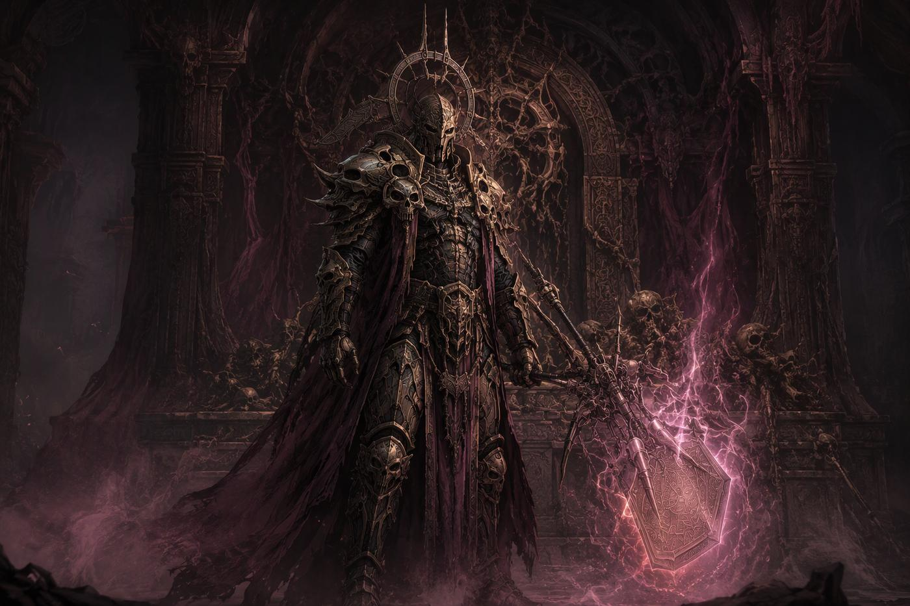
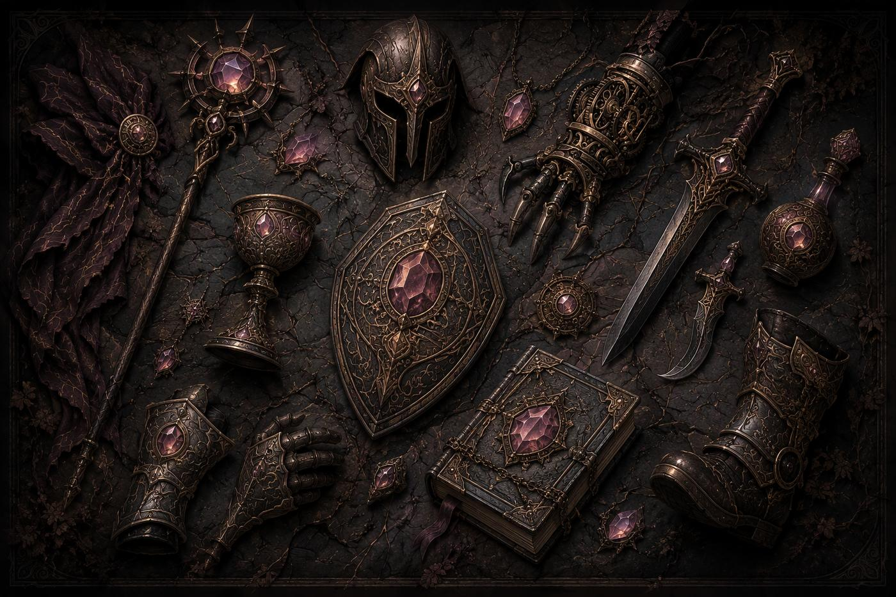
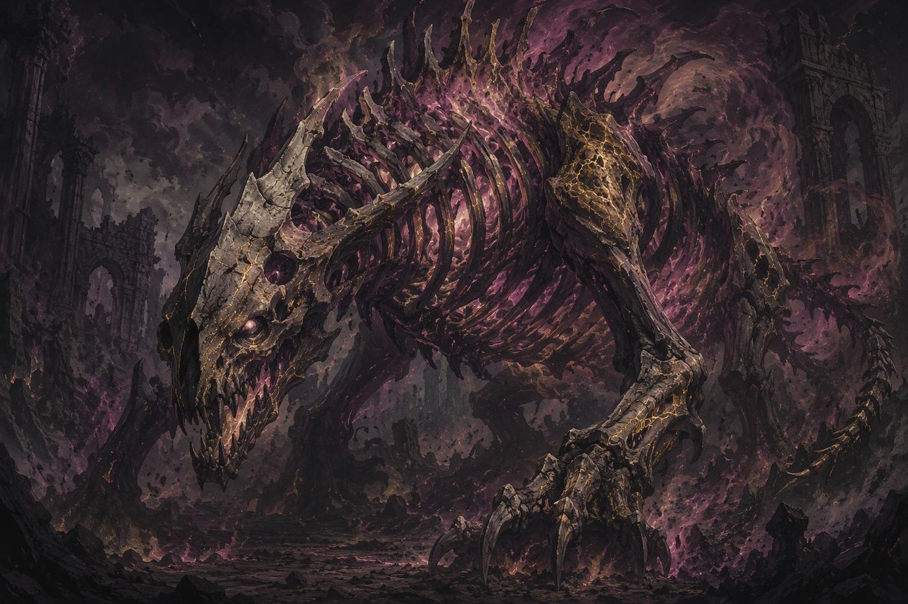
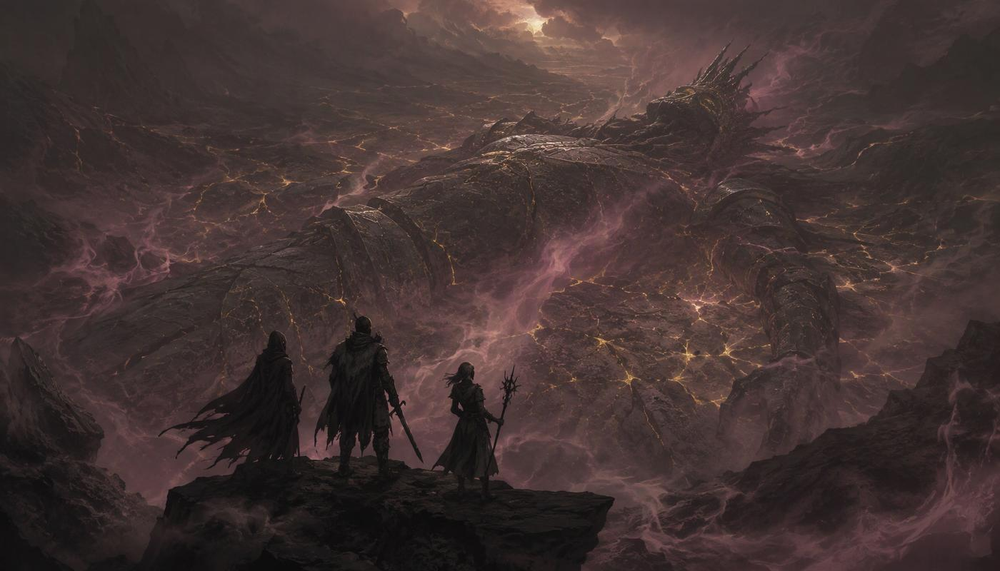

Числа карт, снаряжения и бестиария предварительные и ждут плейтеста. То, чего в книге пока нет, собрано на последней странице.
Врата
Разделы

Создать героя
Конструктор персонажа с автоматическим расчётом характеристик и выбором класса.

Карты классов
300 двусторонних карт для четырёх классов: Праховик, Спирит, Критрим, Рукотворный.

Бестиарий
275 существ мира Чело с характеристиками, способностями и таблицами добычи.

Атлас мира
Интерактивная карта Тела Бога: регионы, народы, города и хроники восьми эпох.
Инструмент
Конструктор героя
Каталог
Снаряжение
Каталог
Бестиарий
Каталог
Дары Люмаров, Тенемаров и Туамаров
Под рукой за столом
Шпаргалка
Проверки и бой v2.1
- П(Стат, DC): проверка героя, d20 + Мод стата + бонусы ≥ DC.
- Попадание оружием: d20 + Мод Проворства + Точность ≥ Защита цели (8 + броня + бонусы).
- Попадание заклинанием: d20 + Мод Эфира ≥ магическая защита (8 + Мод Воли + бонусы).
- Урон: кубики оружия + кубики карты + кубики порога + Мод управляющего стата − Срез. Пороги 10/20/30 → +1/+2/+3 кубика. Базовая атака порогов не получает.
- Срез: ⌊Защита цели ÷ 5⌋ + Срез брони. Минимум урона 1.
- Крит: нат. 20 — автопопадание, кубики ×2 (Мод не удваивается). Нат. 1 — промах; если цель выкинула 1 на спасброске — провал и кубики ×2.
- Строка С(Стат, DC): цель бросает d20 + Мод стата против DC. DC = 10 + Мод Дара (до 9-го Возвышения) или 8 + Мод Дара (с 9-го). Успех: до 9-го — 0 урона, с 9-го — половина. Провал — полный урон + статус.
Что считается из статов
| Мод | ⌊стат ÷ 5⌋ |
| HP | 16 + Стойкость + 4 × Возвышение |
| Мана | 6 + Эфир; восстановление в начале хода: Мод Эфира |
| Защита | 8 + Защита вещей и бонусы |
| Магическая защита | 8 + Мод Воли + бонусы |
| Энергия | 4 на ход (+1 на 5-м, +2 на 10-м, +3 на 15-м при Целостности) |
| Целостность | Сумма по ветви ≥35 (5-е Возв.), ≥40 (10-е), ≥45 (15-е, +1 карта в руке) |
| Реакций за раунд | 1 + ⌊Мод Чутья ÷ 2⌋ |
| Инициатива | d20 + Возвышение |
| Добор | Брось d6: 1–3 → 2 карты, 4–6 → 3 карты. Рука до 5 (6 при Целостности 45) |
Статусы
| Статус | Эффект | Снять |
|---|---|---|
| Кровотечение | 2 урона в начале хода за стак, до 3 стаков | Бинт, 1 Энергия |
| Яд | −2 ко всем броскам, 3 хода | Время |
| Оглушение | −1 Энергия на ход | Конец раунда |
| Страх | −2 к атаке | Конец следующего хода |
| Горение | 3 урона в начале хода, 3 хода | Тушение, 1 Энергия |
| Опрокинут | Защита −2; первая ближняя атака по цели получает +1 куб. | Вставание, 1 Энергия |
| Сон | Не видит дальше 3 клеток; атаки по нему +2 к попаданию | Спасбросок Воли в конце хода (DC 8+тир) или урон |
Статусы не складываются, кроме Кровотечения. Статус вешается как С(Стат, 8+тир): тело — Стойкость, разум — Воля.
Усталость и Рана
| Усталость | Каждые 3 раунда в колоду замешивается карта Усталости (0 Э, без эффекта, сбрасывается за 0 Э) |
| Рана | Удар на 30% макс. HP и больше (после Среза) кладёт в руку карту Рана. Сброс: брось d4 — столько Энергии |
| 0 HP | Без сознания. Стабилизация: 1 Э + брось d6 + Мод Стойкости = HP, +1 Шрам. Без помощи через 2 раунда: П(Стойкость, 10), провал = смерть |
| Шрамы | 4-й Шрам = смерть. Снимается только на Привале (1 за Привал). Лечение в бою ≤25% макс. HP |
Двигатели классов
| Воин | Стойки: Натиск, Гарда, Хватка. Смена раз за ход бесплатна. Строка «Отклик» на картах. |
| Рыцарь | Бремя до 4 + Мод Воли. Перехват (1 Энергия, союзник в 3 клетках), Кара (каждое Бремя = +1 кубик). |
| Разбойник | Метка (1 Энергия): +B кубиков по Меченой и крит 19–20. HP −4. |
| Мастер | 2 слота Заготовок (3 с Возвышения 9). Срабатывают вне очереди по Триггеру с +B кубиков. Второе дыхание: раз за бой при 0 маны — 2 Э + 2d6 + Мод Эфира маны. |
B = 1 на Возвышениях 1–8, B = 2 на 9–15.
Карты — 4 стороны
- Две боевые стороны (фиксированные): Ф/Д, Ф/Г или Д/Г. В бою выбираешь одну.
- Ф — Физическая (обычная атака/защита). Д — Даровая (требует ману). Г — Гибридная (требует два стата ≥15).
- Социальный эффект — текстовое правило на обороте карты. Вне боя используется без Энергии/маны, раз за сцену.
- Энергия по ступени: ядро 1–2, архетип 1–3, подкласс 1–3 (снижено в v2.1).
- Г-сторона: −1 кубик в каждой половине, без штрафа при обоих статах не меньше 15.
Вне боя
- Социальные эффекты карт: проверка стат карты, бонус +2 (ядро), +3 (архетип), +4 (подкласс) ≥ Сложность Мастера.
- Раз за сцену на соц-эффект.
- Использованная карта возвращается в колоду после следующего боя или на Привале.
Множитель вещи
| стат ≤ n−5 | ×0,5 |
| n−4 … n+4 | ×1 |
| ≥ n+5 | ×1,5 (округление вниз) |
| < n−10 | вещь не работает |
Часть I
Мир
ПРОЛОГ. СМЕРТЬ БОГА
В Начале был Бог. Не добрый и не злой, просто Сущий. Он не создавал вселенную отдельно от себя. Он был вселенной. Материя была его Телом. Дух был его Душой. Время текло его дыханием, а пространство разворачивалось его мыслью.
А потом он умер.
Никто не знает, почему. Возможно, его убили, но кто способен убить того, кто есть всё? Возможно, он завершил себя сам, достигнув последнего предела самопознания. Возможно, он просто остановился, как останавливается сердце, прожившее вечность. Никто не знает. Никто не узнает. Факт остаётся фактом: Бог мёртв, и реальность, которую мы знаем, есть его тело, лежащее в пустоте.
Божественная плоть не гниёт. Она остывает. Нервы не вздрагивают, кровь не идёт, мысли не рождаются. Планеты это органы, которые ещё хранят тепло. Звёзды это нейроны, и светятся они по привычке, хотя приказов им давно никто не отдаёт.
Душа отделилась от Тела в миг смерти и застыла. Её мысли стали ландшафтами из эфира, чувства течениями силы, воля законами, по которым работает магия.
Там, где граница между Телом и Душой истончилась, лежат Места Наложения. Их меряют в процентах. В нуле нет ни магии, ни духов, там тихо и холодно. В ста духи ходят во плоти, а мысли весят как камни.
Ты родился в мире, который остывает. Что ты с ним сделаешь, решать тебе.
Глава 1. Пепел Вечности
Как читать эту главу
Её писали разные люди. Одни видели то, о чём пишут, другие слышали от тех, кто видел, третьи повторяли. Где источники спорят, мы оставили спор. Верного ответа у мира нет, и приезжему стоит к этому привыкнуть.
Три дороги жизни
Гуманоиды вышли из праха Тела и осколков Души. В их жилах кровь Бога, и поэтому они способны на всё: молиться и убивать, любить и предавать. Они наследники, которые никогда не узнают отца.
Спириты это мысли, которые Бог не успел додумать. Они застыли на полуслове, у них никогда не было тела. Чтобы остаться в материи, они носят Сосуды: куски мёртвой божественной плоти.
Критримы, или рукотворные, это всё, что живые создали без Бога: люди из колб, сшитые из частей, собранные из железа и стекла, выращенные в чанах. Это не обязательно машины. Их разум подражание, логика и механика, связи с Духовным Планом у них нет. Но в самых удачных иногда появляется искра, и от души её не отличить.
Восемь эпох
- Остывание (около трёх тысяч лет). Тишина после слова. Швы тонки, как волос, через них сочится холод. В тёплых органах из праха и осколков проступают первые гуманоиды. Их никто не творил, они случились.
- Первое тепло (около четырёх тысяч лет). Люди селятся у жара, как у воды. Рода, кочевья вокруг Горна и по берегам Жил. Народы начинают расходиться.
- Трещины (около двух тысяч лет). Через разошедшиеся Швы просачиваются Спириты, недосказанные тени. Люди принимают их за призраков, богов, беду. Конец положил Спирит, нашедший способ носить мёртвую плоть.
- Сосуды (около трёх тысяч лет). Спириты получают тела. Одни договариваются с людьми, другие воюют. Спирита в Сосуде нельзя убить, только рассеять, а это хуже.
- Кузни (около двух тысяч лет). Зодчие спрашивают: если дух носит мёртвую плоть, почему плоть нельзя оживить без духа? Артель ставит дело на поток. В Искровке рождается первая искра.
- Три голоса (около полутора тысяч лет). Душа Бога разделяется на эхо: Люмары (последняя надежда), Тенемары (последнее отчаяние), Туамари (последняя ясная мысль). Появляются первые паладины.
- Раскол (около тысячи лет). Люмары и Тенемары воюют без плана, каждое считает себя наследником. После битвы у Разлома домой не вернулся почти никто.
- Тихие годы (около семисот лет, наше время). Равновесие, которого никто не выбирал. Магия слабее, чем при дедах. Швы продолжают расходиться.
Наложение
Наложение это мера близости мира к живому Богу, от 0 до 100%. Оно единое для всего мира и держится около 30%. Только особые места отклоняются от этой серой нормы.
На 0–24% светлая и тёмная магия слабеет, на 75–100% усиливается. Подробности в главе о картах.
Шесть народов гуманоидов
Угары. Дети Горна. Кожа цвета остывающего угля, в темноте тускло рдеют. Носят камень за пазухой. Холод считают позором. Бельмари. Дети Бельма. Глаза молочные, а видят больше зрячих: рябь Наложения различают без приборов. Картографы и оценщики. Костари. Дети Становой Гряды. Высокие, костистые, медлительные. Одну кость умершего оставляют живым. Стражи, рыцари, паладины. Жильцы. Дети Жил. Смуглые, вены видны сквозь кожу. Торговцы и лодочники. «Мы жильцы, не хозяева». Золяне. Дети Выдоха. Серые, босые, говорят вполголоса. Кочевники и проводники. Слушают бурю: «ему трудно». Стежники. Родившиеся у Швов. В сумерках полупрозрачные, Спиритов видят без Наложения. На запястье нить, по узлу за каждый переход через Разлом.
Рукотворные
Восемь видов: колбовые (выращены в Артели, по закону имущество), гомункулы (малые, из чанов), химеры (сшиты из людей и зверей), шлаковые (брак со свалок Искровки), заводные (механизмы с искрой), сшитые (поднятая мёртвая плоть), хрустальные (кристаллические разумы из Бельма), безголосые (созданные в местах нулевого Наложения). Права у них свои в каждой земле: имущество, народ в становлении или «опыт», как говорит Круг.
Восемь земель Тела
Обитаемый мир это несколько областей на теле Бога, каждая размером с созвездие. В каждой тысячи миров. Космос не кончается, и Мастер вправе поселить в области любой мир, какой ему нужен.
| Земля | Что это | Наложение | Кто живёт |
|---|---|---|---|
| Горн | Сердце, планета-очаг | около 45% | угары, паломники |
| Бельмо | Око, планета-линза | около 10% | бельмари, хрустальные |
| Становая Гряда | Хребет, горная цепь | около 30%, ночью до 50% | костари, Орден |
| Нижние Копи | Печень, рудный край | около 20%, в глубине до 0 | жильцы, Артель, Искровка |
| Выдох | Лёгкие, пепельная степь | около 30%, в бурю до 60% | золяне, Дом Вдов |
| Жилы | Вены, речной край | около 30%, в дни разворота до 55% | жильцы, Вольница |
| Чело | Череп, плато-крепость | около 60% | Судная Палата |
| Разлом | Граница Тела и Души | от 80 до 99% | Спириты, стежники, безумцы |
Дороги между мирами. По Жилам долго и безопасно, там идёт торговля. Через Швы короче в разы и опаснее во столько же, там водят корабли стежники. Тропами Выдоха несут пепельные бури: быстро, но экипажи иногда сходят на берег другими людьми. Расплачиваются Прахом.
Семь сил
- Орден Негасимых. Рыцари и паладины Эйлис, со Становой Гряды. Берегут тепло и порядок.
- Артель. Зодчие, кузнецы и книжники Нижних Копей. Строят, торгуют, растят рукотворных.
- Судная Палата. Хранители приговоров Ноэмы, на Челе. Судят мёртвых без апелляции.
- Вольница. Спириты, отказавшиеся служить любому полюсу. Наёмники и контрабандисты.
- Искровка. Посёлок рукотворных. Доказывает, что искра не случайность.
- Дом Вдов. Культ Ворха Довершителя, из Выдоха. Хочет довершить разрушение.
- Круг Первого Шва. Тайное общество, копающее там, где копать нельзя.
Магия и Покровители
Вся магия это остаточная энергия Бога. Три цвета: Светлая (надежда: лечит, защищает), Тёмная (отчаяние: разрушает, проклинает), Нейтральная (чистая воля: двигает, открывает, развеивает). Каждое заклинание уносит тепло, и мир остывает чуть быстрее.
Паладинов выбирают Покровители, высшие сущности, которые дают Завет и дары с ценой: Эйлис Несгоревшая (Люмар, «Не гаси чужой огонь»), Ворх Довершитель (Тенемар, «Не оставляй незавершённого»), Ноэма (Туамар, «Не суди дважды»). Круг Первого Шва считает, что это три маски одного и того же.
Причина смерти Бога
Три версии, и все недоказуемы. Орден: убийство. Палата: самозавершение, последняя мысль была «достаточно». Артель: остановка, как стоят часы, и его можно запустить снова. В этой книге ответа нет и не будет.
Часть II
Герой
Глава 2. Создание героя
Герой создаётся за семь шагов.
- Исток. Гуманоид, Спирит или Критрим (ниже).
- Народ или вид. Один из шести народов или восьми видов рукотворных, либо свой, согласованный с Мастером.
- Статы. 30 очков на девять статов.
- Класс. Воин, Рыцарь, Разбойник или Мастер (глава 3).
- Снаряжение. Оружие и броня Тира 1.
- Мировоззрение. Начинается с 0.
- Детали. Имя, облик, мотивация. Что движет тобой в мире, где Бог мёртв?
Девять статов
Каждый стат от 0 до 40. Все очки стоят по 1.
| Ветвь | Стат | За что отвечает |
|---|---|---|
| Тело | Мощь | Урон ближним оружием, тяжёлое снаряжение, проверки силы |
| Проворство | Попадание оружием, лёгкое и дальнобойное оружие, скрытность | |
| Стойкость | Здоровье, спасброски против телесных эффектов, Блок | |
| Дух | Дар | Урон и лечение заклинаний, сложность твоих спасбросков |
| Эфир | Запас маны, её восстановление, попадание заклинаниями | |
| Воля | Защита от магии, спасброски против ментальных эффектов | |
| Разум | Постижение | Ремёсла (алхимия, инженерия), добор карт, анализ |
| Чутьё | Восприятие, интуиция, число реакций за раунд | |
| Присутствие | Социальные проверки и социальные эффекты карт (С(Воля, 8+Мод Присутствия)) |
Очки и потолок
- На старте 30 очков. За каждое Возвышение со 2-го по 15-е ещё +10. К 15-му Возвышению всего 170 очков.
- Потолок стата = 12 + 2 × Возвышение, максимум 40. На 1-м Возвышении потолок 14, на 14-м достигает 40.
- Модификатор (Мод) = стат ÷ 5, округляя вниз. Он записывается на листе героя.
| Стат | 0–4 | 5–9 | 10–14 | 15–19 | 20–24 | 25–29 | 30–34 | 35–39 | 40 |
|---|---|---|---|---|---|---|---|---|---|
| Мод | 0 | 1 | 2 | 3 | 4 | 5 | 6 | 7 | 8 |
Идея: к 15-му Возвышению можно довести пару статов до потолка, а остальные всё равно будут сильны.
Что считается из статов
| Показатель | Формула |
|---|---|
| Здоровье (HP) | 16 + Стойкость + 4 × Возвышение |
| Мана | 6 + Эфир |
| Восстановление маны | в начале хода равно Моду Эфира |
| Защита | 8 + Защита вещей и бонусы |
| Магическая защита (против заклинаний) | 8 + Мод Воли + бонусы |
| Энергия | 4 на ход, 5 при Целостности |
| Реакций за раунд | 1 + (Мод Чутья ÷ 2, вниз) |
| Инициатива | d20 + Возвышение |
| Добор карт | 3 в конце хода, +1 при Постижении 20 и выше |
Целостность. Бонус Энергии за равномерное развитие:
- Сумма по ветви ≥ 35 — +1 Энергия (с 5-го Возвышения)
- Сумма по ветви ≥ 40 — +1 Энергия (с 10-го Возвышения)
- Сумма по ветви ≥ 45 — +1 Энергия и +1 карта в руке (с 15-го Возвышения)
Для Критрима считаются две ветви (Дух и Разум); у Спирита все три, но Тело он не покупает: оно равно трети Духа. Награда универсалу: специалист сильнее в своём, универсал выдаёт больше действий.
Истоки
Гуманоид. Универсал, не имеет врождённых штрафов. Дар: Изъян (то, что наступает при Помрачении 3) вступает в силу на 2 хода позже.
Спирит. Тела нет, его заменяет Дух. - Тело из духа. Мощь, Проворство и Стойкость Спирита не покупаются: они равны трети магических статов. Мощь = Дар ÷ 3, Проворство = Эфир ÷ 3, Стойкость = Воля ÷ 3 (вниз). Вселяясь в сосуд, Спирит магией поддерживает и улучшает его физическое состояние: мышцы слушаются мысли, а не привычки. Так же устроен Критрим: его Дар и Эфир равны трети Постижения. Спирит может носить и обычные оружие и броню, но его Тело слабое, поэтому выгоднее вещи на Даре, Эфире и Воле (глава 8, «Снаряжение на магических статах»). - HP = 16 + Воля + 4 × Возвышение. Стойкость (Воля ÷ 3) на HP не влияет. - Защита = 8 + Мод Воли + бонусы брони и реликвий. Реликвия Спирита заменяет броню, но можно носить и обычную или магическую. - Касание. Безоружная атака: считается заклинанием, попадание d20 + Мод Эфира, урон от Дара. - Поглощение. Реакция раз за раунд: потрать до 1 + Мод Воли маны, каждая единица снимает 1 урона по тебе или по союзнику в 3 клетках. Так Спирит играет танком. - Иммунитет к ядам, болезням, усталости. Естественно не лечится: только магия и Привал.
Критрим (Резонатор). Души нет, есть расчёт. - Дар и Эфир равны Постижению ÷ 3 (вниз). Воля равна 0. - Магическая защита 8 + бонусы вещей. Иммунитет к ментальному воздействию. - Лечится ремонтом, а не заклинаниями. - Модули дают +Дар и +Эфир: T1 +3, T2 +6, T3 +10, T4 +14, три слота, требуют Постижение. Потолок Дара и Эфира 30.
Пример героя: Грета Вельк (Воин, 1-е Возвышение)
Костарь, Гуманоид. Из рода стражей Становой Гряды. Мощь 12, Проворство 8, Стойкость 10, остальные 0.
| HP | 16 + 10 + 4 = 30 |
| Мана | 6 |
| Энергия | 4 |
| Защита | 8 + 3 (стёганка) = 11; в Гарде 14 |
| Попадание | d20 + 1 (Мод Проворства) |
| Урон меча | d6 × 1,5 (Мощь 12 ≥ 10) + Мод Мощи 2 |
| Пороги | Мощь 10: +1 кубик к картам Мощи; Стойкость 10: +1 кубик к Блоку |
| Колода | шесть карт ядра Воина |
Глава 3. Классы
Классов четыре: Воин, Рыцарь, Разбойник, Мастер. У каждого есть ядро (Возвышения 1–2), три архетипа (с 3-го) и по три подкласса у каждого архетипа (с 9-го). Всего 4 × 3 × 3 = 36 подклассов и 300 карт: ядро 6, архетипы 11 × 3, подклассы 4 × 9 на класс. Все карты перечислены в Части IV.
Оружие не привязано к классам. Воин может взять любое оружие, а Рыцарь с ним может надеть что угодно, если хватает статов.
Число B. В текстах двигателей B = 1 на Возвышениях 1–8 и B = 2 на Возвышениях 9–15.
Воин. Стойки
У Воина всегда включена одна Стойка, выбранная заранее. Смена стойки раз за ход бесплатна, дальнейшая стоит 1 Энергию.
| Стойка | Эффект |
|---|---|
| Натиск | +B кубиков твоим атакам. Защита −2. |
| Гарда | Защита +3. +B кубиков Блока. |
| Хватка | Попавшая атака даёт цели Опрокинут если провалит С(Стойкость, 8+Мод Мощи). |
Отклик. На картах Воина нарисована иконка стойки. Если ты в этой стойке, действует строка «Отклик» на карте.
Слабое место. Воин с нулём Эфира и Дара не пользуется Д-сторонами. Это нормально: Д-стороны ядра слабее Ф-сторон и нужны для гибридных построений.
Архетипы (Возвышение 3)
- Мастер Оружия. Две бесплатные смены стойки за ход. Адепт стоек, финтов и комбинаций.
- Берсерк. Гарда заменена Яростью: +B кубиков атак, Защита −4, при HP ниже половины ещё +1 кубик.
- Монах. Смена стойки даёт 1 Энергию раз за ход. Хватка Монаха считается на Дар вместо Мощи.
Подклассы (Возвышение 9)
| Архетип | Подкласс | Что меняет |
|---|---|---|
| Мастер Оружия | Жнец | Натиск задевает всех врагов в 2 клетках от цели за половину кубиков. |
| Дуэлянт | В Гарде первый, кто атаковал тебя за раунд, получает контратаку в 1 кубик. | |
| Изверг | Хватка даёт Кровотечение вместо Опрокинут. | |
| Берсерк | Пожиратель | В Ярости попавшая атака лечит на Мод Мощи. |
| Аватар | В Ярости Срез +2, и тебя нельзя опрокинуть. | |
| Одержимый | Ярость включается без смены стойки; +1 Помрачение за бой. | |
| Монах | Исповедник | Хватка снимает статус с тебя или союзника. |
| Инок | Гарда даёт +1 Энергию в следующем ходу. | |
| Пилигрим | После смены стойки +2 клетки движения. |
Рыцарь. Бремя
Рыцарь берёт чужие удары на себя и возвращает их обидчику.
- Бремя растёт на 1 за попадание по тебе и за каждую перехваченную атаку (даже при промахе). Максимум 4 + Мод Воли. В конце твоего хода Бремя падает на 1.
- Перехват. Реакция за 1 Энергию: союзник в 3 клетках; атака бьёт по тебе.
- Кара. Каждое Бремя, которое ты тратишь, даёт +1 кубик атаке по обидчику; максимум B + 1 за атаку.
- Отклик. Если Бремя на карте достигает указанного порога, срабатывает строка «Отклик».
- Надлом. Если Бремя на максимуме в конце хода: −1 Энергия на следующий ход.
Архетипы (Возвышение 3)
- Паладин. Кара может лечить вместо урона. Путь Покровителей (ниже).
- Бастион. Перехват в 6 клетках, первый за раунд бесплатен.
- Титан. +1 Бремя за карту стоимостью 3 и более; Кара по области в 1 клетку.
Подклассы (Возвышение 9)
| Архетип | Подкласс | Что меняет |
|---|---|---|
| Паладин | Инквизитор | Кара клеймит: следующая атака союзника по цели получает +1 кубик. |
| Хранитель Веры | Перехват даёт перехваченному Защиту +2 на раунд. | |
| Рыцарь Порядка | Бремя не убывает в конце хода. | |
| Бастион | Оплот | Если не двигался: Срез +2 и максимум Бремя +2. |
| Эгида | Первый Перехват за раунд бесплатен и даёт союзнику Срез +1. | |
| Тактик | 1 Бремя вместо Кары сдвигает союзника на 2 клетки. | |
| Титан | Сотрясатель Мира | Кара по области 1 клетки и Опрокидывание. |
| Центр Тяжести | Кара притягивает цель на 2 клетки. | |
| Разрушитель Брони | Кара игнорирует Срез и вычет от Защиты. |
Паладин и Покровители. Три подкласса Паладина это три Покровителя: Ворх (Инквизитор), Эйлис (Хранитель Веры), Ноэма (Рыцарь Порядка). Паладин получает Благоволение 0–3. Оно растёт на 1 за исполнение Завета (раз за сцену на каждый Завет) и на Привале падает до 1. На 1 действует Милость (карта считается ×1,5 независимо от Требования), на 2 Вмешательство, на 3 Явление (раз за Привал). Нарушение Завета: теряется всё Благоволение, +1 Помрачение, карты подкласса ×0,5 до Искупления.
| Покровитель | Заветы | Вмешательство | Явление |
|---|---|---|---|
| Эйлис Несгоревшая (Люмар, Хранитель) | Прими удар за слабого. Пощади сдавшегося. Не оставь павшего. | Союзнику +4 Защиты и снятие Раны. | Рассвет: союзники +25% HP, Помрачение −1; цена +1 Помрачение. |
| Ворх Довершитель (Тенемар, Инквизитор) | Добей раненого. Заплати кровью. Вырви признание. | Клеймо: цель получает +4 урона от атак. | Приговор: цель с HP не выше 50% погибает, иначе теряет 50% HP; цена +2 Помрачения. |
| Ноэма (Туамар, Рыцарь Порядка) | Держи слово. Мера за меру. Не вмешивайся в чужой выбор. | Мера: раз в раунд отмена карты или эффекта врага. | Суд: зона 3 клетки, все эффекты и магия отключены на 2 раунда (и для паладина). |
Разбойник. Метка
- Метка. 1 Энергия, одна цель за раз. Атаки по Меченой получают +B кубиков и крит на 19–20. Убийство Меченой переносит Метку на другого врага бесплатно.
- Цена. HP −4 (легко броня и лёгкое оружие, мало здоровья).
- Многие карты Разбойника дают эффект, когда цель Меченая (строка «Отклик»).
Архетипы (Возвышение 3)
- Лучник. Метка на дальности; +1 кубик, если не двигался.
- Вор-Ассасин. Метка бесплатна по цели, не заметившей тебя.
- Рейнджер. Две Метки одновременно и Спутник: призванное существо (Гончая, Ястреб или Теневой зверь, ниже).
Подклассы (Возвышение 9)
| Архетип | Подкласс | Что меняет |
|---|---|---|
| Лучник | Мёртвый Глаз | Если не двигался, по Меченой крит на 18–20. |
| Спринтер | Метка переносится бесплатно раз за ход; +2 клетки движения после выстрела. | |
| Астральный Стрелок | Атаки по Меченой вместо попадания бросают С(Воля). | |
| Вор-Ассасин | Тень | Первая атака по не заметившей тебя цели +2 кубика. |
| Безродный | Попавшая по Меченой атака накладывает Яд. | |
| Паяц | Метка ещё накладывает Страх (раз за бой). | |
| Рейнджер | Преследователь | Метка не снимается, если цель вышла из зоны; +2 клетки к Меченой. |
| Коллектор | Взыскание: раз за раунд бесплатная атака вне очереди по врагу, начавшему отход от тебя. Тяжёлая броня по Требованию Проворства; штраф HP не действует. | |
| Связующий | Метка ставится на союзное существо (питомца, союзника): когда помеченный попадает по цели, ты раз за раунд бесплатно атакуешь ту же цель. |
Спутник Рейнджера
Рейнджер с 3-го Возвышения призывает Спутника: существо, которое охотится вместе с ним. Спутник не карта и не занимает слот. Он стоит на поле как отдельная фигура.
- Призыв. 2 Энергии, ставишь Спутника в 2 клетках от себя. Если Спутник пал, на Привале он возвращается, а в бою его можно вызвать заново за 2 Энергии и сброс 1 карты (раз за бой). Один Спутник на героя.
- Действие. В твой ход Спутник получает действие за 1 Энергию (пройти до 6 клеток или атаковать), до двух действий за ход. По Меченой цели его атака получает +B куб. бесплатно раз за ход.
- Показатели. Защита 10 + Мод Чутья. HP 8 + 4 × Возвышение. Атака: d20 + Мод Проворства, урон d6 + кубики порогов Проворства + бонус формы. Срез 0.
- Реакции. У Спутника нет Реакций, но ты можешь сыграть свою Реакцию, чтобы защитить его, как союзника.
- Метки. Спутника можно сделать целью Метки Связующего: тогда Метка передаётся ему.
- Урон и смерть. Он не получает Раны, на 0 HP исчезает. Спасбросок Спутника: d20 + Мод Чутья.
Форма Спутника выбирается при призыве и меняется на Привале.
| Форма | Особенность | Где хорош |
|---|---|---|
| Гончая | Ближний бой. Попавшая атака Опрокидывает цель, если она провалит С(Стойкость, 8+Мод Проворства). | Держит врага на месте, защищает. |
| Ястреб | Дальность 8, не провоцирует. Попавшая атака даёт цели −2 к попаданию на раунд. | Лучнику и стрелку, ломает вражеский залп. |
| Теневой зверь | Невидим, пока не атаковал. Первая атака по не заметившей цели +1 куб. | Убийце и охотнику на одного. |
С 9-го Возвышения Спутник получает Закалку: Срез +1, а HP растут на 6 за Возвышение вместо 4. Подкласс Связующий добавляет, что Спутник считается Связанным союзником во всех картах Связующего.
Мастер. Заготовки
- Слоты. Два слота Заготовок (три с Возвышения 9).
- Заготовка. Карта с Триггером кладётся в слот за обычную Энергию и срабатывает вне очереди, когда условие выполнено, с +B кубиками. Не сработавшая за 2 раунда срабатывает сама без бонуса.
- Виды Заготовок. Мелодия (пока лежит в слоте, действует каждый ход), Механизм (срабатывает по Триггеру), Контракт (особый слот Великого Негоцианта).
- Второе дыхание. Раз за бой, когда мана падает до 0: потрать 2 Энергии и брось 2d6 + Мод Эфира — восстанови столько маны.
- На Привале слоты сбрасываются.
Архетипы (Возвышение 3)
- Торговец. Заготовку можно отдать союзнику.
- Бард. Одна Заготовка-Мелодия работает каждый ход.
- Инженер. Заготовки-Механизмы срабатывают 2 раза.
Подклассы (Возвышение 9)
| Архетип | Подкласс | Что меняет |
|---|---|---|
| Торговец | Оружейный Магнат | Срабатывание Заготовки даёт союзнику +2 Точности на раунд. |
| Арканный Брокер | Заготовки могут быть Д-сторонами чужого цвета. | |
| Великий Негоциант | +1 слот под Заготовки-Контракты. | |
| Бард | Маэстро | Мелодия не занимает слот. |
| Мастер Труппы | Мелодии действуют на союзников в 6 клетках вместо 3. | |
| Виртуоз | Смена Мелодии бесплатна, можно держать две. | |
| Инженер | Мастер на Все Руки | +1 слот; Механизм можно переставить за 1 Энергию. |
| Магический Инженер | Механизмы бьют спасброском С. | |
| Боевой Инженер | Механизмы срабатывают 3 раза с +1 кубиком. |
Глава 4. Прогрессия
15 Возвышений
Уровень называется Возвышением. Их 15. Возвышение происходит на Привале, а не в бою.
| Возвышение | Что происходит |
|---|---|
| 1 | Создание героя. Изучено 6 карт ядра |
| 1–15 | Выбор одной из трёх пассивных способностей на каждом Возвышении (см. ниже) |
| 2–8 | +10 очков статов, +1 изученная карта. Нужно 3 Метки (Веха на 3 и 6) |
| 3 | Выбор архетипа (первые 4 карты). Изученных карт 5 + Возвышение |
| 6 | Вторая ступень архетипа: ещё 4 карты |
| 12 | Высшая ступень архетипа: ещё 3 карты |
| 9 | Выбор подкласса. B вырастает с 1 до 2. Спасбросок С: при успехе половина урона, а не 0 |
| 9–15 | +10 очков статов, +1 изученная карта. Нужно 4 Метки (Веха на 9, 12, 15) |
| 11 | Свободная сборка колоды |
Пассивные умения
На каждом Возвышении, от 1-го до 15-го, герой выбирает одно пассивное умение из трёх своего класса. Это строка под листом героя: ей не нужны карта, Энергия и место в руке. Выбор постоянен. За 15 Возвышений набирается 15 умений.
- Строки. В каждой таблице в колонке 1 умение для выживания, в колонке 2 для колоды и ресурсов, в колонке 3 для урона и контроля (у Мастера: колода, Заготовки, союзники). Выбирай ровно по вкусу или чередуй.
- Предохранитель. Все пассивки вместе не дают больше +2 куб. к урону и +3 к Защите или Срезу. Эффекты «раз за бой» не считаются.
- Возвышения 3, 9, 15 особенные: умения там сильнее.
Воин
| Возв. | 1. Выжить | 2. Колода / ресурс | 3. Урон / контроль |
|---|---|---|---|
| 1 | Крепкое тело. Максимум HP +4. | Стойка наготове. В начале боя войди в любую стойку бесплатно. | Тяжёлая рука. Атаки по Опрокинутой цели получают +2 к урону. |
| 2 | Толстая кожа. Срез +1 против первой атаки по тебе в раунде. | Короткий вдох. Раз за бой верни 1 Энергию после сыгранной Реакции. | Верный глаз. +1 к попаданию оружием, пока ты в Натиске. |
| 3 | Закалка. Максимум HP +1 за каждое Возвышение. Первая попавшая по тебе атака в раунде получает −1 куб. | Темп. Раз за ход, когда ты меняешь стойку, добери 1 карту (входит в предел эффектов). | Жила. Раз за бой при падении HP ниже трети сыграй Реакцию бесплатно и верни 1 Энергию. |
| 4 | Стойкость к боли. Яд и Горение на тебе длятся на 1 ход меньше. | Запас ударов. Раз за бой верни из сброса в руку 1 карту Атаки. | Скорый шаг. +1 клетка движения. Отход в Натиске не провоцирует атаки. |
| 5 | Железная воля. Страх на тебе длится на 1 раунд меньше. Раз за бой проигнорируй Оглушение. | Вольный ход. Раз за бой одна смена стойки сверх лимита бесплатна. | Добивающий. Раз за ход атака по цели ниже половины HP получает +1 куб. |
| 6 | Не сдвинешь. Тебя нельзя сдвинуть или притянуть больше чем на 1 клетку. | Копилка. Каждая сброшенная за ход карта Атаки даёт 1 временный HP (до 4). | Рассечь. Первая атака в раунде по цели с Кровотечением получает +1 куб. |
| 7 | Щит из мяса. Пока HP ниже половины, Срез +1. | Сметливость. Раз за ход, сбросив 1 карту, добери 1 карту. | Размашистый. Раз за бой одна атака задевает ещё одного врага рядом с целью за половину кубиков. |
| 8 | Живучий. Максимум HP +8. | Мастер колоды. В начале боя сбрось до 2 карт и добери столько же. | Тяжёлая поступь. Раз за бой атака Опрокидывает цель без спасброска. |
| 9 | Несокрушимый дух. Страх, Оглушение и Опрокинут на тебе длятся на 1 раунд меньше. Раз за бой сними статус бесплатно. | Кровавая память. Каждая пара карт, сброшенных за ход, даёт твоей следующей атаке +1 куб. (до +2). | Ломающий ритм. Каждая третья атака за бой получает +2 куб. |
| 10 | Каменный лоб. Первый прошедший по тебе удар за бой снижен на 4 урона. | Ещё раз. Раз за бой верни из сброса в руку 2 карты. | Кровавый заход. Убийство врага возвращает 1 Энергию (раз за ход). |
| 11 | Вторая жизнь. Раз за Привал при падении до 0 HP остайся на 1 HP. | Свободная колода. Раз за бой добери карты до 5 в руке. | Раскол. Раз за бой одна атака игнорирует Срез. |
| 12 | Броня воли. Магическая Защита +2. | Ритм боя. Третья сыгранная за ход карта стоит на 1 Энергию меньше. | Рык. Раз за бой С(Воля): все враги в 3 клетках получают Страх. |
| 13 | Несдающийся. Пока HP ниже половины, в начале хода исцеляй 2 HP. | Непрерывность. Усиления на тебе не вытесняются: можно держать 3 вместо 2. | Мясорубка. Раз за ход атака задевает ещё одного врага рядом с целью за полные кубики. |
| 14 | Стена. Срез +1 постоянно. | Мастер стоек. Раз за ход смена стойки даёт тебе 1 Энергию. | Казнь. Атака по цели ниже 25% HP получает +2 куб. |
| 15 | Бессмертный на миг. Раз за бой при смерти остайся на 1 HP и верни 2 Энергии. | Бесконечный Предел. Раз за бой карта с Исходом после розыгрыша возвращается в руку. | Закат. Раз за бой одна атака получает +4 куб. |
Рыцарь
| Возв. | 1. Выжить | 2. Колода / ресурс | 3. Урон / контроль |
|---|---|---|---|
| 1 | Тяжёлая броня. Защита +1. | Бремя наготове. В начале боя получи 1 Бремя. | Укол долга. Первая Кара за бой получает +1 куб. |
| 2 | Крепкий щит. Раз за ход Блок щитом даёт +1 куб. | Взгляд заступника. Перехват работает в 4 клетках вместо 3. | Острый обет. +1 к попаданию по тем, кто атаковал твоего союзника в этом раунде. |
| 3 | Железная вера. Раз за бой, когда ты принял удар за союзника, он снимает с себя один статус. | Клятва заступника. Раз за сцену Перехват в 6 клетках бесплатен. | Тяжёлая рука. Максимум Бремени +1. Первая Кара за бой +1 куб. |
| 4 | Стойкость долга. Максимум Бремени +1. | Принять чужое. Раз за бой один Перехват бесплатен. | Мстительный. Атака по тому, кто бил союзника, получает +1 куб. |
| 5 | Привычка к ранам. Пока у тебя 2 Бремени и больше, Срез +1. | Сплочённость. Союзники в 2 клетках от тебя получают Защиту +1. | Правосудие. Атака по цели с Клеймом получает +1 куб. |
| 6 | Несдвигаемый. Тебя нельзя сдвинуть или притянуть. | Опора отряда. Раз за бой, сыграв Реакцию, ты снимаешь статус с союзника в 3 клетках. | Гнев праведный. Если по тебе попали, твоя следующая атака получает +1 к попаданию. |
| 7 | Каменный шаг. Раз за бой Бремя не падает в конце хода. | Охрана. Раз за раунд союзник в 3 клетках получает Срез +1. | Кара шире. Раз за бой Кара задевает ещё одного врага рядом с целью. |
| 8 | Живая крепость. Максимум HP +8. | Вера в строй. Раз за бой все союзники в 4 клетках добирают по 1 карте. | Раскалённый удар. Раз за бой Кара получает +2 куб. |
| 9 | Щит и меч. Каждый Перехват даёт перехваченному Срез +1 до конца раунда и +1 Бремя сверх обычного. | Исповедь Ордена. Раз за Привал лечи союзника на 4d6 HP и снимай с него Помрачение 1. | Кара без жалости. Кара даёт +2 куб. вместо +1 (максимум B + 2 за атаку). |
| 10 | Броня воли. Магическая Защита +2. | Знамя. Союзники в 4 клетках не получают Страх. | Удар с плеча. Раз за ход атака Опрокидывает цель, если у тебя 3 Бремени и больше. |
| 11 | Непоколебимый. Раз за бой проигнорируй один удар полностью. | Клятва стали. Союзник, которого ты перехватил, получает +1 куб. к следующей атаке. | Приговор. Раз за бой атака по цели с Клеймом получает +2 куб. |
| 12 | Щит чести. Раз за раунд первый попавший по тебе удар снижен на 2. | Приказ. Раз за бой союзник бесплатно играет карту Атаки. | Тяжёлая длань. Кара игнорирует 1 Срез. |
| 13 | Кованый. Срез +1 постоянно. | Крепкое плечо. Каждый Перехват исцеляет перехваченного на 2 HP. | Праведный гнев. Если Бремя на максимуме в конце хода, вместо Надлома получи +1 куб. к следующей атаке. |
| 14 | Страж. Пока у тебя 3 Бремени и больше, в начале хода исцеляй 2 HP. | Святая клятва. Раз за бой союзник у 0 HP остаётся на 1 HP. | Казнь. Атака по цели ниже 25% HP получает +2 куб. |
| 15 | Неприступный. Раз за бой на раунд все удары по тебе снижены на 3 и Бремя не растёт. | Последний довод. Раз за Привал все союзники восстанавливают 25% HP. | Суд. Раз за бой Кара удваивается. |
Разбойник
| Возв. | 1. Выжить | 2. Колода / ресурс | 3. Урон / контроль |
|---|---|---|---|
| 1 | Тихий шаг. +2 к проверкам скрытности. | Первая Метка. Первая Метка за бой бесплатна. | Лёгкая рука. +1 клетка движения. |
| 2 | Ускользающий шаг. Реакцией можешь отойти на 1 клетку без провокации. | Острый глаз. +1 к попаданию по Меченой цели. | Быстрые пальцы. Раз за бой добери 1 карту после сыгранной Реакции. |
| 3 | Лёгкие ноги. +1 клетка движения. Отход от врага не провоцирует атаки. | Зоркий глаз. Раз за раунд Метка по цели, не видевшей тебя, бесплатна. | Запасной нож. Раз за бой после сыгранной Реакции добери 1 карту. |
| 4 | Тень на стене. Первая дальняя атака по тебе за раунд получает −2 к попаданию. | Заметный след. Метка остаётся на цели ещё 1 раунд после того, как ты её снял. | Кувырок. Раз за бой отойди на 3 клетки бесплатно. |
| 5 | Растворение. Раз за бой стань незаметным. | Выжидание. Если ты не двигался, атака по Меченой получает +1 куб. | Ловкий вор. Раз за бой сбрось 1 карту, добери 2. |
| 6 | Скользкий. Если ты двигался в этом ходу, Срез +1. | Два прицела. Вторая Метка стоит 0 Энергии. | Шустрый. Раз за ход Метка по цели в 1 клетке бесплатна. |
| 7 | Яд в рукаве. Раз за бой попавшая атака даёт Яд. | Добить. Атака по цели ниже половины HP получает +1 куб. (раз за ход). | Хитрец. Раз за бой верни из сброса 1 карту Манёвра. |
| 8 | Крепкая шкура. Максимум HP +8. | Охотничий азарт. Убийство Меченой цели даёт 1 карту (раз за ход). | Ловкач. Раз за бой сыграй 2 Манёвра за 1 Энергию. |
| 9 | Ускользающий. Раз за раунд, после попадания по Меченой, первый удар по тебе в раунде получает −3 куб. | Хищник. Убийство Меченой цели возвращает 1 Энергию и 1 карту (раз за ход). | Мастер ловушек. Раз за бой помечай одним действием до трёх целей на одной линии. |
| 10 | Растворение II. Раз за бой уйди из боя на раунд и вернись в любой клетке. | Спаренная Метка. После убийства Меченой цели следующая атака получает +1 куб. | Бег по стенам. +2 клетки движения. |
| 11 | Призрак. Первая атака по тебе в бою всегда промахивается. | Крепкая хватка. Метка не снимается, если цель вышла из зоны. | Игра с колодой. Раз за бой верни из сброса 2 карты. |
| 12 | Дымка. Раз за раунд одна Реакция бесплатна. | Дальний выстрел. Дальность дальнобойного оружия +2. | Бросок и перекат. Раз за ход после атаки пройди 2 клетки без провокации. |
| 13 | Не заметят. Скрытность +4. Первая атака после скрытности получает +2 куб. | Двойная смерть. Метка переносится при убийстве на двух врагов. | Всё успею. Раз за бой получи +1 Энергию на этот ход. |
| 14 | Невидимка. Раз за бой стань невидимым на 2 раунда. | Охотничья ночь. Атаки по Меченой получают +1 куб. ночью или в укрытии. | Неуловимый. Раз за раунд сдвигайся на 2 клетки без провокации. |
| 15 | Лёгкая смерть. Раз за бой при смерти остайся на 1 HP и уйди из боя. | Ударная метка. Раз за бой атака по Меченой цели получает автоматический крит. | Мастер всех дорог. Раз за бой верни из сброса все карты Манёвра. |
Мастер
| Возв. | 1. Колода | 2. Заготовки | 3. Союзники |
|---|---|---|---|
| 1 | Тренированный ум. В начале боя добери 1 карту. | Лишний крюк. Первая Заготовка за бой стоит на 1 Энергию меньше. | Хороший друг. Раз за бой союзник получает +1 к попаданию на раунд. |
| 2 | Лёгкий ход. Раз за бой верни из сброса 1 карту. | Точная мина. +1 к попаданию Заготовок. | Деловая хватка. Раз за сцену строка «Вне боя» получает +2. |
| 3 | Расчёт. В начале боя сбрось 1 карту и добери 2 (раз за бой). | Быстрая рука. Первая Заготовка за ход стоит на 1 Энергию меньше. | Запасной слот. Одну Заготовку можно держать вне слотов: раз за бой она срабатывает без слота. |
| 4 | Запасные идеи. Раз за ход, сбросив 1 карту, добери 1 карту. | Лишний триггер. Заготовка срабатывает по любому из двух Триггеров (выбери при розыгрыше). | Подмога. Пока у тебя есть Заготовка в слоте, союзники в 3 клетках получают Защиту +1. |
| 5 | Предусмотрительность. В начале боя загляни в 3 верхние карты колоды и сбрось любую. | Крепкая сборка. Заготовка ждёт 3 раунда вместо 2 до срабатывания без бонуса. | Скидка для своих. Карты, которые ты передал союзнику, стоят ему на 1 Энергию меньше. |
| 6 | Чёткий порядок. Максимум руки 6 карт. | Ловушка с запасом. Первое срабатывание Заготовки за бой получает +1 куб. | Щедрая рука. Раз за бой отдай союзнику карту из руки. |
| 7 | Ум-палата. Раз за бой верни из сброса 1 карту типа Приём. | Перенастройка. Раз за ход перемести Заготовку между слотами бесплатно. | Союзная выручка. Раз за бой союзник добирает 2 карты. |
| 8 | Крепкая голова. Максимум HP +6. Магическая Защита +1. | Мастерская. Раз за Привал создай один расходник бесплатно (до Т2). | Покровитель. Пока у тебя в слоте Мелодия или Контракт, союзники в 3 клетках получают +1 к попаданию. |
| 9 | Двойной расчёт. Раз за раунд любая Заготовка срабатывает дважды. | Контрактник. B для твоих Заготовок на 1 выше. | Чёрный день. Раз за бой верни все Заготовки из слотов в руку. |
| 10 | Холодный ум. Магическая Защита +2. | Резерв. Заготовка, лежащая в слоте при начале Привала, остаётся в слоте. | Благодетель. Раз за бой союзник получает +1 Энергию. |
| 11 | Свободная колода. Раз за бой перетасуй сброс в колоду. | Удвоение. Раз за бой Заготовка срабатывает дважды. | Общий кошелёк. Раз за Привал сними 1 Помрачение с союзника. |
| 12 | Дальновидный. В начале хода загляни в 2 верхние карты. | Кованый механизм. Заготовки-Механизмы получают +1 куб. | Зов подмоги. Раз за бой союзник бесплатно играет карту. |
| 13 | Мыслитель. Раз за ход верни из сброса 1 карту. | Мастер слотов. Четвёртый слот, только для Мелодии. | Организатор. Союзники в 6 клетках получают Защиту +1. |
| 14 | Неуязвимый ум. Раз за бой сними Страх или Оглушение с себя и союзника. | Мастер заготовок. B для Заготовок на 1 выше. | Лидер. Раз за бой все союзники добирают по 1 карте. |
| 15 | Предельный расчёт. Раз за бой верни из сброса 3 карты. | Вечный механизм. Раз за бой одна Заготовка срабатывает 3 раза. | Мастер сделки. Раз за бой союзник играет карту с Исходом второй раз. |
Метки и Вехи: как получить Возвышение
Возвышение даёт сочетание Меток (копятся постоянно) и Вехи (на каждом третьем Возвышении).
Метки это единый счёт заслуг. Для Возвышения 2–8 нужно по 3 Метки, для 9–15 по 4. Всего 49 Меток. Мастер выдаёт Метку за:
| Что произошло | Метки |
|---|---|
| Закрытая цель сцены, значимая победа над угрозой тира героя или выше | 1 |
| Открытие, ответ на загадку, важный выбор с последствиями | 1 |
| Героический поступок (в том числе поступок Дара) | 1 |
| Завершённая арка сюжета | 2 |
Метки не пропадают и переходят на следующее Возвышение, если набрано сверх нужного. Ориентир темпа: 2–3 Метки за сессию, то есть Возвышение раз в 1–2 сессии, весь путь в 15 уровней занимает около 20 сессий.
Веха. На 3, 6, 9, 12 и 15-е Возвышения мало набрать Метки: нужно ещё пройти Веху, то есть испытание. Веху назначает Мастер, подойдёт любое из трёх:
- трудная проверка (Сложность 16) или цепочка из трёх обычных (12) в одной сцене;
- бой с угрозой выше тира героя (например, элита или босс на ступень выше);
- подвиг, привязанный к истории героя: приведи наставника, закрой старый долг, доберись до места.
На остальных Возвышениях Вехи нет: достаточно Меток. Возвышение происходит на Привале: герой получает +10 очков статов, +1 изученную карту и выбирает новую пассивку.
Колода
- Изучаются только карты своей ветви: ядро класса (6 карт), свой архетип в три ступени (4 карты с 3-го Возвышения, ещё 4 с 6-го, ещё 3 с 12-го) и свой подкласс (4 карты, с 9-го). Всего в ветви 21 карта, и самые сильные открываются на высоких Возвышениях.
- +1 карта на каждом Возвышении. Изучено карт = 5 + Возвышение, но не больше доступных: на 1-м шесть (всё ядро), на 2-м семь, на 15-м двадцать из двадцати одной. Какие именно карты изучить, выбирает игрок.
- Колода в бою не больше 12 карт. Размер колоды = изученные карты, но не больше 12. На 1–7-м Возвышении колода равна числу изученных карт, с 7-го всегда 12. Карты, изученные сверх 12, лежат в запасе. Число 12 выбрано под кубик d12: колода любого героя нумеруется 1…12.
- До 10-го Возвышения можно заменить одну карту колоды за Возвышение на изученную. С 11-го колода собирается свободно из изученных.
- Верхние карты. Эффекты «загляни N верхних карт» и «на дно колоды» работают при игре с картами как обычно. При игре по листу «верхняя карта» это результат броска кубика колоды, а «на дно» значит «вычеркни до перетасовки».
Карты класса
У каждого класса есть одна карта класса. Она лежит рядом с листом героя, не входит в колоду и не занимает место в руке. Её можно сыграть раз за ход за указанную Энергию, как обычную сторону Ф. Карта класса даёт доступ к ресурсу двигателя (Стойка, Бремя, Метка, Заготовка) и никогда не уходит в Исход.
| Класс | Карта | Энергия | Эффект |
|---|---|---|---|
| Воин | Боевой строй | 1 | Войди в любую стойку (сверх бесплатной смены). Если в этом ходу ты сменил стойку хотя бы раз, добери 1 карту (раз за ход, входит в предел эффектов добора). Вне боя («Выправка», Присутствие): Отряд за твоей спиной: союзники в 6 клетках получают +2 к первой проверке этой сцены. |
| Рыцарь | Принять бремя | 1 | Получи 2 Бремени и потеряй 2 × B HP (не больше 4). Реакция: тот же эффект, но удар по союзнику в 3 клетках переходит на тебя. Вне боя («Взять вину на себя», Присутствие): Ответственность за неудачу сцены ложится на тебя: союзникам +2 к следующей проверке, ты получаешь 1 Помрачение. |
| Разбойник | Охота | 1 | Пометь цель в 6 клетках без траты Энергии на Метку и передвинься на 2 клетки без провокации. Если помеченная цель погибла в этом ходу, верни 1 Энергию. Вне боя («Выследить», Чутьё): Найди след цели: нужна одна проверка Чутья, успех даёт её местоположение и привычки. |
| Мастер | Взвод заготовки | 1 | Положи карту из руки в свободный слот Заготовки (или замени занятую, старая уходит в сброс) и добери 1 карту. Слот сработает по своему триггеру с +1 куб. урона. Вне боя («Подготовить место», Постижение): Расставь ловушку или сигнал: до конца сцены первая попытка проникнуть в место получает −4 к проверке. |
Наследие
Погиб герой? Новый стартует на Возвышении погибшего минус 2 (минимум 1), берёт одну карту погибшего и одну вещь не выше Т2.
Часть III
Правила
Глава 5. Проверки и бой
Проверка
Брось d20, прибавь Мод подходящего стата и бонусы. Сравни с Сложностью:
| Сложность | 8 | 12 | 16 | 20 | 24 |
|---|---|---|---|---|---|
| Уровень | лёгкая | обычная | трудная | героическая | эпическая |
Сложности не растут с Возвышением. Растёт герой.
Крит
Натуральная 20: попадание автоматическое, кубики урона удваиваются (Мод не удваивается). Натуральная 1: промах. Если на 1 бросает цель, а не герой, то цель провалила спасбросок и кубики урона удваиваются.
Бой
- Инициатива. Каждый бросает d20 + Возвышение. Застигнутые врасплох ходят последними.
- Стартовая рука: 3 карты (как добор; решение v14).
- Ход. У тебя 4 Энергии (+1 на 5-м, +2 на 10-м, +3 на 15-м Возвышении при Целостности). Свободное движение 3 клетки. Базовая атака оружием стоит 1 Энергию, вторая за ход 2. Играй карты. В конце хода брось d6: 1–3 → добор 2 карты, 4–6 → 3 карты. Рука не больше 5 (6 при Целостности 45).
- Реакции. За раунд 1 + ⌊Мод Чутья ÷ 2⌋. Реакция берёт Энергию из твоего следующего хода.
- Усталость. Каждые 3 раунда в колоду замешивается карта Усталости (0 Энергии, без эффекта, сбрасывается за 0 Энергии или при любом доборе).
- Конец раунда. Следующий в инициативе.
Попадание
Носитель удара определяет, как бросать:
| Носитель | Попадание | Против |
|---|---|---|
| Оружие (в том числе усиленное стихией) | d20 + Мод Проворства + Точность | Защита цели |
| Заклинание (магический удар, снаряд, область с баффом) | d20 + Мод Эфира | 8 + Мод Воли цели + бонусы |
Бафф или стихия поверх носитель не меняют. На стороне Г носитель указан иконкой (меч или искра), и бросок один на сторону.
Урон
Урон = урон оружия (из таблицы) + кубики порогов + Мод управляющего стата. Управляющий стат: Мощь (ближний бой), Проворство (лёгкое и дальнобойное оружие, ряд урона категорией ниже), Дар (заклинания).
Кубики порогов. Стат 10 / 20 / 30 даёт карте +1 / +2 / +3 кубика (того же типа, что у оружия или фокуса). Значения 31–40 дают только Мод. Базовая атака порогов не получает.
Срез. За каждые 5 Защиты цели урон снижается на 1, минимум 1. Статусы срез не уменьшает. Срез = ⌊Защита цели ÷ 5⌋ + Срез брони.
Как читать кубики карты
Когда на карте написано «+1 куб.» или «3 куб. фокуса», это значит просто: бросай столько кубиков. Вот как это устроено, по шагам.
Что такое фокус. Фокус это предмет, через который ты колдуешь. Так же как воин бьёт мечом, заклинатель бьёт через фокус. Это может быть жезл, посох или кристалл. Меч решает, какие кубики бросать в атаке мечом. Фокус решает, какие кубики бросать в заклинании.
- Жезл Т1: кубики по d6. Посох Т1: d8. Кристалл Т1: d4, зато даёт ману.
- Чем выше тир фокуса, тем сильнее кубики (как у оружия: жезл Т2 это d10, Т3 это 2d8).
- Нет фокуса? Колдовать всё равно можно, но кубики всегда простые d6, и они не растут.
- Фокус не тратится и не ломается. Для него нужен Дар (как для меча нужна Мощь).
Как посчитать заклинание, по шагам. Возьмём «С(Стойкость): цель получает 3 куб. фокуса».
- Бросок. Если в строке написано «С(Стойкость)», попадать не нужно: цель сама бросает спасбросок Стойкости. Если нет, ты бросаешь d20 + Мод Эфира против 8 + Мод Воли цели.
- Кубики. «3 куб. фокуса» значит: возьми 3 кубика такого же типа, как у твоего фокуса. У жезла Т1 это 3d6.
- Бонус от стата. Если твой Дар 10, 20 или 30, добавь ещё 1, 2 или 3 кубика того же типа. Это автоматически.
- Мод. Прибавь Мод Дара один раз к общей сумме.
- Защита цели. Вычти 1 за каждые 5 её Защиты. Получилось число: столько HP теряет цель.
Как посчитать удар оружием. То же самое, только вместо фокуса берётся оружие, вместо Эфира Проворство, вместо Дара Мощь (или Проворство). «Атака оружием +1 куб.»: брось кубики оружия (меч Т2 это d10) и ещё один такой же.
Что значит B. На картах часто пишется «+B куб.». B это бонус твоего класса: до 8-го Возвышения B равно 1, с 9-го равно 2. Поэтому «+B куб.» это один лишний кубик, а потом два.
Пример 1. Заклинатель. Спирит, 5-е Возвышение, Дар 20 (Мод 4), жезл d6. Карта: «3 куб. фокуса». - 3 кубика жезла: 3d6. - Дар 20 даёт ещё 2 кубика: итого 5d6, в среднем 17,5. - Плюс Мод Дара 4: примерно 21,5 урона. - Цель защитилась спасброском? На 9-м Возвышении и выше она получит половину, раньше ноль.
Пример 2. Воин. 5-е Возвышение, Мощь 22 (Мод 4), меч Т2 (d10). Карта: «Атака оружием +1 куб.». - Кубик меча: d10. Карта добавляет ещё один: 2d10. - Мощь 20 даёт ещё 2 кубика: итого 4d10, в среднем 22. - Плюс Мод 4: примерно 26 урона.
Пример 3. Разбойник. 10-е Возвышение (B = 2), лук d8, цель с Меткой. Метка даёт «+B куб.», то есть ещё 2d8 (в среднем 9) к урону.
Как записаны проверки
Во всех картах и правилах проверки пишутся одним способом:
| Запись | Что значит |
|---|---|
| С(Стойкость) | Спасбросок цели: d20 + Мод Стойкости против обычного DC (10 + Мод Дара, с 9-го Возвышения 8 + Мод Дара). |
| С(Воля, 8+Мод Присутствия) | Спасбросок цели: d20 + Мод Воли против DC, который считается по формуле после запятой. |
| С(Стойкость, 8+тир) | То же, DC зависит от тира существа или эффекта. |
| С(Проворство, 14) | DC записан числом. |
| П(Стат, DC) | Проверка героя, не спасбросок: d20 + Мод стата ≥ DC. Так пишутся Ремёсла, строки «Вне боя», скрытность и проверки навыков. Формула DC пишется так же слитно: П(Чутьё, 8+тир). |
| d20 + Мод ≥ Защита | Бросок атаки, это не проверка: пишется словами и не входит в С и П. |
Формула DC всегда пишется слитно: 8+Мод Дара. Успех спасброска убирает эффект (до 9-го Возвышения полностью, с 9-го половина урона), провал даёт эффект целиком.
Строки С (спасбросок без попадания)
Области, проклятия и ментальные эффекты не бросают попадание. Цель делает спасбросок: d20 + Мод Стойкости (телесные) или Воли (ментальные) против DC = 10 + Мод Дара + бонусы (до Возвышения 9; с 9-го 8 + Мод Дара).
- Успех до 9-го Возвышения: 0 урона, статуса нет. С 9-го: половина урона.
- Провал: полный урон и статус.
- Область бросает по каждой цели отдельно. Лечение без броска.
- Если цель выбрасывает 1, она проваливает, и кубики удваиваются.
- Социальные эффекты (Вызов, Слово, Страх от угрозы) бросаются против DC = 8 + Мод Присутствия, успех: эффекта нет на любом Возвышении.
Статусы
Не складываются, кроме Кровотечения (до 3). Статус вешается как С(Стат, 8+тир): Стат зависит от статуса (тело Стойкость, разум Воля).
| Статус | Эффект | Как снять |
|---|---|---|
| Кровотечение | 2 урона в начале хода за каждый стак | Бинт, 1 Энергия |
| Яд | −2 ко всем броскам, 3 хода | Время |
| Оглушение | −1 Энергия на ход; после снятия 1 раунд иммунитета | Конец раунда |
| Страх | −2 к атаке | Конец следующего хода |
| Горение | 3 урона в начале хода, 3 хода | Тушение, 1 Энергия |
| Опрокинут | Защита −2; первая ближняя атака по цели получает +1 куб. | Вставание, 1 Энергия |
Раны и смерть
- Рана. Удар на 30% и более от максимума HP (после Среза) кладёт в руку карту Рана (негодная карта). Сбросить её: брось d4 — столько Энергии тратишь. При перетасовке она возвращается.
- Усталость. Каждые 3 раунда боя в колоду замешивается карта Усталость.
- 0 HP: без сознания. Союзник может стабилизировать за 1 Энергию: ты жив с 1 HP и получаешь Шрам. Без помощи через 2 раунда проверка П(Стойкость, 10); провал означает смерть.
- Лечение. Бинты восстанавливают 10% макс. HP раз за Привал. В бою лечение не более 25% макс. HP героя за схватку.
Пример хода
Грета в Натиске, 4 Энергии, перед ней гончая (Защита 10, HP 16). Она играет Рубящий удар (2 Энергии). Бросок d20 = 14, +1 = 15, попадание. Урон: кубик меча d6 выпал 4, ×1,5 = 6; +1 кубик порога Мощи (3) и +1 кубик Натиска (5), итого 14; +2 Мод = 16; минус срез гончей (10 ÷ 5 = 2) = 14. У гончей остаётся 2. Грета тратит 1 Энергию на базовую атаку: d6 = 3, ×1,5 = 4, +2 − 2 = 4, гончая падает. Остаётся 1 Энергия, которую она оставляет на реакцию Блоком. Добор: три карты.
Игра без карт
Печатные карты не нужны. Любой герой играет по листу и кубам: колода записывается списком из пронумерованных карт (номера 1…N по порядку в списке), а добор определяет бросок кубика.
- Колода. Выпиши колоду героя списком, нумерация с 1. Размер N колоды равен числу изученных карт, но не больше 12.
- Какой куб. Возьми наименьший куб, на котором не меньше N граней: d6 для колоды до 6, d8 до 8, d10 до 10, d12 до 12. Колода никогда не больше 12, поэтому хватает четырёх кубов, а герою с полной колодой нужен один d12.
- Добор. Брось куб. Если выпал номер больше N, считай по кругу (выпало 11 при колоде 8, это номер 3). Если карта с этим номером уже в руке, в сбросе или в Исходе, шагай вверх по списку до первой свободной (после последней идёт первая).
- Рука. В начале боя добери 3 карты, в начале каждого своего хода добирай до 3. В руке не больше 5 карт.
- Сброс. Сыгранные карты вычёркивай. Когда свободных карт нет, стираешь вычеркивания: сброс вернулся в колоду (карты с Исходом не возвращаются до Привала).
- Куб решает всё. Именно бросок даёт случайность, как перетасовка. Отличие только в том, что колода не тасуется «в закрытую»: порядок узнаёт только куб.
- Социальные сцены вне боя. Карты не нужны вовсе, достаточно строки «Вне боя» из списка.
Лист героя на сайте ведёт всё это сам: колоду, добор броском, руку, сброс и Исход, Энергию и ману, Помрачение (в том числе за каждую третью тёмную карту и за Дары Тенемаров), Метки заслуг и Вехи. Его можно распечатать как обычный лист для игры без экрана.
Глава 6. Карты
Устройство карты
Все карты двусторонние. На каждой две стороны из набора Ф (физическая), Д (духовная), Г (гибридная). Допустимые пары: Ф/Г, Д/Г, Ф/Д. При розыгрыше ты выбираешь одну сторону.
У каждой стороны: стоимость, носитель, привязка к стату для порогов +кубика, текст.
Цвета карт: красные Атаки, синие Защиты (играются и вне очереди как реакция), зелёные Манёвры, золотые/белые/фиолетовые Магия (Свет/Нейтраль/Тьма). Усиления янтарные, Приёмы серые.
Усиления и Приёмы
Не все карты бьют. Два типа служат для подготовки, колоды и поддержки.
- Двойной тип. Многие карты имеют два типа сразу («Атака · Усиление», «Защита · Приём»). Такая карта считается обоими типами: подходит под всё, что ссылается на любой из них (например, «верни карту Атаки»). Эффект Усиления вступает в силу после розыгрыша, а Приём и Атака разрешаются в порядке записи.
- Усиление даёт эффект на срок: «до конца хода», «на N раунда» или «до конца боя». У героя не больше 2 Усилений одновременно, новое вытесняет самое старое. Одинаковые Усиления не складываются.
- Приём работает с колодой: добор, сброс, поиск, возврат карты из сброса в руку, обмен картами с союзником, подготовка Заготовок и Меток.
Слова колоды: Добери берёт верхние карты колоды. Сбрось кладёт карту из руки в сброс. Верни из сброса берёт карту из сброса в руку. Загляни смотрит верхние карты колоды: выбранную берёшь, остальные кладёшь вниз или в сброс, как написано.
Предохранитель. Эффекты карт добирают сверх обычного добора не больше 2 карт за ход, у союзника тоже. Рука не больше 5 карт, лишние сбрасываются. Когда колода кончилась, сброс тасуется в новую колоду (предложение, не плейтестировано).
Плата и Исход
Основа боя это колода: сброс нескольких карт разом и их комбинации. Две пометки на картах делают это явным.
- Плата. Сторона с записью «Плата: сбрось N карт» играется только если ты можешь сбросить столько карт из руки (карту самой стороны считать не нужно). Нельзя заплатить, нельзя сыграть. Плату не получается ни отменить, ни вернуть.
- Исход. Карта с этой пометкой после розыгрыша уходит из колоды до Привала, а не в сброс. Раз за бой, и точка. Каждый подкласс получает по одной такой карте, Пределу: это самое мощное, что есть в его ветви.
- Лимит. В колоде героя не больше двух карт с Исходом, не считая Даров (глава 6а).
Сброшенные карты нужны не только для Платы: многие карты считают их («за каждую сброшенную Атаку»), возвращают из сброса, обменивают на добор. Так Предел превращается в итог цепочки: сначала вытряхни руку на мелкие эффекты, затем бей большим.
Д-стороны и мана
Д-сторона стоит Энергию и ману. Цена маны по тиру карты: ядро 1–2, архетип 2–3, подкласс 3–4. Мана восстанавливается в начале хода на Мод Эфира.
Г-сторона (гибрид)
Г-сторона состоит из двух половин, и каждая масштабируется своим статом. В каждой половине −1 кубик (минимум 1). Штрафа нет, если оба стата стороны не меньше 15. Награда за универсальность, но вложиться нужно по-настоящему.
Присутствие и социальные эффекты
Присутствие рабочий стат социальных проверок и социальных эффектов карт. Строка С с социальным эффектом (Вызов, Страх от слова, Умиротворение, Блеф) бросается против DC = 8 + Мод Присутствия (+ бонусы). Успех спасброска: эффекта нет, на любом Возвышении.
Присутствие 0 считается за 1. Социальные проверки и строки С не ломаются при нулевом Присутствии, но Мод остаётся 0 до Присутствия 5. Для сильных социальных построений Присутствие по-прежнему обязательно.
Строка «Вне боя»
У каждой карты есть строка «Вне боя»: способ разыграть её вне схватки, ради социальной цели.
- Проверка П(стат, DC): d20 + Мод указанного стата + бонус карты ≥ Сложность Мастера (DC 8 / 12 / 16 / 20 / 24). Бонус карты: ядро +2, архетип +3, подкласс +4.
- Успех даёт эффект строки; крит и провал по обычным правилам.
- Лимит: не больше 2 карт на героя за сцену.
- Цена: использованная карта лежит «в использовании» и возвращается в колоду после следующего боя (или на Привале, если боя нет). Социальные приёмы отнимают карты у ближайшей драки.
- Социальные Д-стороны по-прежнему стоят ману.
Цвета магии и Мировоззрение
Шкала −5…+5, начало 0.
- Светлая магия открывается при Мировоззрении +2 / +4 / +5, тёмная зеркально (−2 / −4 / −5).
- Нейтральная магия: Мировоззрение в пределах −1…+1 на момент применения. Нейтральные карты не наносят урон и не имеют цены (порталы, смены позиций, развеивание).
- Тьма сильнее, но дороже: каждая третья тёмная карта за бой даёт +1 Помрачение. Тёмной считается любая магическая сторона (Д или Г), сыгранная при Мировоззрении −1 и ниже. Лист героя на сайте считает такие карты сам.
- Свет ограничен лимитом лечения в бою.
- Мировоззрение сдвигается только по сюжету арки, максимум на ±2 за арку, чтобы арки были небольшими. Паладин от шкалы не зависит: его ведёт Покровитель.
Наложение и магия
| Наложение | Эффект |
|---|---|
| 0–24% | Светлые и тёмные Д-стороны −1 кубик (минимум 1). Модули Критримов без штрафа |
| 25–74% | Норма |
| 75–100% | +1 кубик к магии, +1 Помрачение за Привал |
Глава 6а. Дары Люмаров и Тенемаров
Высшие существа, оставшиеся от Бога, не действуют напрямую, но делятся силой с теми, кто им по душе. Паладин получает Благоволение Покровителя (глава 3). Остальные герои могут получить Дар: особую карту одного из великих Люмаров, Тенемаров или Туамаров, узкую и сильную. Люмары дают Светлую магию, Тенемары Тёмную, Туамары Нейтральную.
Как получить Дар
Нужны два условия сразу.
- Героический поступок в сфере существа. Что именно считать подвигом, решает Мастер по строке «Поступок» в описании.
- Мировоззрение героя не слабее указанного порога: у Люмаров с положительной стороны (+2…+5), у Тенемаров с отрицательной (−2…−5). У Туамаров порог наоборот: Мировоззрение должно лежать в пределах −1…+1, они не терпят крайностей.
Если оба условия выполнены, существо шепчет во сне, и герой получает карту Дара. Дары не отнимаются. Герой может собрать хоть все двадцать четыре.
Как использовать Дары
- Три на сессию. В начале сессии выбери до трёх Даров из собранных. Они лежат перед тобой лицом вверх и не входят ни в колоду, ни в руку. Заменить их до конца сессии нельзя.
- Когда играть. В любой момент, даже вне очереди, как Реакцию без траты Энергии и без места в руке. Каждый Дар срабатывает раз за бой либо раз за несколько часов игрового времени вне боя (Мастер считает по сцене).
- Знак. Дар Люмара работает, пока Мировоззрение героя положительное (≥ +1). Дар Тенемара работает, пока оно отрицательное (≤ −1). Дар Туамара работает только при Мировоззрении −1…+1. На 0 молчат Люмары и Тенемары, но говорят Туамары.
- Цена. Дары Тенемаров стоят +1 Помрачение за розыгрыш. Дары Люмаров бесплатны, но лечение по ним подчиняется лимиту лечения в бою. Дары Туамаров бесплатны и не наносят урон: они двигают, отменяют, развеивают.
Дары не заменяют ни карты, ни Благоволение паладина, а дополняют их. Паладин получает Дары на тех же условиях.
Великие Люмары
Эйлис Несгоревшая, Хранительница. Первая, кто закрыла собой чужой огонь, когда Горн начал остывать. Орден Негасимых зовёт её Старшей Сестрой. Завет: «Не гаси чужой огонь». Специализация: заступничество. Поступок: закрыть собой слабого, зная цену. Порог: +3. Дар: Несгоревший заслон. Союзник в 6 клетках до конца раунда получает Срез +3 и не может упасть ниже 1 HP.
Тайра Закрывшая Шов, Целительница. Хирург Нижних Копей, остановившая Мор, зашив каждую рану в Копях. Говорят, умерла, закрывая последний. Специализация: раны. Поступок: спасти раненого вопреки всему. Порог: +2. Дар: Закрытый шов. Союзник в 4 клетках исцеляется на 4d6 HP (в пределах лимита лечения) и снимает все статусы и Раны.
Мейрен Свидетельница, Хранительница Памяти. Помнит всё, что Бог успел увидеть. Вольница зовёт её Читальщицей. Специализация: память и прошлое. Поступок: сохранить правду, когда ложь удобнее. Порог: +2. Дар: Память камней. Верни из сброса в руку до 3 карт (в руке не больше 5, Раны не берутся); союзники в 3 клетках добирают по 1 карте.
Оларан Путеводный, Странник. Первый проводник по Швам, не потерявший ни одного из своих. Стежники ставят ему свечи. Специализация: пути и побег. Поступок: вывести отряд из безвыходного места. Порог: +2. Дар: Путь без дорог. Ты и все союзники в 6 клетках переноситесь на 6 клеток в любую видимую свободную клетку, не провоцируя атак.
Седа Очаговая, Хранительница Горна. Последняя, кто видел сердце Бога тёплым. Угары зовут её Матерью очага. Специализация: очищающее тепло. Поступок: вернуть тепло тем, кого оно оставило. Порог: +3. Дар: Очищающее тепло. Все союзники в 4 клетках снимают все статусы. Враги в 4 клетках, которые были Опрокинуты или Оглушены, получают 3d6 Горением.
Бран Колокол, Страж. Сторож Становой Гряды. Бил в колокол, пока не оглох, а потом ещё девять лет. Костари считают его святым. Специализация: тревога и предвидение. Поступок: предупредить других ценой себя. Порог: +2. Дар: Звон тревоги. Сыграй в начале боя: все союзники ходят до врагов в первом раунде, получают по 1 карте, и враги теряют скрытность. Вне боя раскрывает засаду.
Леда Вторая Заря, Милосердная. Просила Бога не умирать и была услышана, но не так, как хотела. Теперь дарит вторые шансы. Специализация: возвращение. Поступок: пощадить врага, который мог бы убить. Порог: +4. Дар: Вторая заря. Союзник, павший в этом бою, встаёт с половиной HP и без статусов. Вне боя поднимает павшего, умершего не дольше часа назад.
Хорем Каменный Рассвет, Стена. Держал ворота Бельма, пока город эвакуировался. Ворота стоят до сих пор, а его не нашли. Бельмари молятся ему перед боем. Специализация: стойкость группы. Поступок: удержать место, зная, что не отступить. Порог: +3. Дар: Каменная стена. До конца раунда все союзники в 3 клетках получают Срез +4 и не могут быть сдвинуты или Опрокинуты.
Великие Тенемары
Ворх Довершитель, Инквизитор. Дом Вдов считает его отцом, Орден врагом. Не оставляет начатого. Завет: «Не оставляй незавершённого». Специализация: казнь. Поступок: закончить то, что все остальные бросили, ценой чужой боли. Порог: −3. Дар: Довершить. Цель в 6 клетках с HP не выше 30% умирает. Иначе она получает Клеймо и теряет 25% максимума HP (10% у боссов). +1 Помрачение.
Нила Тихая Жатва, Увядание. Начала с одной увядшей розы и закончила тем, что увяло всё. Золяне стелют ей постель на ночь. Специализация: слабость и распад. Поступок: ослабить сильного, не поднимая руки. Порог: −2. Дар: Увядание. Все враги в 4 клетках теряют 1 Энергию, получают Яд и Срез −2 на 3 раунда. +1 Помрачение.
Скарт Безымянный, Голод. Не помнит, чего он хотел, но голодает. Жилы дают ему часть добычи, чтобы не приходил. Специализация: кража жизни. Поступок: взять чужое, когда это единственный выход. Порог: −2. Дар: Утроба. Цель в 3 клетках теряет 5d6 HP, ты исцеляешься на столько же (не выше максимума). +1 Помрачение.
Вейра Вдова, Проклятие. Мужа не хоронила, и тот не уходит. Дом Вдов шьёт её имя в каждый саван. Специализация: проклятия и утрата. Поступок: отомстить за забытого. Порог: −3. Дар: Вдовье проклятие. Цель получает −3 ко всем броскам до конца боя. Если она умирает, проклятие переходит на ближайшего врага. +1 Помрачение.
Мор Сумеречный, Торговец. Продаёт то, что нельзя продать: удачу, имя, час. Платит всегда. Артель запрещает его слово. Специализация: сделка. Поступок: заключить сделку, которая стоит чего-то настоящего. Порог: −2. Дар: Сделка в сумерках. Обменяй 2 карты из твоей руки на 2 карты из руки союзника или забери одно Усиление врага и сыграй его на себя. +1 Помрачение.
Азм Безвременный, Безумие. Первым услышал смерть Бога и не смог замолчать. Безумцы Разлома цитируют его. Специализация: рассудок. Поступок: сломать чужую хватку на жизни. Порог: −3. Дар: Безумие толпы. Враги в 4 клетках проходят С(Воля): провалив, атакуют ближайшего союзника. +1 Помрачение.
Кай Последняя Ночь, Тьма. Ночь после смерти Бога была его. Он не любит свет, но терпит. Тяги зовут его Провожатым. Специализация: скрытность и мрак. Поступок: пройти там, где пройти нельзя, не оставив следа. Порог: −2. Дар: Последняя ночь. Ты и союзники в 4 клетках невидимы 2 раунда, первая атака каждого получает +2 куб. +1 Помрачение.
Умбра Ожидающая, Смерть. Стоит у каждого порога и не торопит. Говорит, что ей спешить некуда. Чело строит ей храмы. Специализация: отсрочка смерти. Поступок: пережить то, что не должен был. Порог: −4. Дар: Ожидание у порога. Когда ты или союзник должен упасть до 0 HP, он остаётся на 1 HP, но получает 2 Помрачения и Рану. +1 Помрачение.
Великие Туамары
Туамары не берут ни одну из сторон. Они не любят надежду и не любят отчаяние: они констатируют. Люмары считают их холодными, Тенемары слабыми, а сами Туамары говорят, что просто не лгут. Их магия Нейтральная: она ничего не рубит и не лечит, зато двигает, останавливает и отменяет.
Ноэма Судья, Весы. Покровительница Судной Палаты. Завет: «Не суди дважды». Говорят, что она весила каждый грех и каждую заслугу, пока весы не сошлись. Специализация: равновесие и отмена. Поступок: рассудить спор без пристрастия, сдержав слово. Порог: Мировоззрение −1…+1. Дар: Весы сошлись. Отмени одну карту или один эффект врага любого уровня. Эффект не происходит, карта идёт в сброс. Раз за бой.
Орин Землемер, Межа. Размечал границы между землями Тела и сам стал границей. Никто не помнит, кто он по крови. Специализация: границы и расстояния. Поступок: остановить войну, проведя черту. Порог: −1…+1. Дар: Межа. Проведи линию длиной до 6 клеток: никто (ни враги, ни союзники) не может пересечь её 2 раунда. Выстрелы и заклинания проходят.
Сиа Тишайшая, Развеивание. Развеяла последнее заклинание, не дав остывающему Горну взорваться. С тех пор не колдует, только гасит. Специализация: развеивание. Поступок: остановить колдовство, не нанеся вреда колдуну. Порог: −1…+1. Дар: Развеять. Сними все Усиления со всех существ в 6 клетках, включая свои. Эти существа в этом раунде не могут получить новые Усиления.
Тарн Перекрёсток, Путь. Стоит на перекрёстке дорог, которых нет на карте. Жильцы платят ему монету за каждый удачный путь. Специализация: порталы. Поступок: открыть путь тому, кому пути нет. Порог: −1…+1. Дар: Перекрёсток. Открой два Портала в видимых клетках в 6 клетках: любое существо может войти в один и выйти из другого бесплатно. Порталы держатся 2 раунда.
Мэ Вечное Мгновение, Время. Живёт в промежутке между ударом и болью. Выдох зовёт его Задержкой. Специализация: порядок и очередь. Поступок: выиграть бой, не нанеся первого удара. Порог: −1…+1. Дар: Задержка мига. Один враг (босс теряет 1 Энергию) в 6 клетках пропускает своё следующее действие. Ты и союзник в 3 клетках можете поменяться местами в очереди хода.
Уэрн Сводящий Счёты, Долг. Бухгалтер Артели, сводивший баланс, пока баланса не осталось. Ему говорят: «Пока не сведёшь, не уйдёшь». Специализация: перенос и баланс. Поступок: вернуть долг, который всем был удобен забытым. Порог: −1…+1. Дар: Сведение счёта. Перенеси один статус (Яд, Страх, Кровотечение, Горение, Опрокинут, Оглушение) с союзника на врага в 6 клетках.
Эйтан Безымянный, Забвение. Его имя забыто даже им самим. Он стирает не жизнь, а след. Специализация: стирание. Поступок: предать забвению то, что должно быть забыто, и не пожалеть. Порог: −1…+1. Дар: Забыто. Цель в 6 клетках теряет все Метки, Клейма и Досье, а её последняя сыгранная карта уходит из игры до Привала (босс просто теряет эффект этой карты на раунд).
Ихра Равная, Мера. Говорит всем одно и то же и никогда не повышает голос. Орден Негасимых зовёт её Наблюдательницей. Специализация: равенство. Поступок: не принять ничью сторону, когда это стоит дороже всего. Порог: −1…+1. Дар: Равный счёт. Выбери двух существ в 6 клетках: у них становится поровну Энергии (меньшее значение у обоих) и они меняются местами.
Заметки о балансе
- Дары мощные, но ограничены тремя за сессию и раз за бой, так что их эффект рассчитан на один поворот боя.
- Дары Тенемаров сильнее по эффекту и дороже: +1 Помрачение за розыгрыш. Это сохраняет принцип «тьма сильнее, но дороже».
- Дары Туамаров ничего не рубят, не лечат и ничего не стоят. Но играть их можно только в равновесии (−1…+1), а значит, героям Светлого и Тёмного путей они недоступны. Это плата за нейтральность.
- Поступок и порог Мировоззрения решает Мастер. Если хочется быстрее, героическим поступком считается любая закрытая цель сцены, совпавшая со сферой существа.
Глава 7. Хардкор
Помрачение
Шкала 0–6. Источники (+1 каждый):
- Ужас: С(Воля, 12+тир существа).
- Каждая третья тёмная карта за бой.
- Привал без Провианта.
- Получение Шрама.
- Гибель союзника на твоих глазах.
Снижение: −1 за Привал с Провиантом, −1 за ритуал Книжника, не больше −2 за Привал.
Помрачение 3: Изъян. Мастер выбирает один до следующего полного Привала:
| Изъян | Эффект |
|---|---|
| Паранойя | Союзники лечат и баффают тебя только после проверки Присутствия 12 |
| Жажда крови | После попадания обязан добивать цель, иначе −2 Энергии |
| Малодушие | При HP ниже 50% −2 к атаке |
| Одержимость вещью | Без неё −2 ко всем броскам |
| Тревожный сон | Привал лечит на 25% меньше |
| Жадность | +1 Провиант на Привал |
| Бормотание | Скрытность −3 |
| Дрожащая рука | −1 к Точности |
Помрачение 6: Срыв. d6: 1–2 бегство (раунд паники), 3–4 оцепенение (пропуск хода), 5–6 ярость (атака ближайшего, в том числе союзника, на раунд). Затем Помрачение 2.
Шрамы
Шрамы появляются при стабилизации у 0 HP. Тип зависит от последнего урона: Плоть, Стихия, Яд и болезнь, Дух. Мастер бросает d3. Шрамы постоянны, у каждого штраф и малый плюс. Максимум 3. Четвёртый Шрам означает смерть.
| 1 | 2 | 3 | |
|---|---|---|---|
| Плоть | Перебитая рука: −1 Мод Мощи, +1 Срез | Хромота: −1 клетка движения, +1 Защита | Выбитый глаз: −1 Точность, +2 к запугиванию |
| Стихия | Обожжённые лёгкие: −3 макс. HP, +2 спас от Горения | Ожог рук: −1 Мод Проворства, Срез 2 от огня | Отмороженные пальцы: −2 к Ремёслам, +2 спас Стойкости |
| Яд и болезнь | Гнилая кровь: −1 Мод Стойкости, +3 спас от Яда | Хрип: −1 к проверкам Чутья, +2 спас от болезней | Иссохшая плоть: бинты лечат вдвое меньше, +1 клетка движения |
| Дух | Выжженное эхо: −2 макс. маны, +2 спас от магии | Голоса: +1 Помрачение раз за сессию, чувствуешь Наложение ±10% | Пустой взгляд: −1 Мод Присутствия, +2 спас от Страха |
Штраф снимается только редким ритуалом, плюс остаётся.
Привал
Нужны безопасное место и 1 Провиант на героя.
- Полное HP и мана, снятие Ран, сброс слотов, Возвышение.
- Часы Опасности +1.
- Без Провианта лечение вдвое меньше и +1 Помрачение.
- Провиант: 3 на героя в начале арки, пополняется по ходу (находки, торговля около 2 Праха, Следопыт +2 за Привал).
Часы Опасности
На каждую локацию 1–2 Часов по 6 делений. Деление добавляют шум, затянутый бой, провал скрытности, Привал. На 3 делении событие (бросок d6 по таблице Мастера), на 6 беда (d3). Часы сбрасываются при смене локации.
Глава 8. Снаряжение
Полные таблицы (155 вещей оружия, броня, щиты, модули, аффиксы, расходники, цены) лежат в файле GodGrave_Gear_Tables_v0.1.xlsx. Здесь краткая выжимка, а именные вещи, расходники и ремёсла описаны ниже.
Требование
У каждой вещи есть тир и Требование n к стату. Тиры: T1 = 5, T2 = 15, T3 = 25, T4 = 35, T5 = 40 (сверхсильные).
| Твой стат | Множитель |
|---|---|
| n − 5 и меньше | ×0,5 |
| от n − 4 до n + 4 | ×1 |
| n + 5 и больше | ×1,5 (выше не растёт) |
Множитель идёт на урон оружия (кубики из таблицы, до порогов и Мода) и на плоские бонусы вещи: Защита, Точность, Срез. Результат округляется вниз. Кубики порогов, Мод и аффиксы множитель не меняет.
Не ниже n − 10. Если стат героя ниже n − 10, вещь не работает вовсе: её нельзя применить, как будто она не надета. Так вещь высокого тира при множителе ×0,5 не бьёт сильнее вещи своего тира.
Правило работает только на снаряжение. На картах за стат идут пороги кубиков.
Тиры оружия
| Тир | Т1 | Т2 | Т3 | Т4 | Т5 |
|---|---|---|---|---|---|
| Требование | 5 | 15 | 25 | 35 | 40 |
| Точность | 0 | +1 | +1 | +2 | +3 |
| Аффиксов | 0 | 1 | 1 | 2 | 3 |
| Цена (Прах) | 10 | 30 | 80 | 200 | не продаётся |
Урон растёт не меньше чем в 1,5 раза за тир, чтобы вещь следующего тира с множителем ×1 не проигрывала предыдущей с множителем ×1,5.
Оружие
Четыре ряда урона по категориям (для оружия на Мощи):
| Категория | Т1 | Т2 | Т3 | Т4 | Т5 |
|---|---|---|---|---|---|
| Лёгкое | d4 | d8 | 2d6 | 2d10 | 3d10 |
| Среднее | d6 | d10 | 2d8 | 3d8 | 4d10 |
| Универсальное | d8 | 2d6 | 2d10 | 3d10 | 4d12 |
| Тяжёлое | d10 | 2d8 | 3d8 | 4d10 | 6d10 |
Оружие на Проворстве берёт ряд категорией ниже (Среднее П = Лёгкое, Универсальное П = Среднее, Тяжёлое П = Универсальное). Универсальное оружие в одной руке бьёт по ряду «Среднее».
Семейства оружия (кубики показаны для тиров Т1 – Т5; у Т5 свои имена):
| Оружие | Кат. | Стат | Требование | Руки | Дальн. | Свойства | Т1 | Т2 | Т3 | Т4 | Т5 |
|---|---|---|---|---|---|---|---|---|---|---|---|
| Кинжал | Лёг. | П | Проворство | 1 | 1 | Лёгкое | d4 | d8 | 2d6 | 2d10 | 3d10 |
| Стилет | Лёг. | П | Проворство | 1 | 1 | Лёгкое, Пробивающее | d4 | d8 | 2d6 | 2d10 | 3d10 |
| Ручной топор | Лёг. | М | Мощь | 1 | 1 | Лёгкое, Кровотечение | d4 | d8 | 2d6 | 2d10 | 3d10 |
| Дубинка | Лёг. | М | Мощь | 1 | 1 | Лёгкое, Дробящее | d4 | d8 | 2d6 | 2d10 | 3d10 |
| Одноручный меч | Сре. | М | Мощь | 1 | 1 | — | d6 | d10 | 2d8 | 3d8 | 4d10 |
| Сабля | Сре. | П | Проворство | 1 | 1 | Кровотечение | d4 | d8 | 2d6 | 2d10 | 3d10 |
| Рапира | Сре. | П | Проворство | 1 | 1 | Длинное, Пробивающее | d4 | d8 | 2d6 | 2d10 | 3d10 |
| Топор | Сре. | М | Мощь | 1 | 1 | Кровотечение | d6 | d10 | 2d8 | 3d8 | 4d10 |
| Булава | Сре. | М | Мощь | 1 | 1 | Дробящее | d6 | d10 | 2d8 | 3d8 | 4d10 |
| Палаш | Сре. | М | Мощь | 1 | 1 | Блок | d6 | d10 | 2d8 | 3d8 | 4d10 |
| Копьё | Сре. | М | Мощь | 1 | 2 | Длинное | d6 | d10 | 2d8 | 3d8 | 4d10 |
| Полуторный меч | Уни. | М | Мощь/Проворство | 1–2 | 1 | Универсальное | d8 | 2d6 | 2d10 | 3d10 | 4d12 |
| Катана | Уни. | П | Проворство | 1–2 | 1 | Универсальное, Кровотечение | d6 | d10 | 2d8 | 3d8 | 4d10 |
| Молот | Уни. | М | Мощь | 1–2 | 1 | Универсальное, Дробящее | d8 | 2d6 | 2d10 | 3d10 | 4d12 |
| Двуручный меч | Тяж. | М | Мощь | 2 | 1 | Тяжёлое | d10 | 2d8 | 3d8 | 4d10 | 6d10 |
| Цвайхендер | Тяж. | М | Мощь | 2 | 1 | Тяжёлое, Блок, Обезоруживание | d10 | 2d8 | 3d8 | 4d10 | 6d10 |
| Фламберг | Тяж. | М | Мощь | 2 | 2 | Тяжёлое, Кровотечение, Длинное | d10 | 2d8 | 3d8 | 4d10 | 6d10 |
| Секира | Тяж. | М | Мощь | 2 | 1 | Тяжёлое, Кровотечение | d10 | 2d8 | 3d8 | 4d10 | 6d10 |
| Кувалда | Тяж. | М | Мощь | 2 | 1 | Тяжёлое, Дробящее | d10 | 2d8 | 3d8 | 4d10 | 6d10 |
| Алебарда | Тяж. | М | Мощь | 2 | 2 | Тяжёлое, Длинное, Пробивающее | d10 | 2d8 | 3d8 | 4d10 | 6d10 |
| Пика | Тяж. | М | Мощь | 2 | 2 | Тяжёлое, Длинное | d10 | 2d8 | 3d8 | 4d10 | 6d10 |
| Метательные ножи | Лёг. | П | Проворство | 1 | 4 | Метательное | d4 | d8 | 2d6 | 2d10 | 3d10 |
| Короткий лук | Сре. | П | Проворство | 2 | 8 | Дальнобойное | d4 | d8 | 2d6 | 2d10 | 3d10 |
| Длинный лук | Тяж. | П | Проворство | 2 | 10 | Дальнобойное, Тяжёлое | d8 | 2d6 | 2d10 | 3d10 | 4d12 |
| Лёгкий арбалет | Уни. | П | Проворство | 2 | 8 | Дальнобойное, Перезарядка 1 | d6 | d10 | 2d8 | 3d8 | 4d10 |
| Тяжёлый арбалет | Тяж. | П | Мощь | 2 | 8 | Дальнобойное, Перезарядка 2, Пробивающее | d8 | 2d6 | 2d10 | 3d10 | 4d12 |
| Пистолет | Уни. | П | Проворство | 1 | 6 | Дальнобойное, Перезарядка 1, Громкое | d6 | d10 | 2d8 | 3d8 | 4d10 |
| Мушкет | Тяж. | П | Проворство | 2 | 8 | Дальнобойное, Перезарядка 2, Громкое, Пробивающее | d8 | 2d6 | 2d10 | 3d10 | 4d12 |
Свойства:
- Лёгкое: вторая базовая атака за ход стоит 1 Энергию вместо 2.
- Тяжёлое: две руки.
- Универсальное: одна рука или две (ряд урона выше при двух).
- Длинное: досягаемость 2 клетки.
- Блок: карты Блока можно играть без щита.
- Кровотечение: раз за схватку при попадании цель получает Кровотечение, если провалит С(Стойкость, 8+тир).
- Пробивающее: игнорирует 1 Срез цели (с Т3 два).
- Дробящее: на крите цель Оглушена.
- Обезоруживание: раз за схватку, С(Стойкость); провал: следующая атака цели −2.
- Метательное, Дальнобойное: дальность в таблице.
- Перезарядка N: после выстрела следующий выстрел требует N Энергии.
- Громкое: выстрел раз за схватку добавляет 1 деление Часов Опасности.
Фокусы (требуют Дар): Жезл (ряд Среднее), Посох (Универсальное, две руки), Кристалл-сердце (Лёгкое, +2…+6 маны). Д-стороны карт берут кубик из фокуса, без фокуса это d6.
Броня
| Тип | Стат | Защита Т1…Т5 | Срез Т1…Т5 | Особенность |
|---|---|---|---|---|
| Лёгкая | Проворство | 2 / 4 / 6 / 8 / 10 | 0 / 0 / 1 / 1 / 2 | Скорость +1 клетка |
| Средняя | Мощь | 2 / 4 / 6 / 8 / 10 | 0 / 1 / 1 / 2 / 3 | нет |
| Тяжёлая | Мощь | 3 / 5 / 7 / 9 / 11 | 1 / 1 / 2 / 3 / 3 | −1 клетка свободного движения |
| Ткань | Дар | 1 / 2 / 3 / 4 / 5 | магический 0 / 1 / 1 / 2 / 3 | Магическая защита +2…+10, мана +2…+6 |
| Реликвия Спирита | Воля | 2 / 4 / 6 / 8 / 10 | магический 0 / 0 / 1 / 1 / 2 | Только Спирит, заменяет броню |
Щиты. Баклер (Проворство): Защита 1 / 2 / 3 / 4 / 5. Щит (Мощь): Защита 2 / 3 / 4 / 5 / 6 и +1 кубик Блока. Щит несовместим с Тяжёлым оружием.
Аксессуары. Шесть слотов: два кольца, амулет, плащ, обувь, перчатки. Требований нет. Аффиксов 1 / 1 / 2 / 2 / 3.
Аффиксы
Бросок d10 по таблице в файле. Значения по тирам (Т2 / Т3 / Т4 / Т5):
| Аффикс | Т2 | Т3 | Т4 | Т5 |
|---|---|---|---|---|
| Точность | +1 | +1 | +2 | +3 |
| Защита | +1 | +2 | +3 | +4 |
| Срез физический или магический | 1 | 1 | 2 | 2 |
| + к стату | +2 | +3 | +5 | +8 |
| +HP | +4 | +8 | +12 | +18 |
| +Мана | +2 | +3 | +4 | +6 |
| Сопротивление статусу | +1 | +2 | +3 | +4 |
| Крит 19–20 | нет | нет | да | да |
Потолок: бонус к стату от вещей не больше +10 на один стат. Общий срез (Защита ÷ 5 + Срез брони) не больше 6.
Расходники
Бинт (2 Праха), Исцеляющее зелье (лечит 25% макс. HP, 15), Противоядие (6), Мазь от огня (8), Яд для клинка (12), Огненная бомба (20), Тихий ладан (снижает Помрачение как ритуал Книжника, 25), Провиант (2).
Каталог снаряжения
Здесь вещи с именами и особыми свойствами. Числа урона, Защиты и Среза берутся из таблиц выше, Т5 не продаётся и не создаётся ремеслом: такие вещи находят в самых глубоких местах Тела или получают за исполненный Завет. Особые свойства Т5 не множатся Требованием, но вещь, которой герой не может пользоваться (стат ниже n − 10), не работает вовсе.
Именное оружие Т5
Лёгкое оружие.
| Название | Оружие | Особое свойство | Откуда |
|---|---|---|---|
| Последний Шёпот | Кинжал | Раз за ход попадание по цели, которая не видела тебя, добавляет +1 куб. фокуса и снимает с цели Метку другого героя, если она есть. | Лежал в руке последнего нарочного Судной Палаты. |
| Игла Вдовы | Стилет | Попадание по цели с Яд или Кровотечением игнорирует весь Срез цели. | Вышита в подол рясы, которую Дом Вдов надевает на похороны. |
| Щербатая Милость | Ручной топор | Раз за бой, когда ты добиваешь врага, исцели 5 HP и добери 1 карту. | Топор палача, ни разу не заточенный дважды. |
| Тихий Долг | Дубинка | Оглушённая этим оружием цель не может играть Реакции до начала своего следующего хода. | Судебный пристав Артели брал её на каждого должника. |
| Дождь Разлома | Метательные ножи | Раз за ход после броска один нож возвращается в руку: следующая атака этим оружием стоит на 1 Энергию меньше. | Ножи, выпавшие из трещины на небе Чела. |
Среднее оружие.
| Название | Оружие | Особое свойство | Откуда |
|---|---|---|---|
| Негасимый | Одноручный меч | Пока ты в 3 клетках от союзника, получаешь +1 к попаданию. Раз за бой стоит 0 Энергии. | Клинок, который Орден передаёт от командира к командиру. |
| Полуночный Серп | Сабля | Атака ночью или в тёмном помещении даёт Кровотечение без спасброска (раз за раунд). | Выкован в Нижних Копях без огня. |
| Нить Стежника | Рапира | Раз за ход можешь заменить цель атаки на другую в 2 клетках от первой, если первая стоит рядом с ней. | Рапира Круга Первого Шва, которой «сшивают» дуэль. |
| Рубщик Гряды | Топор | Попадание по цели, стоящей возле стены, скалы или укрытия, толкает её на 1 клетку и даёт +1 куб. фокуса. | Дровосеки Становой Гряды рубят им само ребро. |
| Тяжесть Приговора | Булава | Каждое твоё попадание накладывает Метку Приговора. На 3-й Метке цель получает Опрокинут (метки спадают). | Печать Судной Палаты на навершии. |
| Ровная Воля | Палаш | Карты Блока можно играть на 1 Энергию меньше (минимум 1) раз за ход. Первый Блок за раунд даёт +1 куб. | Отполирован руками тех, кто стоял в дверях. |
| Жало Жил | Копьё | Попадание из второй клетки (по длине) даёт +2 к следующей атаке по той же цели. | Наконечник из кости жилистого зверя из Жил. |
Универсальное оружие.
| Название | Оружие | Особое свойство | Откуда |
|---|---|---|---|
| Довершитель | Полуторный меч | Двумя руками: добивающий удар по цели с HP не выше четверти максимума считается критом. | Меч Негасимых, его вручают тем, кто закрыл войну. |
| Тихая Гроза | Катана | Вторая атака за ход получает +1 куб. фокуса, если первая попала. | Привезена из-за Швов. Кто привёз, не сказано. |
| Кузнец Остывших | Молот | Попадание по броне ломает её: Защита цели −1 до конца боя (раз за цель, до −3). | Молот остывших кузнецов, звенит на ходу. |
Тяжёлое оружие.
| Название | Оружие | Особое свойство | Откуда |
|---|---|---|---|
| Хребет Бога | Двуручный меч | Критическое попадание даёт тебе 1 Энергию и снимает один статус с тебя. | Кость из позвоночника Становой Гряды, закалённая в Горне. |
| Весы Ноэмы | Цвайхендер | Обезоруживание срабатывает при каждом попадании, а не раз за схватку. Карты Блока этим оружием бесплатны, раз за ход. | Покровитель Ноэма взвешивает каждый удар. |
| Пламя Эйлис | Фламберг | Попадание даёт цели Горение. Союзники в 3 клетках от тебя получают +1 к проверкам Воли. | Покровительница Эйлис оставила его на алтаре. |
| Отсекатель Швов | Секира | Попадание по цели с Кровотечением сбрасывает её Усиления (одно за попадание). | Рубит то, что было сшито. |
| Удар Горна | Кувалда | Раз за бой Дробящий удар оглушает цель без спасброска и толкает всех врагов рядом с ней на 1 клетку. | Кувалда из Горна, раскалена даже в мороз. |
| Страж Перевала | Алебарда | Пока ты стоишь на месте, враги, входящие в 2 клетки от тебя, получают 1 куб. фокуса. | Алебарды, которыми закрывали Перевал Гряды. |
| Игла Выдоха | Пика | Атака после движения на 3 клетки и более получает +2 куб. и толкает цель на 2 клетки. | Пика ветровых разведчиков Выдоха. |
Дальний бой.
| Название | Оружие | Особое свойство | Откуда |
|---|---|---|---|
| Шёпот Бури | Короткий лук | Выстрел по цели, которая двигалась в этот ход, получает +1 к попаданию и +1 куб. фокуса. | Тетива из волос Спирита, поёт на ветру. |
| Звезда Нейрона | Длинный лук | Раз за бой выстрел, не требующий попадания: «звезда» прошивает всех врагов на линии 8 клеток строкой С(Проворство, 14). | Найден между двумя нервами в Жилах. |
| Вдовий Коготь | Лёгкий арбалет | Перезарядка не нужна, если прошлый выстрел был по Меченой цели. | Дом Вдов вооружает им своих охотниц. |
| Приговор Артели | Тяжёлый арбалет | Пробивающее: игнорирует 3 Среза. Раз за бой выстрел добавляет цели Страх. | Артель выдаёт его тем, кто закрывает долги за них. |
| Последний Довод | Пистолет | Первый выстрел за бой не требует Энергии и не слышен: Громкое не срабатывает. | Парный пистолет, второго нет. |
| Голос Кузни | Мушкет | Раз за бой выстрел оглушает цель и всех в 1 клетке от неё. Громкое слышно за 3 клетки сильнее обычного. | Отлит в Кузнях, где до сих пор слышно эхо. |
Фокусы.
| Название | Тип | Особое свойство | Откуда |
|---|---|---|---|
| Искра Первого Шва | Фокус | Д-стороны карт получают +1 куб. при первом розыгрыше за ход. Ты получаешь +1 Помрачение раз за бой. | Свет, с которого начался первый шов. |
| Остывший Престол | Фокус | Раз за ход верни из сброса в руку одну карту с мана-стоимостью не выше 2. Каждое использование стоит 1 HP. | Часть трона, на котором мёртвый Бог остыл. |
| Сердце Бельма | Фокус | Раз за ход, когда ты исцеляешь или даёшь Защиту союзнику, получи 1 ману. Союзники в 3 клетках получают +1 к спасброскам Воли. | Бьётся тише, чем твоё. |
Броня Т3–Т5
Цены по таблице брони из файла: Т3 120 Праха (тяжёлая 160), Т4 300 (тяжёлая 400), Т5 не продаётся.
| Название | Тип | Тир | Особенность |
|---|---|---|---|
| Кожа чудовища | Лёгкая | Т3 | Когда по тебе попадают в ближнем бою, раз за бой атакующий получает 1 куб. фокуса. |
| Чешуйчатая куртка | Лёгкая | Т4 | Раз за раунд первое движение не провоцирует атаки. |
| Тень Стежника | Лёгкая | Т5 | Раз за бой, когда тебя сделали целью атаки, ты можешь поменяться клетками с союзником в 3 клетках и атака идёт по нему. |
| Бригантина | Средняя | Т3 | Раз за бой Срез +2 до конца раунда. |
| Чешуйчатый доспех | Средняя | Т4 | Критические попадания по тебе становятся обычными попаданиями. |
| Чешуя Гряды | Средняя | Т5 | Раз за бой, получив урон, равный четверти максимума HP, ты снижаешь этот урон наполовину. |
| Полные латы | Тяжёлая | Т3 | Опрокинут снимается бесплатно, раз за ход. |
| Доспех рыцаря | Тяжёлая | Т4 | Союзники в 2 клетках получают Защиту +1, пока ты на ногах. |
| Панцирь Негасимого | Тяжёлая | Т5 | Первая Реакция за раунд бесплатна. Если ты стоишь в проходе шириной 1–2 клетки, Защита +2. |
| Облачение | Ткань | Т3 | Раз за схватку карта Д-стороны с маной 1 стоит 0. |
| Саван | Ткань | Т4 | Заклинания Теней и Холода (чёрные и синие цвета) получают +1 куб. |
| Одеяние Холода | Ткань | Т5 | Враги, которые начинают ход рядом с тобой, теряют 1 Энергию в этом ходу (раз за раунд на врага). |
| Зеркальная пластина | Реликвия | Т3 | Раз за бой отрази Страх или Помрачение на источник. |
| Лик Мёртвых | Реликвия | Т4 | Ты видишь Спиритов и Наложение без проверки. |
| Осколок Души | Реликвия | Т5 | Раз за бой при падении до 0 HP остаёшься на 1 HP. Реликвия трескается и теряет свойство до Привала. |
Щиты Т3–Т5
| Название | Тип | Тир | Особенность | Цена |
|---|---|---|---|---|
| Стальной баклер | Баклер | Т3 | Блок баклером можно сыграть раз за ход на 1 Энергию меньше. | 80 |
| Зачарованный баклер | Баклер | Т4 | Парируя, раз за бой возвращает 1 куб. урона атакующему. | 200 |
| Ладонь Эйлис | Баклер | Т5 | Раз за бой сними один статус с себя или соседнего союзника бесплатно. | не продаётся |
| Стальной щит | Щит | Т3 | Раз за бой можно прикрыть соседнего союзника: Блок защищает и его. | 80 |
| Башенный щит | Щит | Т4 | Пока ты стоишь на месте, +1 Защита. | 200 |
| Створка Чела | Щит | Т5 | Раз за бой ты принимаешь на себя весь урон области, направленной на союзников в 3 клетках, со Срезом +2. | не продаётся |
Аксессуары
Шесть слотов: два кольца, амулет, плащ, обувь, перчатки. Требований нет. Аффиксов 1 / 1 / 2 / 2 / 3. Цены: Т1 15, Т2 45, Т3 120, Т4 300.
| Слот | Т1 | Т2 | Т3 | Т4 | Т5 |
|---|---|---|---|---|---|
| Кольцо | Медное кольцо | Кольцо с отметкой | Кольцо Вольницы | Серебряное кольцо долга | Кольцо Первого Шва |
| Амулет | Костяной оберег | Заговорённый зуб | Амулет Судной Палаты | Печать Дома Вдов | Позвонок Неба |
| Плащ | Дорожный плащ | Плащ стежника | Плащ дозорного | Плащ без швов | Плащ Безымянного |
| Обувь | Стоптанные сапоги | Подбитые сапоги | Сапоги скороходов | Бесшумные сапоги | Сапоги, которым не нужна земля |
| Перчатки | Рабочие перчатки | Перчатки оружейника | Перчатки лекаря | Перчатки вора | Перчатки Первой Руки |
Особые свойства Т3–Т5 (одно на вещь, действует вместе с аффиксами).
| Вещь | Свойство |
|---|---|
| Кольцо Вольницы | Раз за Привал бесплатно перебрось один бросок вне боя. |
| Серебряное кольцо долга | Раз за бой возьми карту «в долг»: добери 1 карту, в следующем ходу добор на 1 меньше. |
| Кольцо Первого Шва | Раз за бой отмени один статус, наложенный на тебя, прежде чем он сработает. |
| Амулет Судной Палаты | Социальные строки С против тебя получают −2. |
| Печать Дома Вдов | Страх на тебе длится на 1 раунд меньше. Исцеление, полученное от союзников, +1. |
| Позвонок Неба | Раз за бой ты можешь потратить HP вместо Энергии (3 HP за 1 Энергию, не более 2 раз). |
| Плащ дозорного | Раз за бой получи Скрытность на раунд, если стоишь возле стены. |
| Плащ без швов | Критические попадания по тебе получают −1 куб. |
| Плащ Безымянного | Раз за бой ты не получаешь ни одного вредного статуса в течение раунда. |
| Сапоги скороходов | Свободное движение +1 клетка. |
| Бесшумные сапоги | Ты не получаешь штрафа за скрытность при движении. |
| Сапоги, которым не нужна земля | Раз за ход можно пройти 2 клетки по воздуху, воде или обрыву. |
| Перчатки лекаря | Исцеление, которое ты даёшь, +2 HP. |
| Перчатки вора | Раз за бой подбери или передай предмет бесплатно в бою. |
| Перчатки Первой Руки | Раз за ход можешь изменить 1 куб. своего броска урона на максимальное значение. |
Расходники
Все цены в Прахе. Бой: пользование стоит 1 Энергию, если не сказано иначе. Не больше 3 расходников за Привал могут быть применены одним героем.
| Название | Тир | Эффект | Цена |
|---|---|---|---|
| Бинт | Т1 | Раз за Привал лечит 10% макс. HP. В бою (1 Энергия) снимает Кровотечение. | 2 |
| Провиант | Т1 | 1 порция на героя на Привал. | 2 |
| Исцеляющее зелье | Т1 | Лечит 25% макс. HP (в бою не больше 25% макс. HP за схватку). | 15 |
| Противоядие | Т1 | Снимает Яд. | 6 |
| Мазь от огня | Т1 | Иммунитет к Горению до конца схватки. | 8 |
| Яд для клинка | Т1 | Следующее попадание даёт Яд, если провалит С(Стойкость, 12). Одна доза. | 12 |
| Пепельный факел | Т1 | Освещает 6 клеток на час. Враги-звери держатся на 2 клетки дальше. | 3 |
| Верёвка с крюком | Т1 | Подъём и спуск без проверки. Прочность на 1 раз. | 4 |
| Огненная бомба | Т2 | Бросок на 4 клетки, область 2 клетки, С(Стойкость, 12): 3d6 урона и Горение. | 20 |
| Тихий ладан | Т2 | Считается ритуалом Книжника при Привале: Помрачение −1. | 25 |
| Дымовая шашка | Т2 | Облако 2 клетки на 2 раунда. Внутри все скрыты, дальние атаки −2. | 18 |
| Целебный отвар | Т2 | Лечит 35% макс. HP, снимает Страх. | 35 |
| Тоник бдительности | Т2 | До конца схватки +1 к инициативе и проверкам Чутья. | 22 |
| Жидкая сталь | Т2 | Оружие до конца схватки считается на 1 тир выше по Точности. | 30 |
| Мышьяк | Т2 | Яд для клинка: С(Стойкость, 14), Яд длится 4 раунда. Одна доза. | 30 |
| Чёрная соль | Т2 | Круг в 1 клетку: Спириты и призраки не входят, 1 час. | 25 |
| Восстанавливающая смесь | Т3 | Добери до полного HP за Привал, а не 10%. Раз за Привал, одному герою. | 60 |
| Зелье выдержки | Т3 | В течение схватки Помрачение, которое получаешь, уменьшается на 1 (минимум 0). | 70 |
| Бомба холода | Т3 | Область 3 клетки, С(Стойкость, 15): 4d6 урона и Замедление. | 80 |
| Свиток заветного слова | Т3 | Спасбросок Воли против Страха и Помрачения автоматически успешен. Один раз. | 90 |
| Эликсир проворства | Т3 | +1 Энергия на следующий ход и на 3 раунда +1 к Защите. | 75 |
| Сыворотка из жил | Т3 | Снимает Кровотечение, Яд, Горение одновременно. | 85 |
| Живая смола | Т4 | Наложи на оружие: 3 попадания считаются Пробивающими с Срезом 3. | 160 |
| Пепельный огонь | Т4 | Область 3 клетки, С(Воля, 17): 6d6 урона, Горение, Страх. | 200 |
| Эссенция памяти | Т4 | Верни из сброса в руку 2 карты, раз за схватку. | 220 |
| Каплевидное зерно | Т4 | Если герой упал до 0 HP, он встаёт с четвертью HP. Раз за бой. | 250 |
| Бальзам Привала | Т4 | Привал за 1 час вместо 8. Помрачение −2. | 180 |
| Слеза Артели | Т4 | Один бросок союзника в сцене переброс бесплатно. | 150 |
| Дыхание Выдоха | Т4 | До конца схватки союзники в 6 клетках получают +1 к проверкам Проворства и Чутья. | 190 |
| Сердечная жила | Т4 | Целиком лечит одного героя и убирает все физические статусы. Раз за Привал. | 240 |
Модули Критрима
Три слота модулей на героя. Множитель Требования применяется к бонусу. Потолок Дара и Эфира 30.
| Модуль | Т1 | Т2 | Т3 | Т4 | Т5 | Что даёт |
|---|---|---|---|---|---|---|
| Катушка Дара | +3 | +6 | +10 | +14 | +18 | +Дар |
| Конденсатор Эфира | +3 | +6 | +10 | +14 | +18 | +Эфир |
| Двойной контур | +2/+2 | +4/+4 | +6/+6 | +9/+9 | +12/+12 | +Дар и +Эфир |
Требование каждого модуля Постижение 5 / 15 / 25 / 35 / 40. Цена: 20 / 60 / 160 / 400 / не продаётся.
Снаряжение на магических статах
Оружие и броня, у которых Требование считается от Дара, Эфира или Воли. Их может носить любой герой с достаточным магическим статом. Создано оно под Спирита: его Тело равно трети Ветви Духа, обычное снаряжение требует Мощи и Проворства, а эти вещи требуют того, что у Спирита развито.
Духовное оружие. Требование: Дар. Попадание бросается на Эфир (d20 + Мод Эфира + Точность), кубики урона по таблице ниже, пороги кубиков идут от Дара. Ряд урона на Даре берётся категорией ниже, как у оружия на Проворстве. Свойство Эфирное означает именно это.
| Оружие | Кат. | Руки | Дальн. | Свойства | Т1 | Т2 | Т3 | Т4 | Т5 |
|---|---|---|---|---|---|---|---|---|---|
| Призрачный клинок | Лёг. | 1 | 1 | Лёгкое, Эфирное | d4 | d8 | 2d6 | 2d10 | 3d10 |
| Серп Тишины | Сре. | 1 | 1 | Эфирное, Кровотечение | d4 | d8 | 2d6 | 2d10 | 3d10 |
| Копьё Мыслей | Сре. | 1 | 2 | Эфирное, Длинное | d4 | d8 | 2d6 | 2d10 | 3d10 |
| Плеть из шёпота | Сре. | 1 | 2 | Эфирное, Длинное, Обезоруживание | d4 | d8 | 2d6 | 2d10 | 3d10 |
| Колотушка Дум | Сре. | 1 | 1 | Эфирное, Дробящее | d4 | d8 | 2d6 | 2d10 | 3d10 |
| Коса Памяти | Уни. | 1–2 | 1 | Эфирное, Универсальное, Кровотечение | d6 | d10 | 2d8 | 3d8 | 4d10 |
| Молот Безмолвия | Тяж. | 2 | 1 | Эфирное, Тяжёлое, Дробящее | d8 | 2d6 | 2d10 | 3d10 | 4d12 |
| Алебарда Духа | Тяж. | 2 | 2 | Эфирное, Тяжёлое, Длинное, Пробивающее | d8 | 2d6 | 2d10 | 3d10 | 4d12 |
| Лук Эфира | Сре. | 2 | 8 | Эфирное, Дальнобойное | d4 | d8 | 2d6 | 2d10 | 3d10 |
| Осколки Мысли | Лёг. | 1 | 4 | Эфирное, Метательное | d4 | d8 | 2d6 | 2d10 | 3d10 |
Лор: Призрачный клинок: Клинок, выточенный из чужой мысли. Режет то, что цель не успела додумать. Серп Тишины: Жнёт молча. Раны от него закрываются неохотно. Копьё Мыслей: Острие приходит раньше, чем цель его заметит. Плеть из шёпота: Плетёт слова в кнут. Оружие из рук выскальзывает само.
Новые фокусы (Требование Дар, ряд урона Среднее, как у Жезла): Скипетр Воли: Магическая защита +1 (Т1–Т2), +2 (Т3–Т4), +3 (Т5), пока держишь в руке. Кадило Угасших: Твои лечащие Д-стороны получают +1 куб. d4 (+1 за каждые два тира). Чаша Мёртвого Тепла: +2 / +3 / +4 / +6 / +8 маны. Идол Недодуманного: Раз за бой перебрось один кубик своей Д-стороны.
Магическая броня. Три типа под три магических стата.
| Тип | Стат | Защита Т1…Т5 | Срез (физ. / маг.) Т1…Т5 | Особенность |
|---|---|---|---|---|
| Облачение Воли | Воля | 2 / 4 / 6 / 8 / 10 | 0 / 0 / 0 / 0 / 0 / 0 / 1 / 1 / 2 / 3 | Мана +1…+5; магическая Защита +1…+3 |
| Эфирный панцирь | Эфир | 3 / 5 / 7 / 9 / 11 | 1 / 1 / 2 / 3 / 3 / 0 / 0 / 0 / 0 / 0 | −1 клетка свободного движения; +HP 4…12 |
| Покров Сосуда | Дар | 2 / 4 / 6 / 8 / 10 | 0 / 0 / 1 / 1 / 2 / 0 / 0 / 0 / 1 / 1 | Скорость +1 клетка |
Имена по тирам: Облачение Воли: Покрывало Недвижного, Саван Просителя, Ризы Тихой Воли, Мантия Неугасшего, Одеяние Последней Клятвы; Эфирный панцирь: Костяной нагрудник Эфира, Хрустальный панцирь Ясности, Стеклянная кираса Мысли, Латы Тишины, Доспех Мёртвого Бога; Покров Сосуда: Налёт на коже, Чёрный шёлк, Плащ-вуаль, Покров Бестелесного, Вторая кожа духа.
Магические щиты. Эфирный щит (Воля): Защита 2 / 3 / 4 / 5 / 6 и +1 куб. Блока. Талисманный диск (Эфир): Защита 1 / 2 / 3 / 4 / 5. Имена: Эфирный щит: Круг ладоней, Щит Шёпота, Зеркало Воли, Стена мысли, Эгида Остывших; Талисманный диск: Амулет-щиток, Талисман Хода, Диск Предела, Круг Знания, Немеркнущий круг.
Реликвия Спирита по-прежнему работает на Воле и заменяет броню, если Спирит не хочет носить другую.
Глава 8а. Ремёсла
Мёртвое тело Бога не торгует готовым. Вещи в Остывшем мире чинят, переплавляют и собирают из того, что осталось. Ремёсла дают герою возможность делать расходники и улучшать снаряжение на Привале. Ремесло не заменяет бой: оно съедает время и Прах, зато делает героя независимым от лавок.
Основы
Кто может. Любой герой, у которого есть ремесло. Каждый герой на создании получает одно ремесло по истоку или классу (Мастер любое одно на выбор), ещё одно ремесло открывается за Метку, потраченную на обучение у мастера. Максимум три ремесла на героя. Подкласс Инженер (Мастер) открывает Механику и Рунное дело бесплатно.
Время. Работа идёт на Привале. За один Привал герой может сделать не больше 2 вещей (по одной за каждое доступное ремесло, если оно есть) и ещё улучшить одну вещь. Мастер Привала решает, есть ли мастерская: без неё работа идёт с штрафом −2 к проверке.
Рецепт и материалы. Чтобы изготовить вещь, нужны рецепт (в книге рецептов, найденный или купленный: Т1 и Т2 известны всем с ремеслом), материалы по списку и Прах за работу (смотри таблицу рецептов).
Проверка. d20 + Мод стата ремесла + бонус мастерской (до +2) против DC по таблице рецептов, запись П(стат ремесла, DC).
| Исход | Что происходит |
|---|---|
| Крит (19–20) | Вещь готова, материалы потрачены наполовину (округляя вверх), Прах не тратится. |
| Успех | Вещь готова, материалы и Прах потрачены. |
| Успех с ценой (в пределах 2 от DC) | Вещь готова, но ты получаешь +1 Помрачение или теряешь одну единицу материала сверх. |
| Провал | Материалы потеряны, Прах возвращается. |
| Крит. провал (1) | Материалы и Прах потеряны, ты получаешь 1d6 урона. |
Ограничение по Возвышению. Герой не может изготавливать вещи тира выше половины своего Возвышения, округляя вверх (Т1 с 1-го, Т2 с 3-го, Т3 с 5-го, Т4 с 7-го). Т5 не изготавливаются никогда: их только находят и чинят.
Класс Мастер. Мастер получает +2 ко всем проверкам ремёсел. Подкласс Инженер получает +1 к проверкам Механики и Рунного дела дополнительно.
Ремёсла
| Ремесло | Стат | Что делает |
|---|---|---|
| Кузнечное дело | Мощь | Улучшает оружие и броню, чинит металл, делает Жидкую сталь. |
| Стежка | Проворство | Шьёт кожу и ткань, перевязки, плащи, перчатки, обувь. |
| Алхимия | Чутьё | Зелья, яды, мази, ладаны. |
| Рунное дело | Дар | Заговаривает вещи, делает свитки и фокусы. |
| Механика | Постижение | Модули Критрима, бомбы, ловушки, механизмы. |
| Костерез | Стойкость | Из частей зверей и спиритов: амулеты, наконечники, Живая смола. |
Ремесло одной вещи по рецепту определено в таблице. Стат ремесла определяет Мод для проверки.
Материалы
Двенадцать материалов. Остальное, что падает с существ, продаётся как «хлам» по 1 Праха.
| Материал | Тир | Откуда | Купить | Продать |
|---|---|---|---|---|
| Шлак | Т1 | Шлаковые, свалки Искровки, Горн | 2 | 1 |
| Сухожилие | Т1 | Звери Остывших, Гончие | 2 | 1 |
| Тёмная сталь | Т2 | Сшитые, рукотворные, Нижние Копи | 8 | 4 |
| Жильная нить | Т2 | Жилы, Дом Вдов, стежники | 8 | 4 |
| Хрустальная грань | Т3 | Хрустальные, Бельмо | 20 | 10 |
| Пружина завода | Т3 | Заводные, Кузни | 20 | 10 |
| Костяное серебро | Т4 | Становая Гряда, Спириты | 50 | 25 |
| Живая смола | Т4 | Химеры, Чело | 50 | 25 |
| Осколок Мёртвого Бога | Т5 | Разлом, Безымянные | не продаётся | не продаётся |
| Нить Стежника | Т5 | Круг Первого Шва | не продаётся | не продаётся |
| Чёрная соль | Универсальный | Выдох, торговцы | 5 | 2 |
| Пепельный воск | Универсальный | Выдох, ритуалы Книжника | 5 | 2 |
Материалы Т5 не покупаются и добываются только за подвиг. Они нужны для починки вещей Т5.
Улучшение качества
Качество вещи: Простое → Закалённое → Мастерское → Великое. Сверхсильное (Т5) только чинится.
| Шаг | DC | Материалы (по тиру вещи) | Прах | Риск при провале |
|---|---|---|---|---|
| Простое → Закалённое | 10 + тир | 2 материала тира | 10 × тир | Материалы потеряны |
| Закалённое → Мастерское | 12 + тир | 4 материала тира | 20 × тир | Вещь теряет шаг качества |
| Мастерское → Великое | 14 + тир | 6 материалов тира и 1 Живая смола или Хрустальная грань | 40 × тир | Вещь теряет шаг качества, герой получает +1 Помрачение |
Улучшение за один Привал не больше одного шага. Вещь не улучшается выше тира героя по правилу выше.
Ремонт и разбор
Ремонт. Вещь в бою не ломается, но критический провал героя (1 на d20 по атаке) может её повредить: она теряет 1 шаг качества до починки. Починка: П(стат ремесла, 10+тир), материалы 1 штука тира, Прах 5 × тир.
Починка Сверхсильного. Нужен 1 материал Т5 и Прах 100. П(стат ремесла, 20). На провале вещь теряет свойство до следующего Привала.
Разбор. Вещь можно разобрать на Привале: П(стат ремесла, 8+тир), возвращается половина материалов, округляя вниз. Т5 разобрать нельзя.
Рецепты
Все цены в Прахе. «Время» это доля Привала (1 / 2 = половина).
| Рецепт | Ремесло | Тир | Материалы | Прах | DC | Время |
|---|---|---|---|---|---|---|
| Бинт | Стежка | Т1 | 1 Сухожилие | 1 | 8 | 1 / 2 |
| Пепельный факел | Алхимия | Т1 | 1 Пепельный воск | 1 | 8 | 1 / 2 |
| Верёвка с крюком | Механика | Т1 | 1 Шлак, 1 Сухожилие | 2 | 8 | 1 / 2 |
| Исцеляющее зелье | Алхимия | Т1 | 1 Сухожилие, 1 Пепельный воск | 8 | 10 | 1 |
| Противоядие | Алхимия | Т1 | 1 Чёрная соль | 3 | 9 | 1 / 2 |
| Мазь от огня | Алхимия | Т1 | 1 Шлак, 1 Пепельный воск | 4 | 9 | 1 / 2 |
| Яд для клинка | Алхимия | Т1 | 1 Шлак, 1 Чёрная соль | 6 | 10 | 1 / 2 |
| Огненная бомба | Механика | Т2 | 1 Шлак, 1 Тёмная сталь | 10 | 12 | 1 |
| Дымовая шашка | Алхимия | Т2 | 2 Чёрная соль | 9 | 12 | 1 / 2 |
| Целебный отвар | Алхимия | Т2 | 2 Жильная нить | 18 | 13 | 1 |
| Тоник бдительности | Алхимия | Т2 | 1 Жильная нить, 1 Пепельный воск | 11 | 12 | 1 / 2 |
| Жидкая сталь | Кузнечное дело | Т2 | 1 Тёмная сталь, 1 Шлак | 15 | 12 | 1 |
| Мышьяк | Алхимия | Т2 | 2 Чёрная соль, 1 Жильная нить | 15 | 13 | 1 / 2 |
| Тихий ладан | Рунное дело | Т2 | 2 Пепельный воск | 12 | 12 | 1 |
| Ряса (ткань Т1) | Стежка | Т1 | 3 Сухожилия | 7 | 10 | 1 |
| Дублёная кожа | Стежка | Т2 | 3 Жильные нити | 22 | 13 | 1 |
| Кольчуга | Кузнечное дело | Т2 | 3 Тёмная сталь | 22 | 13 | 1 |
| Баклер или щит Т2 | Кузнечное дело | Т2 | 2 Тёмная сталь | 15 | 12 | 1 |
| Катушка Дара Т1 | Механика | Т1 | 2 Шлак | 10 | 10 | 1 |
| Конденсатор Эфира Т1 | Механика | Т1 | 2 Шлак, 1 Чёрная соль | 10 | 10 | 1 |
| Двойной контур Т2 | Механика | Т2 | 2 Тёмная сталь, 1 Жильная нить | 30 | 13 | 1 |
| Катушка Дара Т3 | Механика | Т3 | 2 Пружины завода | 80 | 16 | 2 |
| Восстанавливающая смесь | Алхимия | Т3 | 2 Хрустальная грань | 30 | 15 | 1 |
| Зелье выдержки | Алхимия | Т3 | 1 Хрустальная грань, 1 Пепельный воск | 35 | 15 | 1 |
| Бомба холода | Механика | Т3 | 1 Пружина завода, 1 Хрустальная грань | 40 | 16 | 1 |
| Свиток заветного слова | Рунное дело | Т3 | 1 Хрустальная грань, 2 Пепельный воск | 45 | 16 | 1 |
| Эликсир проворства | Алхимия | Т3 | 1 Жильная нить, 1 Хрустальная грань | 38 | 15 | 1 |
| Сыворотка из жил | Алхимия | Т3 | 2 Жильная нить, 1 Хрустальная грань | 42 | 15 | 1 |
| Живая смола (расходник) | Костерез | Т4 | 2 Живая смола | 80 | 18 | 1 |
| Пепельный огонь | Алхимия | Т4 | 2 Костяное серебро, 1 Пепельный воск | 100 | 19 | 1 |
| Эссенция памяти | Рунное дело | Т4 | 2 Костяное серебро | 110 | 19 | 2 |
| Каплевидное зерно | Алхимия | Т4 | 1 Живая смола, 1 Костяное серебро | 125 | 20 | 2 |
| Бальзам Привала | Алхимия | Т4 | 2 Живая смола | 90 | 19 | 1 |
| Кольцо Т3 (с аффиксом на выбор) | Рунное дело | Т3 | 1 Хрустальная грань | 60 | 17 | 1 |
| Амулет Т3 | Костерез | Т3 | 1 Хрустальная грань, 1 Жильная нить | 60 | 17 | 1 |
| Полные латы Т3 | Кузнечное дело | Т3 | 3 Пружины завода | 80 | 17 | 2 |
| Саван Т4 | Стежка | Т4 | 2 Костяное серебро, 1 Живая смола | 150 | 20 | 2 |
Цены по крафту ниже рыночных примерно вдвое. Так задумано: ремесло экономит Прах, но съедает время Привала, а на нём же героям нужно лечиться и снимать Помрачение.
Часть IV
Каталог карт
Часть V
Мастерская
Глава 13. Бестиарий
Как читать. Шапка: тир, роль, HP, Защита (цель попадания), Срез (вычитается из урона). Атака: тип, дальность и бонус к d20. Действия: что существо делает в свой ход. Реакции/Пассивки: постоянные и ответные способности. Добыча: что падает. Спасброски записаны как С(Стат, DC). Враги ходят по инициативе d20 + тир. Урон Т3–Т5 рассчитан так: плоский бонус не выше +5, максимум удара рядового Т5 не выше 50, элиты и босса Т5 не выше 45. Всего в бестиарии 275 существ: 5 тиров, три роли (рядовой, элита, босс).
Тир 1 — Рядовой
Гончая Остывших | Тир 1 | Роль Рядовой | HP: 16 | Защита: 10 | Срез: 0
Атака: Укус (Ближний, +5 к попаданию) — Урон: 2d6+1 · Движение 5
Действия: —
Реакции/Пассивки: Нюх: её нельзя застигнуть врасплох. Стая: пока рядом другая гончая, +1 к Атаке.
Добыча: —
Шлаковый | Тир 1 | Роль Рядовой | HP: 18 | Защита: 11 | Срез: 0
Атака: Кулак (Ближний, +4 к попаданию) — Урон: 1d8+2
Действия: —
Реакции/Пассивки: Ядовитые отходы: попавшая атака даёт Яд, если провалит С(Стойкость, 9).
Добыча: —
Падальный скворец | Тир 1 | Роль Рядовой | HP: 14 | Защита: 12 | Срез: 0
Атака: Клюв (Ближний, +4 к попаданию) — Урон: 1d6+1 · Движение 6
Действия: —
Реакции/Пассивки: Хватает карту: попавший Клюв заставляет героя сбросить 1 карту из руки (на выбор Мастера, раз за раунд). Лёгкая добыча: после смерти оставляет на земле выпавший Прах.
Добыча: 1 Сухожилие, 3 Праха.
Ржавый грызун | Тир 1 | Роль Рядовой | HP: 20 | Защита: 10 | Срез: 0
Атака: Челюсть (Ближний, +4 к попаданию) — Урон: 1d8+1
Действия: —
Реакции/Пассивки: Ржа: попавшая атака снижает Защиту героя на 1 до конца боя (не ниже −2 от исходной). Не боится боли: иммунитет к Страху.
Добыча: 1 Шлак.
Свечник Дома Вдов | Тир 1 | Роль Рядовой | HP: 15 | Защита: 10 | Срез: 0
Атака: Огарок (Дальний, 6 кл., +4 к попаданию) — Урон: 1d6+2
Действия: Шёпот свечи: герой в 6 клетках, С(Воля, 9); Провал: Д-сторона следующей его карты стоит на 1 ману больше (раз за раунд).
Реакции/Пассивки: Гаснет: если свечника убить, свеча тухнет и все шёпоты рядом теряют силу до конца раунда.
Добыча: 1 Пепельный воск, 2 Праха.
Угольный мышонок | Тир 1 | Роль Рядовой | HP: 13 | Защита: 12 | Срез: 0
Атака: Удар (Ближний, +4 к попаданию) — Урон: 1d6+1 · Движение 6
Действия: —
Реакции/Пассивки: Искры в шерсти: тот, кто ударил его в ближнем бою, получает 1 урон Горением. Юркий: свободное движение не провоцирует атаки.
Добыча: 1 Шлак, 3 Праха
Паломник с раскалённой ладонью | Тир 1 | Роль Рядовой | HP: 16 | Защита: 11 | Срез: 0
Атака: Удар (Ближний, +4 к попаданию) — Урон: 1d6+1 · Движение 4
Действия: —
Реакции/Пассивки: Ожог: попавшая атака даёт Горение, если провалит С(Стойкость, 9) раз за раунд. Фанатик: иммунитет к Страху.
Добыча: 1 Шлак, 3 Праха
Очажный червь | Тир 1 | Роль Рядовой | HP: 19 | Защита: 12 | Срез: 0
Атака: Удар (Ближний, +3 к попаданию) — Урон: 1d6+1 · Движение 3
Действия: Раздувается: в начале боя получает Срез +1 до первого удара по нему.
Реакции/Пассивки: Выплеск: при смерти область 1 клетка, 1d4 урона Горением.
Добыча: 1 Шлак, 3 Праха
Золоуст | Тир 1 | Роль Рядовой | HP: 16 | Защита: 11 | Срез: 0
Атака: Удар (Ближний, +4 к попаданию) — Урон: 1d6+1 · Движение 4
Действия: —
Реакции/Пассивки: Пепельный залп: дальняя атака 4 клетки, цель теряет 1 клетку движения. Тяга: втягивает дым, +1 к Защите, пока рядом огонь.
Добыча: 1 Шлак, 3 Праха
Ледяной глазок | Тир 1 | Роль Рядовой | HP: 13 | Защита: 12 | Срез: 0
Атака: Удар (Ближний, +4 к попаданию) — Урон: 1d6+1 · Движение 6
Действия: —
Реакции/Пассивки: Отблеск: первая атака по нему за бой промахивается, если бросок нечётный. Скользит: свободное движение 6 клеток по льду.
Добыча: 1 Пепельный воск, 3 Праха
Стеклодув-ученик | Тир 1 | Роль Рядовой | HP: 16 | Защита: 11 | Срез: 0
Атака: Удар (Ближний, +4 к попаданию) — Урон: 1d6+1 · Движение 4
Действия: Пузырь: раз за бой пускает пузырь: герой в 3 клетках получает 1d6 и теряет Реакцию.
Реакции/Пассивки: Дыхание: после смерти из лёгких выходит облако, закрывающее обзор 1 клетки.
Добыча: 1 Пепельный воск, 3 Праха
Звёздочёт-самозванец | Тир 1 | Роль Рядовой | HP: 11 | Защита: 10 | Срез: 0
Атака: Заклинание (Дальний, 6 кл., +4 к попаданию) — Урон: 1d6+1 · Движение 4
Действия: Ложное пророчество: герой в 6 клетках перебрасывает свой следующий успешный бросок, если провалит С(Воля, 9).
Реакции/Пассивки: Звёздная пыль: дальняя атака 5 клеток.
Добыча: 1 Пепельный воск, 3 Праха
Хрустальная мушка | Тир 1 | Роль Рядовой | HP: 13 | Защита: 12 | Срез: 0
Атака: Удар (Ближний, +4 к попаданию) — Урон: 1d6+1 · Движение 6
Действия: —
Реакции/Пассивки: Рой: пока рядом ещё одна мушка, +1 к Атаке. Блик: ослепляет героя, если тот смотрит на неё: С(Проворство, 9).
Добыча: 1 Пепельный воск, 3 Праха
Позвоночная ящерица | Тир 1 | Роль Рядовой | HP: 13 | Защита: 12 | Срез: 0
Атака: Удар (Ближний, +4 к попаданию) — Урон: 1d6+1 · Движение 6
Действия: —
Реакции/Пассивки: Позвонок в хвосте: хвостом бьёт всех в 1 клетке позади (1d4). Мёртвая хватка: цель, в которую попала, не может уйти от неё без проверки Мощи.
Добыча: 1 Сухожилие, 3 Праха
Костарь-дозорный | Тир 1 | Роль Рядовой | HP: 16 | Защита: 11 | Срез: 0
Атака: Удар (Ближний, +4 к попаданию) — Урон: 1d6+3 · Движение 4
Действия: Кость предка: раз за бой Защита +2 до конца раунда. Запрет: герой, ночующий рядом, С(Воля, 9): Страх.
Реакции/Пассивки: —
Добыча: 1 Сухожилие, 3 Праха
Каменный жук | Тир 1 | Роль Рядовой | HP: 19 | Защита: 12 | Срез: 0
Атака: Удар (Ближний, +3 к попаданию) — Урон: 1d6+1 · Движение 3
Действия: —
Реакции/Пассивки: Панцирь: Срез +1. Раскол: удар по нему оружием Дробящим: оружие теряет 1 шаг качества с шансом 1 из 6.
Добыча: 1 Сухожилие, 3 Праха
Могильный сторож | Тир 1 | Роль Рядовой | HP: 16 | Защита: 11 | Срез: 0
Атака: Удар (Ближний, +4 к попаданию) — Урон: 1d6+1 · Движение 4
Действия: Оклик: раз за бой зовёт подкрепление: 1 рядовой Т1 на 3-м раунде.
Реакции/Пассивки: Склеп-спутник: пока рядом кости, +1 к Защите.
Добыча: 1 Сухожилие, 3 Праха
Рудничный крот | Тир 1 | Роль Рядовой | HP: 19 | Защита: 12 | Срез: 0
Атака: Удар (Ближний, +3 к попаданию) — Урон: 1d6+1 · Движение 3
Действия: Подкоп: раз за бой уходит под землю, появляется в 3 клетках.
Реакции/Пассивки: Чутьё земли: не может быть застигнут врасплох.
Добыча: 1 Шлак, 3 Праха
Углекоп-ветеран | Тир 1 | Роль Рядовой | HP: 16 | Защита: 11 | Срез: 0
Атака: Удар (Ближний, +4 к попаданию) — Урон: 1d6+3 · Движение 4
Действия: Обвал в руках: раз за бой бросает камень, 1d8 области 1 клетки.
Реакции/Пассивки: Кирка: попадание ломает щит героя: Защита щита −1 до конца боя.
Добыча: 1 Шлак, 3 Праха
Плавильный чёртик | Тир 1 | Роль Рядовой | HP: 11 | Защита: 10 | Срез: 0
Атака: Заклинание (Дальний, 6 кл., +4 к попаданию) — Урон: 1d6+1 · Движение 4
Действия: —
Реакции/Пассивки: Брызги: 2 клетки, С(Проворство, 9): 1d6 Горением. Тигель: после смерти остаётся лужа расплава (1 клетка, 1d4 в раунд).
Добыча: 1 Шлак, 3 Праха
Шахтный светляк | Тир 1 | Роль Рядовой | HP: 13 | Защита: 12 | Срез: 0
Атака: Удар (Ближний, +4 к попаданию) — Урон: 1d6+1 · Движение 6
Действия: —
Реакции/Пассивки: Ложный огонёк: заманивает героя на 2 клетки, если провалит С(Воля, 9). Свет: пока жив, скрытность вокруг него −2.
Добыча: 1 Шлак, 3 Праха
Пепельный суслик | Тир 1 | Роль Рядовой | HP: 13 | Защита: 12 | Срез: 0
Атака: Удар (Ближний, +4 к попаданию) — Урон: 1d6+1 · Движение 6
Действия: Из норы: раз за бой появляется в 3 клетках и атакует с +1 куб.
Реакции/Пассивки: Чутьё бури: не может быть застигнут врасплох.
Добыча: 1 Чёрная соль, 3 Праха
Золянин-следопыт | Тир 1 | Роль Рядовой | HP: 13 | Защита: 12 | Срез: 0
Атака: Удар (Ближний, +4 к попаданию) — Урон: 1d6+1 · Движение 6
Действия: —
Реакции/Пассивки: Слух бури: за 1 раунд узнаёт местоположение героев в 6 клетках. Лёгкий шаг: +1 клетка движения.
Добыча: 1 Чёрная соль, 3 Праха
Серый пастух | Тир 1 | Роль Рядовой | HP: 16 | Защита: 11 | Срез: 0
Атака: Удар (Ближний, +4 к попаданию) — Урон: 1d6+1 · Движение 4
Действия: Свист: зовёт овец, герои в 3 клетках теряют Реакции, С(Проворство, 9).
Реакции/Пассивки: Пепельные овцы: 3 овцы (HP 6, Защита 8) прикрывают его; пока овцы живы, Защита +2.
Добыча: 1 Чёрная соль, 3 Праха
Шёпот-поддувало | Тир 1 | Роль Рядовой | HP: 11 | Защита: 10 | Срез: 0
Атака: Заклинание (Дальний, 6 кл., +4 к попаданию) — Урон: 1d6+1 · Движение 4
Действия: —
Реакции/Пассивки: Слово: С(Воля, 9): герой повторяет последнее сыгранное действие: тратит 1 Энергию без эффекта. Дух ветра: физический урон по нему −2.
Добыча: 1 Чёрная соль, 3 Праха
Речной вьюн | Тир 1 | Роль Рядовой | HP: 13 | Защита: 12 | Срез: 0
Атака: Удар (Ближний, +4 к попаданию) — Урон: 1d6+1 · Движение 6
Действия: —
Реакции/Пассивки: Подсечка: попадание, С(Проворство, 9): Опрокинут. Скользкий: не может быть схвачен.
Добыча: 1 Сухожилие, 3 Праха
Лодочник-мытарь | Тир 1 | Роль Рядовой | HP: 16 | Защита: 11 | Срез: 0
Атака: Удар (Ближний, +4 к попаданию) — Урон: 1d6+1 · Движение 4
Действия: Пошлина: попадание: герой теряет 2 Праха (раз за раунд).
Реакции/Пассивки: Багор: досягаемость 2 клетки.
Добыча: 1 Сухожилие, 3 Праха
Тёплый берег | Тир 1 | Роль Рядовой | HP: 19 | Защита: 12 | Срез: 0
Атака: Удар (Ближний, +3 к попаданию) — Урон: 1d6+1 · Движение 3
Действия: —
Реакции/Пассивки: Притворство: в первый раунд герои в 2 клетках, С(Чутьё, 9): застаны врасплох. Присоска: схваченный не может двигаться.
Добыча: 1 Сухожилие, 3 Праха
Контрабандист Вольницы | Тир 1 | Роль Рядовой | HP: 13 | Защита: 12 | Срез: 0
Атака: Удар (Ближний, +4 к попаданию) — Урон: 1d6+1 · Движение 6
Действия: Подпольный товар: раз за бой достаёт расходник (зелье, бомбу) и использует.
Реакции/Пассивки: Нож-пёрышко: попадание из Скрытности +1 куб.
Добыча: 1 Сухожилие, 3 Праха
Костяной голубь | Тир 1 | Роль Рядовой | HP: 13 | Защита: 12 | Срез: 0
Атака: Удар (Ближний, +4 к попаданию) — Урон: 1d6+1 · Движение 6
Действия: Рвёт взгляд: герой, С(Чутьё, 9): −1 к попаданию на раунд.
Реакции/Пассивки: Пустой полёт: не может быть схвачен.
Добыча: 1 Сухожилие, 3 Праха
Писарь Судной Палаты | Тир 1 | Роль Рядовой | HP: 11 | Защита: 10 | Срез: 0
Атака: Заклинание (Дальний, 6 кл., +4 к попаданию) — Урон: 1d6+1 · Движение 4
Действия: —
Реакции/Пассивки: Записанный приговор: С(Воля, 9): герой не может использовать одно выбранное действие на раунд. Перо: дальняя атака 4 клетки.
Добыча: 1 Сухожилие, 3 Праха
Паломник к приговору | Тир 1 | Роль Рядовой | HP: 16 | Защита: 11 | Срез: 0
Атака: Удар (Ближний, +4 к попаданию) — Урон: 1d6+1 · Движение 4
Действия: —
Реакции/Пассивки: Усталость: Страх от него снимает 1 Энергию. Тихая просьба: если не бить, не атакует.
Добыча: 1 Сухожилие, 3 Праха
Мёртвый подмастерье | Тир 1 | Роль Рядовой | HP: 16 | Защита: 11 | Срез: 0
Атака: Удар (Ближний, +4 к попаданию) — Урон: 1d6+3 · Движение 4
Действия: Оклик: зовёт приставов: 1 рядовой Т1 на 3-м раунде. Тяжёлая рука: попадание Опрокидывает (раз за бой).
Реакции/Пассивки: —
Добыча: 1 Сухожилие, 3 Праха
Лоскутный мотылёк | Тир 1 | Роль Рядовой | HP: 13 | Защита: 12 | Срез: 0
Атака: Удар (Ближний, +4 к попаданию) — Урон: 1d6+1 · Движение 6
Действия: —
Реакции/Пассивки: Проступание: вне зон Наложения исчезает: атаки по нему −3. Пыльца: С(Воля, 9): герой теряет Реакцию.
Добыча: 1 Пепельный воск, 3 Праха
Стежник-проводник | Тир 1 | Роль Рядовой | HP: 16 | Защита: 11 | Срез: 0
Атака: Удар (Ближний, +4 к попаданию) — Урон: 1d6+1 · Движение 4
Действия: Нить: раз за бой возвращает союзника в клетку, где тот был в начале раунда.
Реакции/Пассивки: Видит Спиритов: игнорирует Скрытность.
Добыча: 1 Пепельный воск, 3 Праха
Безумец у Шва | Тир 1 | Роль Рядовой | HP: 16 | Защита: 11 | Срез: 0
Атака: Удар (Ближний, +4 к попаданию) — Урон: 1d6+3 · Движение 4
Действия: Нестабилен: каждый раунд d4: на 1 убегает.
Реакции/Пассивки: Бред: С(Воля, 9), герой атакует ближайшую цель в этот раунд.
Добыча: 1 Пепельный воск, 3 Праха
Обрывок Мысли | Тир 1 | Роль Рядовой | HP: 11 | Защита: 10 | Срез: 0
Атака: Заклинание (Дальний, 6 кл., +4 к попаданию) — Урон: 1d6+1 · Движение 4
Действия: Недомысль: герой теряет 1 карту (в сброс), С(Воля, 9).
Реакции/Пассивки: Эфемерный: физический урон −2.
Добыча: 1 Пепельный воск, 3 Праха
Тир 1 — Элита
Матка гончих | Тир 1 | Роль Элита | HP: 40 | Защита: 12 | Срез: 0
Атака: Укус (Ближний, +5 к попаданию) — Урон: 2d6+2 · Движение 5
Действия: 2 действия за ход. Щенячий приплод: в начале 2-го раунда и раз в 3 раунда после призывает двух гончих (HP 8, Защита 10, Атака +3, Укус 1d6).
Реакции/Пассивки: Материнский вой: пока матка жива, у гончих Атака +1.
Добыча: 2 Сухожилия, 8 Праха.
Старшина тёплых камней | Тир 1 | Роль Элита | HP: 40 | Защита: 12 | Срез: 0
Атака: Удар (Ближний, +5 к попаданию) — Урон: 2d6+4 · Движение 4
Действия: 2 действия за ход. Тёплый камень: раз за бой даёт союзнику 5 HP и снимает Страх.
Реакции/Пассивки: Расчёт: по герою с Горением получает +1 куб. урона.
Добыча: 2 Шлак, 8 Праха
Смотритель обсерватории | Тир 1 | Роль Элита | HP: 40 | Защита: 12 | Срез: 0
Атака: Удар (Ближний, +5 к попаданию) — Урон: 2d6+4 · Движение 4
Действия: 2 действия за ход. Метка наблюдателя: раз за бой помечает героя: союзники бьют его с +1 к попаданию. Оборона: ставит щит-линзу, Защита +1 в 3 клетках.
Реакции/Пассивки: —
Добыча: 2 Пепельный воск, 8 Праха
Негасимый послушник | Тир 1 | Роль Элита | HP: 28 | Защита: 11 | Срез: 0
Атака: Заклинание (Дальний, 6 кл., +5 к попаданию) — Урон: 2d6+2 · Движение 4
Действия: 2 действия за ход.
Реакции/Пассивки: Свеча послушника: зажигает свечу; пока горит, союзники в 3 клетках получают +1 к спасброскам. Огонь из свечи: дальняя атака 4 клетки, Горение.
Добыча: 2 Сухожилие, 8 Праха
Подмастерье Искровки | Тир 1 | Роль Элита | HP: 28 | Защита: 11 | Срез: 0
Атака: Заклинание (Дальний, 6 кл., +5 к попаданию) — Урон: 2d6+2 · Движение 4
Действия: 2 действия за ход. Искра: раз за бой попадает: цель Оглушена, если провалит С(Стойкость, 10).
Реакции/Пассивки: Копает: иммунитет к Оглушению.
Добыча: 2 Шлак, 8 Праха
Вдовья поддёвка | Тир 1 | Роль Элита | HP: 28 | Защита: 11 | Срез: 0
Атака: Заклинание (Дальний, 6 кл., +5 к попаданию) — Урон: 2d6+2 · Движение 4
Действия: 2 действия за ход. Платок: раз за бой скрывается, Скрыт до начала следующего хода.
Реакции/Пассивки: Скорбь: С(Воля, 10), провал −1 к Атаке до конца раунда.
Добыча: 2 Чёрная соль, 8 Праха
Торговка слухами | Тир 1 | Роль Элита | HP: 28 | Защита: 11 | Срез: 0
Атака: Заклинание (Дальний, 6 кл., +5 к попаданию) — Урон: 2d6+2 · Движение 4
Действия: 2 действия за ход. Лживая карта: герой в 6 клетках перемещается на 2 клетки в сторону.
Реакции/Пассивки: Слух: С(Воля, 10), провал: союзники героя считают его врагом на 1 раунд (все атаки по нему +1).
Добыча: 2 Сухожилие, 8 Праха
Сторож гробниц | Тир 1 | Роль Элита | HP: 48 | Защита: 13 | Срез: 0
Атака: Удар (Ближний, +4 к попаданию) — Урон: 2d6+2 · Движение 3
Действия: 2 действия за ход. Печать гробницы: герой в 1 клетке не может использовать Реакции.
Реакции/Пассивки: Щит со знаком Палаты: Защита +2.
Добыча: 2 Сухожилие, 8 Праха
Паломник Разлома | Тир 1 | Роль Элита | HP: 40 | Защита: 12 | Срез: 0
Атака: Удар (Ближний, +5 к попаданию) — Урон: 2d6+2 · Движение 4
Действия: 2 действия за ход. Двойник: раз за бой создаёт двойника (HP 8, Атака +4), действующего против героя.
Реакции/Пассивки: Зов: С(Воля, 10), герой смотрит на двойника и теряет действие.
Добыча: 2 Пепельный воск, 8 Праха
Тир 1 — Босс
Горнило-страж | Тир 1 | Роль Босс | HP: 70 | Защита: 13 | Срез: 1
Атака: Удар (Ближний, +6 к попаданию) — Урон: 2d6+6 · Движение 4
Действия: 2 действия за ход. Выброс жара: раз за 3 раунда область 2 клетки, С(Стойкость, 11), провал 1d4 Горением.
Реакции/Пассивки: Закопчённое тело: огонь против него не работает.
Добыча: 3 Шлак, 18 Праха
Линзовый страж | Тир 1 | Роль Босс | HP: 84 | Защита: 14 | Срез: 1
Атака: Удар (Ближний, +5 к попаданию) — Урон: 2d6+4 · Движение 3
Действия: 2 действия за ход. Фокус: раз за 3 раунда луч по линии 6 клеток, 2×1d4 Горением.
Реакции/Пассивки: Хрупкость: удар по линзе (Защита 14) лишает его фокуса на раунд.
Добыча: 3 Пепельный воск, 18 Праха
Костяной колокол | Тир 1 | Роль Босс | HP: 70 | Защита: 13 | Срез: 1
Атака: Удар (Ближний, +6 к попаданию) — Урон: 2d6+6 · Движение 4
Действия: 2 действия за ход. Звон: раз за бой все в 4 клетках: С(Стойкость, 11), провал Оглушение.
Реакции/Пассивки: Тяжёлый: не двигается, но бьёт по всем соседним клеткам.
Добыча: 3 Сухожилие, 18 Праха
Стальной вагонетчик | Тир 1 | Роль Босс | HP: 70 | Защита: 13 | Срез: 1
Атака: Удар (Ближний, +6 к попаданию) — Урон: 2d6+6 · Движение 4
Действия: 2 действия за ход.
Реакции/Пассивки: Накат: движение 6 клеток по линии, все на пути: С(Стойкость, 11), провал Опрокинут и 1d8. Рельсовый: движется только по рельсам и по прямой.
Добыча: 3 Шлак, 18 Праха
Пепельный ползун | Тир 1 | Роль Босс | HP: 84 | Защита: 14 | Срез: 1
Атака: Удар (Ближний, +5 к попаданию) — Урон: 2d6+4 · Движение 3
Действия: 2 действия за ход.
Реакции/Пассивки: Пепельное тело: атаки без огня по нему −1 куб. Вязкий путь: оставляет след, замедляющий героев на 1 клетку.
Добыча: 3 Чёрная соль, 18 Праха
Плавучий рыночный мешок | Тир 1 | Роль Босс | HP: 70 | Защита: 13 | Срез: 1
Атака: Удар (Ближний, +6 к попаданию) — Урон: 2d6+6 · Движение 4
Действия: 2 действия за ход. Мешок монет: раз за бой разбрасывает Прах: герои тратят действие, чтобы подобрать, иначе 1d4.
Реакции/Пассивки: Тяжёлый: Срез +1.
Добыча: 3 Сухожилие, 18 Праха
Голос из глазницы | Тир 1 | Роль Босс | HP: 49 | Защита: 12 | Срез: 1
Атака: Заклинание (Дальний, 6 кл., +6 к попаданию) — Урон: 2d6+4 · Движение 4
Действия: 2 действия за ход.
Реакции/Пассивки: Констатация: С(Воля, 11): герой теряет 1 Энергию. Бесплотный: физический урон −2.
Добыча: 3 Сухожилие, 18 Праха
Шовный червь | Тир 1 | Роль Босс | HP: 84 | Защита: 14 | Срез: 1
Атака: Удар (Ближний, +5 к попаданию) — Урон: 2d6+4 · Движение 3
Действия: 2 действия за ход.
Реакции/Пассивки: Сшивание: попадание накладывает Нить: герой не может отойти дальше 3 клеток. Тонкий: Срез +1 против колющего.
Добыча: 3 Пепельный воск, 18 Праха
Тир 2 — Рядовой
Сшитый страж | Тир 2 | Роль Рядовой | HP: 30 | Защита: 13 | Срез: 1
Атака: Дубина (Ближний, +5 к попаданию) — Урон: 2d6+3
Действия: Тяжёлая поступь: раз за раунд толкает цель на 1 клетку.
Реакции/Пассивки: Не знает страха: иммунитет к Страху.
Добыча: —
Вдова-шептунья | Тир 2 | Роль Рядовой | HP: 20 | Защита: 11 | Срез: 0
Атака: Атака (Дальний, 6 кл., +5 к попаданию) — Урон: —
Действия: Шёпот отчаяния: раз за бой все герои в 6 клетках делают С(Воля, 12), провал даёт +1 Помрачение.
Реакции/Пассивки: Удар Холода: 2d6, Страх при провале спасброска С(Воля, 10).
Добыча: —
Сторож Шва | Тир 2 | Роль Рядовой | HP: 30 | Защита: 13 | Срез: 1
Атака: Игла (Ближний, +5 к попаданию) — Урон: 2d6+3
Действия: Стежка: герой, в которого попала Игла, не может двигаться дальше 1 клетки до конца своего следующего хода.
Реакции/Пассивки: Тяжёлая поступь: не провоцирует атаки, ему нужно только стоять.
Добыча: 1 Жильная нить, 5 Праха.
Должник Артели | Тир 2 | Роль Рядовой | HP: 24 | Защита: 12 | Срез: 0
Атака: Выколотка (Ближний, +5 к попаданию) — Урон: 2d6+1
Действия: Метка долга: раз за раунд метит героя, если провалит С(Воля, 11); Герой с меткой тратит на 1 Энергию больше на первую карту в свой ход; Метка снимается, когда герой наносит Должнику урон.
Реакции/Пассивки: Взыскание: если Должник умирает с меткой на ком-то, этот герой теряет 2 Праха.
Добыча: 1 Жильная нить, 6 Праха.
Кузнечный бес | Тир 2 | Роль Рядовой | HP: 21 | Защита: 12 | Срез: 1
Атака: Заклинание (Дальний, 6 кл., +5 к попаданию) — Урон: 2d6+3 · Движение 4
Действия: Раскалить: накладывает на оружие героя Горение: следующий удар героя ранит и его самого.
Реакции/Пассивки: Исчезает в искрах: после смерти все в 1 клетке получают 1d6 урона.
Добыча: 1 Тёмная сталь, 6 Праха
Угар-копейщик | Тир 2 | Роль Рядовой | HP: 30 | Защита: 13 | Срез: 1
Атака: Удар (Ближний, +5 к попаданию) — Урон: 2d6+6 · Движение 4
Действия: —
Реакции/Пассивки: Тёплый строй: если рядом союзник, +1 к Атаке и Защите. Длинный выпад: досягаемость 2 клетки.
Добыча: 1 Тёмная сталь, 6 Праха
Стеклянная саламандра | Тир 2 | Роль Рядовой | HP: 24 | Защита: 14 | Срез: 1
Атака: Удар (Ближний, +5 к попаданию) — Урон: 2d6+3 · Движение 6
Действия: —
Реакции/Пассивки: Преломление: первая атака в раунд по ней получает −2. Плевок стеклом: дальняя атака 5 клеток, Кровотечение.
Добыча: 1 Тёмная сталь, 6 Праха
Тлеющий нищий | Тир 2 | Роль Рядовой | HP: 21 | Защита: 12 | Срез: 1
Атака: Заклинание (Дальний, 6 кл., +5 к попаданию) — Урон: 2d6+3 · Движение 4
Действия: —
Реакции/Пассивки: Просьба: С(Воля, 11): герой отдаёт 1 Энергию в свой следующий ход. Горячая просьба: если отказали, вспыхивает: 2d6 в области 1 клетка.
Добыча: 1 Тёмная сталь, 6 Праха
Зеркальный кот | Тир 2 | Роль Рядовой | HP: 24 | Защита: 14 | Срез: 1
Атака: Удар (Ближний, +5 к попаданию) — Урон: 2d6+3 · Движение 6
Действия: Отражение: раз за раунд появляется двойник (HP 8, Атака +4); двойник исчезает при первом попадании.
Реакции/Пассивки: Мягкие лапы: не провоцирует атаки.
Добыча: 1 Тёмная сталь, 6 Праха
Ледяная жрица Линзы | Тир 2 | Роль Рядовой | HP: 21 | Защита: 12 | Срез: 1
Атака: Заклинание (Дальний, 6 кл., +5 к попаданию) — Урон: 2d6+3 · Движение 4
Действия: —
Реакции/Пассивки: Отражённое благословение: исцеляет союзника на 2×1d6 и копирует это на другого союзника в 3 клетках. Холодный шёпот: С(Воля, 11), провал −2 к Атаке до конца раунда.
Добыча: 1 Тёмная сталь, 6 Праха
Бельмарь-копьеносец | Тир 2 | Роль Рядовой | HP: 30 | Защита: 13 | Срез: 1
Атака: Удар (Ближний, +5 к попаданию) — Урон: 2d6+6 · Движение 4
Действия: —
Реакции/Пассивки: Прозрение: игнорирует скрытность и невидимость. Копьё света: досягаемость 2 клетки, +1 куб. по скрытым целям.
Добыча: 1 Тёмная сталь, 6 Праха
Оптический ползун | Тир 2 | Роль Рядовой | HP: 30 | Защита: 13 | Срез: 1
Атака: Удар (Ближний, +5 к попаданию) — Урон: 2d6+3 · Движение 4
Действия: Запись: раз за бой копирует способность героя в 3 клетках: герой не может использовать эту Д-сторону в этот раунд. Крик ползуна: зовёт подкрепление: 1 рядовой Т1 на 3-м раунде.
Реакции/Пассивки: —
Добыча: 1 Тёмная сталь, 6 Праха
Горный костобой | Тир 2 | Роль Рядовой | HP: 30 | Защита: 13 | Срез: 1
Атака: Удар (Ближний, +5 к попаданию) — Урон: 2d6+6 · Движение 4
Действия: —
Реакции/Пассивки: Рогатый таран: движение на 3 клетки и атака толкает на 2 клетки. Кость на кость: удар по его рогам ломает его оружие.
Добыча: 1 Тёмная сталь, 6 Праха
Негасимый новобранец | Тир 2 | Роль Рядовой | HP: 36 | Защита: 14 | Срез: 1
Атака: Удар (Ближний, +4 к попаданию) — Урон: 2d6+3 · Движение 3
Действия: —
Реакции/Пассивки: Строй: рядом с союзником Защита +2. Верность: иммунитет к Страху.
Добыча: 1 Тёмная сталь, 6 Праха
Тёмный пилигрим | Тир 2 | Роль Рядовой | HP: 21 | Защита: 12 | Срез: 1
Атака: Заклинание (Дальний, 6 кл., +5 к попаданию) — Урон: 2d6+3 · Движение 4
Действия: —
Реакции/Пассивки: Ночная молитва: ночью +1 куб. фокуса к заклинаниям. Шёпот костей: С(Воля, 11): герой слышит голос своей смерти и получает +1 Помрачение.
Добыча: 1 Тёмная сталь, 6 Праха
Скелет-скальпель | Тир 2 | Роль Рядовой | HP: 24 | Защита: 14 | Срез: 1
Атака: Удар (Ближний, +5 к попаданию) — Урон: 2d6+3 · Движение 6
Действия: —
Реакции/Пассивки: Резкий разрез: попадание даёт Кровотечение, критический шанс 19–20. Тихий: скрытая атака +1 куб.
Добыча: 1 Тёмная сталь, 6 Праха
Нулевой червь | Тир 2 | Роль Рядовой | HP: 36 | Защита: 14 | Срез: 1
Атака: Удар (Ближний, +4 к попаданию) — Урон: 2d6+3 · Движение 3
Действия: —
Реакции/Пассивки: Тишина червя: магия и Д-стороны карт в 2 клетках: −1 куб. (минимум 1). Вязкая броня: Срез +1.
Добыча: 1 Тёмная сталь, 6 Праха
Безголосый шахтёр | Тир 2 | Роль Рядовой | HP: 30 | Защита: 13 | Срез: 1
Атака: Удар (Ближний, +5 к попаданию) — Урон: 2d6+6 · Движение 4
Действия: —
Реакции/Пассивки: Безмолвие: заклинания и ментальные эффекты не действуют на него. Нулевой удар: игнорирует магическую защиту героя.
Добыча: 1 Тёмная сталь, 6 Праха
Искровка-инженер | Тир 2 | Роль Рядовой | HP: 21 | Защита: 12 | Срез: 1
Атака: Заклинание (Дальний, 6 кл., +5 к попаданию) — Урон: 2d6+3 · Движение 4
Действия: Заряд: ставит заряд: через 2 раунда взрыв 2 клетки, 2×1d6.
Реакции/Пассивки: Починка: чинит рукотворных союзников на 2×1d6.
Добыча: 1 Тёмная сталь, 6 Праха
Литейный гном без бороды | Тир 2 | Роль Рядовой | HP: 24 | Защита: 14 | Срез: 1
Атака: Удар (Ближний, +5 к попаданию) — Урон: 2d6+3 · Движение 6
Действия: Расплав: бросает ковш, область 1 клетка, 1d6 Горением.
Реакции/Пассивки: Юркий: проходит сквозь союзников, не провоцирует.
Добыча: 1 Тёмная сталь, 6 Праха
Пепельный волк | Тир 2 | Роль Рядовой | HP: 24 | Защита: 14 | Срез: 1
Атака: Удар (Ближний, +5 к попаданию) — Урон: 2d6+3 · Движение 6
Действия: —
Реакции/Пассивки: Ветровой рывок: движение 8 клеток, атака с +1 куб. Стая бури: каждая вторая атака за раунд — бонус +2 к попаданию.
Добыча: 1 Жильная нить, 6 Праха
Золянин-вестник бури | Тир 2 | Роль Рядовой | HP: 21 | Защита: 12 | Срез: 1
Атака: Заклинание (Дальний, 6 кл., +5 к попаданию) — Урон: 2d6+3 · Движение 4
Действия: —
Реакции/Пассивки: Весть: союзники получают +2 к инициативе. Шёпот бури: С(Воля, 11), герой слышит голос, теряет следующее действие.
Добыча: 1 Жильная нить, 6 Праха
Дом Вдов, пряха | Тир 2 | Роль Рядовой | HP: 21 | Защита: 12 | Срез: 1
Атака: Заклинание (Дальний, 6 кл., +5 к попаданию) — Урон: 2d6+3 · Движение 4
Действия: Иглой: попадание Метка Вдовы (раз за бой).
Реакции/Пассивки: Нить горя: связывает двух героев: страх одного переходит к другому.
Добыча: 1 Жильная нить, 6 Праха
Серый кочевник-налётчик | Тир 2 | Роль Рядовой | HP: 30 | Защита: 13 | Срез: 1
Атака: Удар (Ближний, +5 к попаданию) — Урон: 2d6+6 · Движение 4
Действия: —
Реакции/Пассивки: Налёт: движение 6 клеток и атака с +1 куб. Мародёр: отнимает Прах: герой теряет 1d6 Праха при попадании.
Добыча: 1 Жильная нить, 6 Праха
Жильный угорь | Тир 2 | Роль Рядовой | HP: 24 | Защита: 14 | Срез: 1
Атака: Удар (Ближний, +5 к попаданию) — Урон: 2d6+3 · Движение 6
Действия: —
Реакции/Пассивки: Разряд: С(Стойкость, 11): герой с металлическим оружием или бронёй теряет 1 Энергию и получает 1d6. Скользкий: Срез +1 против колющего.
Добыча: 1 Жильная нить, 6 Праха
Лодочник-конвоир Вольницы | Тир 2 | Роль Рядовой | HP: 30 | Защита: 13 | Срез: 1
Атака: Удар (Ближний, +5 к попаданию) — Урон: 2d6+6 · Движение 4
Действия: —
Реакции/Пассивки: Охрана: союзники в 3 клетках получают +1 к Защите. Копьё конвоира: досягаемость 2.
Добыча: 1 Жильная нить, 6 Праха
Речная вдова | Тир 2 | Роль Рядовой | HP: 21 | Защита: 12 | Срез: 1
Атака: Заклинание (Дальний, 6 кл., +5 к попаданию) — Урон: 2d6+3 · Движение 4
Действия: Утопление: герой на воде или рядом с водой, С(Стойкость, 11): Опрокинут и 1d6.
Реакции/Пассивки: Слёзы реки: исцеляет союзников в 3 клетках на 1d6.
Добыча: 1 Жильная нить, 6 Праха
Жильщик-торговец | Тир 2 | Роль Рядовой | HP: 21 | Защита: 12 | Срез: 1
Атака: Заклинание (Дальний, 6 кл., +5 к попаданию) — Урон: 2d6+3 · Движение 4
Действия: —
Реакции/Пассивки: Оценка: узнаёт самую дорогую вещь героя; герой, С(Воля, 11): теряет эту вещь до конца боя. Скидка: союзники получают +1 куб. при попадании по герою без вещи.
Добыча: 1 Жильная нить, 6 Праха
Череп-страж | Тир 2 | Роль Рядовой | HP: 36 | Защита: 14 | Срез: 1
Атака: Удар (Ближний, +4 к попаданию) — Урон: 2d6+3 · Движение 3
Действия: —
Реакции/Пассивки: Челюсти: схваченный С(Мощь, 11): 2×1d6 в раунд. Пустое слово: иммунитет к ментальным эффектам.
Добыча: 1 Тёмная сталь, 6 Праха
Пристав Судной Палаты | Тир 2 | Роль Рядовой | HP: 30 | Защита: 13 | Срез: 1
Атака: Удар (Ближний, +5 к попаданию) — Урон: 2d6+6 · Движение 4
Действия: Печать пристава: герой с печатью не может отступать (теряет движение).
Реакции/Пассивки: Исполнение: попадание по героя со статусом получает +1 куб.
Добыча: 1 Тёмная сталь, 6 Праха
Паладин Ноэмы, ученик | Тир 2 | Роль Рядовой | HP: 36 | Защита: 14 | Срез: 1
Атака: Удар (Ближний, +4 к попаданию) — Урон: 2d6+3 · Движение 3
Действия: Весы: раз за раунд снижает урон по себе или союзнику на 1d6.
Реакции/Пассивки: Взвешенный удар: попадание по цели без защиты +2 куб.
Добыча: 1 Тёмная сталь, 6 Праха
Хор Констатации | Тир 2 | Роль Рядовой | HP: 21 | Защита: 12 | Срез: 1
Атака: Заклинание (Дальний, 6 кл., +5 к попаданию) — Урон: 2d6+3 · Движение 4
Действия: —
Реакции/Пассивки: Вердикт: поле 3 клетки, все внутри С(Воля, 11): Страх. Единодушие: если героев в поле больше 2, +1 куб. урона по каждому.
Добыча: 1 Тёмная сталь, 6 Праха
Лоскутный волк | Тир 2 | Роль Рядовой | HP: 24 | Защита: 14 | Срез: 1
Атака: Удар (Ближний, +5 к попаданию) — Урон: 2d6+3 · Движение 6
Действия: —
Реакции/Пассивки: Две пасти: атакует дважды, вторая с половиной куб. Лоскутная шкура: иммунитет к Кровотечению.
Добыча: 1 Жильная нить, 6 Праха
Спирит-вестник | Тир 2 | Роль Рядовой | HP: 21 | Защита: 12 | Срез: 1
Атака: Заклинание (Дальний, 6 кл., +5 к попаданию) — Урон: 2d6+3 · Движение 4
Действия: —
Реакции/Пассивки: Недосказанное: С(Воля, 11): герой забывает свою последнюю карту. Появление: вне Наложения нельзя бить дальними.
Добыча: 1 Жильная нить, 6 Праха
Тот, кто не случился | Тир 2 | Роль Рядовой | HP: 30 | Защита: 13 | Срез: 1
Атака: Удар (Ближний, +5 к попаданию) — Урон: 2d6+6 · Движение 4
Действия: —
Реакции/Пассивки: Не случившийся: копирует Защиту и Атаку героя; герой не может бить его без С(Воля, 11). Исчезнет, если герой убедит его: С(Присутствие, 11).
Добыча: 1 Жильная нить, 6 Праха
Стежник-берсерк | Тир 2 | Роль Рядовой | HP: 30 | Защита: 13 | Срез: 1
Атака: Удар (Ближний, +5 к попаданию) — Урон: 2d6+6 · Движение 4
Действия: Нить безумия: герои, С(Воля, 11): атакуют союзников.
Реакции/Пассивки: Узлы запястья: по 1 урону за каждый узел.
Добыча: 1 Жильная нить, 6 Праха
Тир 2 — Элита
Безголосый привратник | Тир 2 | Роль Элита | HP: 50 | Защита: 14 | Срез: 1
Атака: Удар (Ближний, +6 к попаданию) — Урон: 2d8+3
Действия: 2 действия за ход.
Реакции/Пассивки: Тишина: Д-стороны карт в 3 клетках от него −1 кубик (минимум 1). Иммунитет: ментальное воздействие и Страх.
Добыча: —
Плакальщица | Тир 2 | Роль Элита | HP: 55 | Защита: 14 | Срез: 0 (физический 2)
Атака: Плач (Дальний, 6 кл., +6 к попаданию) — Урон: 2d6+3
Действия: 2 действия за ход. Плач по верхней карте: в начале каждого раунда герои в 6 клетках теряют верхнюю карту колоды (в сброс), раз за бой.
Реакции/Пассивки: Призрачность: физический урон по ней −2. Иммунитет: Страх и ментальное воздействие.
Добыча: 1 Чёрная соль, 1 Жильная нить, 8 Праха.
Ковач Чёрного Горна | Тир 2 | Роль Элита | HP: 55 | Защита: 14 | Срез: 1
Атака: Удар (Ближний, +6 к попаданию) — Урон: 2d8+6 · Движение 4
Действия: 2 действия за ход. Ковка: раз за бой чинит себя на 2×1d6 HP, но бьёт на раунд слабее.
Реакции/Пассивки: Горячий молот: попадание ломает Защиту героя −1 до конца боя (до −3).
Добыча: 2 Тёмная сталь, 15 Праха
Архивариус Хрустальных | Тир 2 | Роль Элита | HP: 38 | Защита: 13 | Срез: 1
Атака: Заклинание (Дальний, 6 кл., +6 к попаданию) — Урон: 2d8+3 · Движение 4
Действия: 2 действия за ход. Запись события: раз за бой возвращает союзника в положение, в котором тот был в начале раунда.
Реакции/Пассивки: Каталог: знает слабости героев: все получают −1 Защиты (до начала следующего хода).
Добыча: 2 Тёмная сталь, 15 Праха
Хранитель ночи | Тир 2 | Роль Элита | HP: 38 | Защита: 13 | Срез: 1
Атака: Заклинание (Дальний, 6 кл., +6 к попаданию) — Урон: 2d8+3 · Движение 4
Действия: 2 действия за ход. Сдвиг позвонка: раз за бой перемещает героя на 3 клетки.
Реакции/Пассивки: Ночное дыхание: поле 3 клетки, все внутри не могут использовать Реакции.
Добыча: 2 Тёмная сталь, 15 Праха
Кровавый жилкоед | Тир 2 | Роль Элита | HP: 55 | Защита: 14 | Срез: 1
Атака: Удар (Ближний, +6 к попаданию) — Урон: 2d8+6 · Движение 4
Действия: 2 действия за ход. Присос: схваченный герой теряет 1d6 HP в начале каждого раунда; освобождается П(Мощь, 12).
Реакции/Пассивки: Тёплый: игнорирует холод.
Добыча: 2 Тёмная сталь, 15 Праха
Пепельный столб | Тир 2 | Роль Элита | HP: 38 | Защита: 13 | Срез: 1
Атака: Заклинание (Дальний, 6 кл., +6 к попаданию) — Урон: 2d8+3 · Движение 4
Действия: 2 действия за ход.
Реакции/Пассивки: Вращение: все в 2 клетках отталкиваются на 2 клетки, С(Мощь, 12). Столп: иммунитет к стрелам.
Добыча: 2 Жильная нить, 15 Праха
Кровавый сомик | Тир 2 | Роль Элита | HP: 55 | Защита: 14 | Срез: 1
Атака: Удар (Ближний, +6 к попаданию) — Урон: 2d8+6 · Движение 4
Действия: 2 действия за ход.
Реакции/Пассивки: Заглатывание: схваченный С(Стойкость, 12); внутри 1d6 в раунд. Скользкая шкура: Срез +1.
Добыча: 2 Жильная нить, 15 Праха
Мёртвый свидетель | Тир 2 | Роль Элита | HP: 38 | Защита: 13 | Срез: 1
Атака: Заклинание (Дальний, 6 кл., +6 к попаданию) — Урон: 2d8+3 · Движение 4
Действия: 2 действия за ход.
Реакции/Пассивки: Показание: С(Воля, 12): герой переживает свой худший день: Помрачение +1. Свидетель мёртв: нельзя убить без смены цели.
Добыча: 2 Тёмная сталь, 15 Праха
Парящий Храм | Тир 2 | Роль Элита | HP: 66 | Защита: 15 | Срез: 1
Атака: Удар (Ближний, +5 к попаданию) — Урон: 2d8+3 · Движение 3
Действия: 2 действия за ход.
Реакции/Пассивки: Вера: союзники в 4 клетках получают Срез +1. Парящий: недосягаем для ближнего боя без Опрокидывания.
Добыча: 2 Жильная нить, 15 Праха
Тир 2 — Босс
Сорванный с Цепи | Тир 2 | Роль Босс | HP: 80 | Защита: 15 | Срез: 1
Атака: Когти (Ближний, +7 к попаданию) — Урон: 2d6+3
Действия: 2 действия за ход. Рёв: заменяет одно действие, раз за 3 раунда; Все герои в 6 клетках: С(Воля, 13), провал даёт Страх и +1 Помрачение.
Реакции/Пассивки: Рвущая хватка: попавшие Когти дают Кровотечение, если провалит С(Стойкость, 12). Ярость: при HP не выше половины +1 к Атаке.
Добыча: —
Мясник Горна | Тир 2 | Роль Босс | HP: 110 | Защита: 15 | Срез: 2
Атака: Тесак (Ближний, +7 к попаданию) — Урон: 2d8+4
Действия: 2 действия за ход. Раскалённый крюк: вместо действия, раз за 3 раунда, притягивает героя в 6 клетках на 3 клетки к себе.
Реакции/Пассивки: Печь пола: на 2-м раунде 3 клетки вокруг него загораются: 1d6 урона и Горение каждому, кто начинает ход в огне. Остывание: при HP не выше половины раскалённый крюк можно использовать каждый раунд.
Добыча: 2 Тёмной стали, 1 Шлак, 15 Праха.
Матерь Пепельных Очагов | Тир 2 | Роль Босс | HP: 132 | Защита: 16 | Срез: 2
Атака: Удар (Ближний, +6 к попаданию) — Урон: 2d8+4 · Движение 3
Действия: 2 действия за ход. Огненный хор: каждый раунд зажигает 2 свечи; пока горят, союзники в 3 клетках получают +1 к Защите.
Реакции/Пассивки: Задуть: свеча гаснет от любого урона по ней (Защита 8, HP 6).
Добыча: 3 Тёмная сталь, 36 Праха
Мать Туманного Стекла | Тир 2 | Роль Босс | HP: 132 | Защита: 16 | Срез: 2
Атака: Удар (Ближний, +6 к попаданию) — Урон: 2d8+4 · Движение 3
Действия: 2 действия за ход.
Реакции/Пассивки: Туман: поле 3 клетки, все внутри Скрыты (атаки по ним −2). Зеркальная кожа: возвращает 1 куб. урона от заклинаний атакующему.
Добыча: 3 Тёмная сталь, 36 Праха
Пустой Позвонок | Тир 2 | Роль Босс | HP: 132 | Защита: 16 | Срез: 2
Атака: Удар (Ближний, +6 к попаданию) — Урон: 2d8+4 · Движение 3
Действия: 2 действия за ход. Пустота: герои, попавшие в дыру, теряют 1 карту из руки.
Реакции/Пассивки: Дыра: втягивает героев в 3 клетках на 2 клетки к себе.
Добыча: 3 Тёмная сталь, 36 Праха
Мастер-плавильщик Артели | Тир 2 | Роль Босс | HP: 132 | Защита: 16 | Срез: 2
Атака: Удар (Ближний, +6 к попаданию) — Урон: 2d8+4 · Движение 3
Действия: 2 действия за ход. Приказ печи: раз за раунд печь (HP 30, Защита 12) бьёт героя в 3 клетках: 2×1d6 Горением.
Реакции/Пассивки: Тяжёлый щит: Защита +2.
Добыча: 3 Тёмная сталь, 36 Праха
Матрона Пепельной Бури | Тир 2 | Роль Босс | HP: 132 | Защита: 16 | Срез: 2
Атака: Удар (Ближний, +6 к попаданию) — Урон: 2d8+4 · Движение 3
Действия: 2 действия за ход. Голос бури: герои в 6 клетках С(Воля, 13): теряют 1 Энергию.
Реакции/Пассивки: Вихрь: движение 3 клетки, все на пути Опрокинуты.
Добыча: 3 Жильная нить, 36 Праха
Перевозчик Мёртвых | Тир 2 | Роль Босс | HP: 132 | Защита: 16 | Срез: 2
Атака: Удар (Ближний, +6 к попаданию) — Урон: 2d8+4 · Движение 3
Действия: 2 действия за ход. Лодка Мёртвых: призывает 2 мертвеца (HP 20, Защита 10, Атака +5).
Реакции/Пассивки: Плата вперёд: С(Воля, 13): герой отдаёт 1 карту (в сброс).
Добыча: 3 Жильная нить, 36 Праха
Судья-ученик | Тир 2 | Роль Босс | HP: 77 | Защита: 14 | Срез: 2
Атака: Заклинание (Дальний, 6 кл., +7 к попаданию) — Урон: 2d8+4 · Движение 4
Действия: 2 действия за ход. Проверка законом: раз за бой С(Воля, 13): герой теряет 1 карту.
Реакции/Пассивки: Приговор: назначает герою штраф: Прах или Энергию (на выбор героя).
Добыча: 3 Тёмная сталь, 36 Праха
Мать Рваных Швов | Тир 2 | Роль Босс | HP: 77 | Защита: 14 | Срез: 2
Атака: Заклинание (Дальний, 6 кл., +7 к попаданию) — Урон: 2d8+4 · Движение 4
Действия: 2 действия за ход.
Реакции/Пассивки: Разрыв: открывает шов (3 клетки): герои внутри 2×1d6. Шов закрывается: когда Мать убита или через 3 раунда.
Добыча: 3 Жильная нить, 36 Праха
Тир 3 — Рядовой
Заводной караульный | Тир 3 | Роль Рядовой | HP: 87 | Защита: 13 | Срез: 1
Атака: Удар (Ближний, +7 к попаданию) — Урон: 4d6
Действия: Ключ завода: раз за бой в 3-м раунде ходит дважды.
Реакции/Пассивки: —
Добыча: —
Пружинный палач | Тир 3 | Роль Рядовой | HP: 92 | Защита: 14 | Срез: 1
Атака: Удар (Ближний, +7 к попаданию) — Урон: 4d6+1
Действия: —
Реакции/Пассивки: Заводка: в конце своего хода получает 1 Заводку (до 3); Следующий Удар на 3 Заводках получает +1d6 и сбрасывает счётчик; Попавший по нему критом сбрасывает Заводку.
Добыча: 1 Пружина завода, 10 Праха.
Эхо из Бельма | Тир 3 | Роль Рядовой | HP: 80 | Защита: 12 | Срез: 0 (физический 2)
Атака: Крик (Дальний, 6 кл., +7 к попаданию) — Урон: 3d8
Действия: Повтор: раз за раунд, когда герой сыграл Д-сторону карты, Эхо наносит ближайшему герою 1d8 урона фокусом, равным половине маны карты (минимум 1 куб.).
Реакции/Пассивки: Не ранить: физический урон по нему −2.
Добыча: 1 Хрустальная грань, 8 Праха.
Жаровой ворон | Тир 3 | Роль Рядовой | HP: 72 | Защита: 15 | Срез: 1
Атака: Удар (Ближний, +7 к попаданию) — Урон: 4d6 · Движение 6
Действия: —
Реакции/Пассивки: Слепящий пике: цель Опрокинута или теряет Реакции до начала следующего хода, если провалит С(Проворство, 13). Живёт у огня: при отсутствии огня рядом −2 к Атаке.
Добыча: 1 Пружина завода, 15 Праха
Литейщик-проповедник | Тир 3 | Роль Рядовой | HP: 63 | Защита: 13 | Срез: 1
Атака: Заклинание (Дальний, 6 кл., +7 к попаданию) — Урон: 4d6 · Движение 4
Действия: Заливная проповедь: герои в 6 клетках получают +1 Помрачение при провале С(Воля, 13).
Реакции/Пассивки: Остывающий сплав: пока он жив, плавильные ямы дают союзникам Срез +1.
Добыча: 1 Пружина завода, 15 Праха
Раскалённая цепь | Тир 3 | Роль Рядовой | HP: 90 | Защита: 14 | Срез: 1
Атака: Удар (Ближний, +7 к попаданию) — Урон: 4d6+3 · Движение 4
Действия: Захват цепью: притягивает героя на 2 клетки и накладывает Опрокинут.
Реакции/Пассивки: Звенья: пока цепь цела, удары по ней не могут быть критами.
Добыча: 1 Пружина завода, 15 Праха
Угар-старейшина | Тир 3 | Роль Рядовой | HP: 108 | Защита: 15 | Срез: 1
Атака: Удар (Ближний, +6 к попаданию) — Урон: 4d6 · Движение 3
Действия: Родовое тепло: раз за бой исцеляет союзника на 30% макс. HP. Приказ: раз за раунд даёт союзнику дополнительное действие, но сам теряет Реакцию.
Реакции/Пассивки: —
Добыча: 1 Пружина завода, 15 Праха
Ледяной дрейфер | Тир 3 | Роль Рядовой | HP: 90 | Защита: 14 | Срез: 1
Атака: Удар (Ближний, +7 к попаданию) — Урон: 4d6+3 · Движение 4
Действия: —
Реакции/Пассивки: Выныривание: из-под льда на 2 клетки, ударяет по цели в 3 клетках и Опрокидывает. Подлёдная шкура: получает Срез +2 против колющего.
Добыча: 1 Хрустальная грань, 15 Праха
Линзовый паломник | Тир 3 | Роль Рядовой | HP: 63 | Защита: 13 | Срез: 1
Атака: Заклинание (Дальний, 6 кл., +7 к попаданию) — Урон: 4d6 · Движение 4
Действия: Взгляд в глубину: герой в 6 клетках, С(Воля, 13): видит то, чего нет, и Страх до конца раунда.
Реакции/Пассивки: Хрустальные слёзы: после смерти оставляет линзу, дающую Мастеру ответ на один вопрос.
Добыча: 1 Хрустальная грань, 15 Праха
Стеклянный жнец | Тир 3 | Роль Рядовой | HP: 72 | Защита: 15 | Срез: 1
Атака: Удар (Ближний, +7 к попаданию) — Урон: 4d6 · Движение 6
Действия: —
Реакции/Пассивки: Рассечение: попадание даёт Кровотечение, если провалит С(Стойкость, 13); критическое попадание повторяет его. Прозрачный: атаки по нему без Метки −2.
Добыча: 1 Хрустальная грань, 15 Праха
Сборщик теней Бельма | Тир 3 | Роль Рядовой | HP: 63 | Защита: 13 | Срез: 1
Атака: Заклинание (Дальний, 6 кл., +7 к попаданию) — Урон: 4d6 · Движение 4
Действия: Срез тени: герой, С(Воля, 13): теряет 1 карту из руки (в сброс).
Реакции/Пассивки: Тень в кармане: хранит до 2 теней, каждая даёт +1 куб. урона по герою, чью тень украли.
Добыча: 1 Хрустальная грань, 15 Праха
Хребтовый змей | Тир 3 | Роль Рядовой | HP: 72 | Защита: 15 | Срез: 1
Атака: Удар (Ближний, +7 к попаданию) — Урон: 4d6 · Движение 6
Действия: —
Реакции/Пассивки: Обвив: схваченный С(Проворство, 13); провал — не может двигаться и теряет Реакции. Яд кости: Яд, если провалит С(Стойкость, 13).
Добыча: 1 Хрустальная грань, 15 Праха
Негасимый рыцарь-страж | Тир 3 | Роль Рядовой | HP: 108 | Защита: 15 | Срез: 1
Атака: Удар (Ближний, +6 к попаданию) — Урон: 4d6 · Движение 3
Действия: Перевал: герои, пытающиеся пройти мимо, получают атаку Реакцией.
Реакции/Пассивки: Воля Негасимого: иммунитет к Страху и Оглушению.
Добыча: 1 Хрустальная грань, 15 Праха
Костный литейщик | Тир 3 | Роль Рядовой | HP: 63 | Защита: 13 | Срез: 1
Атака: Заклинание (Дальний, 6 кл., +7 к попаданию) — Урон: 4d6 · Движение 4
Действия: Новая кость: призывает двух скелетов (HP 20, Защита 12, Атака +6, удар 3d6+2). Горячая кость: бросает расплав: область 2 клетки, 2×1d8 Горением.
Реакции/Пассивки: —
Добыча: 1 Хрустальная грань, 15 Праха
Паломник-мученик | Тир 3 | Роль Рядовой | HP: 63 | Защита: 13 | Срез: 1
Атака: Заклинание (Дальний, 6 кл., +7 к попаданию) — Урон: 4d6 · Движение 4
Действия: —
Реакции/Пассивки: Раздаёт боль: весь урон по нему делится с героями в 3 клетках (по 20%). Святая жертва: после смерти герои в 3 клетках получают +1 к спасброскам на сцену.
Добыча: 1 Хрустальная грань, 15 Праха
Тёмный волочильщик | Тир 3 | Роль Рядовой | HP: 90 | Защита: 14 | Срез: 1
Атака: Удар (Ближний, +7 к попаданию) — Урон: 4d6+3 · Движение 4
Действия: —
Реакции/Пассивки: Утаскивание: схваченного героя перемещает на 4 клетки, С(Мощь, 13) для освобождения. Тишь: в нулевой зоне герои не могут использовать Д-стороны.
Добыча: 1 Пружина завода, 15 Праха
Безголосый часовой | Тир 3 | Роль Рядовой | HP: 108 | Защита: 15 | Срез: 1
Атака: Удар (Ближний, +6 к попаданию) — Урон: 4d6 · Движение 3
Действия: —
Реакции/Пассивки: Безмолвие: Д-стороны карт в 3 клетках от него теряют 1 куб. Иммунитет: ментальное воздействие и Страх.
Добыча: 1 Пружина завода, 15 Праха
Копейщик Искровки | Тир 3 | Роль Рядовой | HP: 63 | Защита: 13 | Срез: 1
Атака: Заклинание (Дальний, 6 кл., +7 к попаданию) — Урон: 4d6 · Движение 4
Действия: —
Реакции/Пассивки: Искровая точка: попадание: цель теряет 1 Энергию, если провалит С(Воля, 13). Заряженное копьё: +1 куб. по рукотворным целям.
Добыча: 1 Пружина завода, 15 Праха
Плавильный голем | Тир 3 | Роль Рядовой | HP: 108 | Защита: 15 | Срез: 1
Атака: Удар (Ближний, +6 к попаданию) — Урон: 4d6 · Движение 3
Действия: Раскаляется: каждый раунд +1 к Атаке (до +3), Горение при ударе.
Реакции/Пассивки: Охлаждение: удары холодом снимают накопленные бонусы.
Добыча: 1 Пружина завода, 15 Праха
Дымный змей Выдоха | Тир 3 | Роль Рядовой | HP: 72 | Защита: 15 | Срез: 1
Атака: Удар (Ближний, +7 к попаданию) — Урон: 4d6 · Движение 6
Действия: —
Реакции/Пассивки: Дымное тело: физические атаки по нему −2, пока нет ветра. Обвив бурей: схваченный С(Стойкость, 13): задыхается, 2×1d8.
Добыча: 1 Хрустальная грань, 15 Праха
Золянин-ритуалист | Тир 3 | Роль Рядовой | HP: 63 | Защита: 13 | Срез: 1
Атака: Заклинание (Дальний, 6 кл., +7 к попаданию) — Урон: 4d6 · Движение 4
Действия: Записанное слово: раз за бой герой С(Воля, 13): теряет память: сбрасывает всю руку.
Реакции/Пассивки: Неведомый язык: иммунитет к ментальным эффектам.
Добыча: 1 Хрустальная грань, 15 Праха
Ветровой жнец | Тир 3 | Роль Рядовой | HP: 90 | Защита: 14 | Срез: 1
Атака: Удар (Ближний, +7 к попаданию) — Урон: 4d6+3 · Движение 4
Действия: —
Реакции/Пассивки: Жатва бури: атакует всех в 2 клетках одной атакой. Буря: во время бури +1 действие.
Добыча: 1 Хрустальная грань, 15 Праха
Вдовья мать молитвы | Тир 3 | Роль Рядовой | HP: 108 | Защита: 15 | Срез: 1
Атака: Удар (Ближний, +6 к попаданию) — Урон: 4d6 · Движение 3
Действия: Молитва Ворху: раз за бой союзники получают +2 к Защите и Воле на 2 раунда.
Реакции/Пассивки: Тихая вера: иммунитет к Страху.
Добыча: 1 Хрустальная грань, 15 Праха
Венозный змей | Тир 3 | Роль Рядовой | HP: 72 | Защита: 15 | Срез: 1
Атака: Удар (Ближний, +7 к попаданию) — Урон: 4d6 · Движение 6
Действия: —
Реакции/Пассивки: Обвив и сжать: схваченный, С(Стойкость, 13): 2×1d8 в раунд. Яд вены: Яд на 4 раунда.
Добыча: 1 Хрустальная грань, 15 Праха
Рыночный кукловод | Тир 3 | Роль Рядовой | HP: 63 | Защита: 13 | Срез: 1
Атака: Заклинание (Дальний, 6 кл., +7 к попаданию) — Урон: 4d6 · Движение 4
Действия: Нити долга: герой, С(Воля, 13): следующая его атака бьёт союзника. Рыночная толпа: призывает 3 торговцев (HP 15, Защита 10), которые закрывают линии атаки.
Реакции/Пассивки: —
Добыча: 1 Хрустальная грань, 15 Праха
Лодочная гарпунщица | Тир 3 | Роль Рядовой | HP: 90 | Защита: 14 | Срез: 1
Атака: Удар (Ближний, +7 к попаданию) — Урон: 4d6+3 · Движение 4
Действия: —
Реакции/Пассивки: Гарпун: дальняя атака 8 клеток, герой притягивается на 4 клетки и Опрокинут. Верёвка: пока гарпун держит, герой не может двигаться дальше 2 клеток.
Добыча: 1 Хрустальная грань, 15 Праха
Бумажный должник | Тир 3 | Роль Рядовой | HP: 63 | Защита: 13 | Срез: 1
Атака: Заклинание (Дальний, 6 кл., +7 к попаданию) — Урон: 4d6 · Движение 4
Действия: Вписанный долг: герой, С(Воля, 13): каждый его проваленный бросок стоит ему 1 HP.
Реакции/Пассивки: Бумажный: огонь уничтожает его сразу.
Добыча: 1 Хрустальная грань, 15 Праха
Костяной ворон Чела | Тир 3 | Роль Рядовой | HP: 72 | Защита: 15 | Срез: 1
Атака: Удар (Ближний, +7 к попаданию) — Урон: 4d6 · Движение 6
Действия: Выклёвывание: герой, С(Проворство, 13): −2 к попаданию на 2 раунда.
Реакции/Пассивки: Вестник: союзники получают +2 к инициативе.
Добыча: 1 Хрустальная грань, 15 Праха
Паладин Ноэмы | Тир 3 | Роль Рядовой | HP: 108 | Защита: 15 | Срез: 1
Атака: Удар (Ближний, +6 к попаданию) — Урон: 4d6 · Движение 3
Действия: Весы приговора: раз за раунд перераспределяет урон между собой и союзником.
Реакции/Пассивки: Щит закона: Срез +3 против первой атаки раунда.
Добыча: 1 Хрустальная грань, 15 Праха
Страж Приговора | Тир 3 | Роль Рядовой | HP: 90 | Защита: 14 | Срез: 1
Атака: Удар (Ближний, +7 к попаданию) — Урон: 4d6+3 · Движение 4
Действия: Исполнение: герой с Метками приговора получает +2 куб.
Реакции/Пассивки: Каменный шаг: не может быть оттеснён.
Добыча: 1 Хрустальная грань, 15 Праха
Писарь Мёртвых | Тир 3 | Роль Рядовой | HP: 63 | Защита: 13 | Срез: 1
Атака: Заклинание (Дальний, 6 кл., +7 к попаданию) — Урон: 4d6 · Движение 4
Действия: Запись: раз за бой возвращает 1 союзника из сброса (в сброс карты).
Реакции/Пассивки: Имя: С(Воля, 13): герой теряет следующую карту, которую должен был добрать.
Добыча: 1 Хрустальная грань, 15 Праха
Лоскутный хищник | Тир 3 | Роль Рядовой | HP: 90 | Защита: 14 | Срез: 1
Атака: Удар (Ближний, +7 к попаданию) — Урон: 4d6+3 · Движение 4
Действия: Десять пастей: раз за бой бьёт 3 раза подряд.
Реакции/Пассивки: Живые лоскуты: при каждом ранении теряет часть и бьёт слабее.
Добыча: 1 Пружина завода, 15 Праха
Спирит во плоти | Тир 3 | Роль Рядовой | HP: 63 | Защита: 13 | Срез: 1
Атака: Заклинание (Дальний, 6 кл., +7 к попаданию) — Урон: 4d6 · Движение 4
Действия: Вселение: герой, С(Воля, 13): не может использовать одну карту.
Реакции/Пассивки: Касание: 2×1d8 фокусом.
Добыча: 1 Пружина завода, 15 Праха
Стежник Старший | Тир 3 | Роль Рядовой | HP: 72 | Защита: 15 | Срез: 1
Атака: Удар (Ближний, +7 к попаданию) — Урон: 4d6 · Движение 6
Действия: —
Реакции/Пассивки: Шов-портал: перемещает союзника или себя на 8 клеток. Видит Нить: игнорирует Скрытность.
Добыча: 1 Пружина завода, 15 Праха
Видящий Двойника | Тир 3 | Роль Рядовой | HP: 63 | Защита: 13 | Срез: 1
Атака: Заклинание (Дальний, 6 кл., +7 к попаданию) — Урон: 4d6 · Движение 4
Действия: Жестокая правда: герой С(Воля, 13): получает +1 Помрачение и −1 Защиту. Видение: раз за бой исцеляет союзника на 3×1d8.
Реакции/Пассивки: —
Добыча: 1 Пружина завода, 15 Праха
Тир 3 — Элита
Хрустальный толкователь | Тир 3 | Роль Элита | HP: 312 | Защита: 13 | Срез: 2
Атака: Грань (Ближний, +8 к попаданию) — Урон: 2d10+1
Действия: 2 действия за ход.
Реакции/Пассивки: Грани: первый, кто попал по нему за раунд, получает 1d8 фокуса. Иммунитет: Страх.
Добыча: —
Охотница Дома Вдов | Тир 3 | Роль Элита | HP: 300 | Защита: 14 | Срез: 1
Атака: Игла (Дальний, 4 кл., +8 к попаданию) — Урон: 2d10+1
Действия: 2 действия за ход. Метка Вдовы: раз за ход накладывает Метку Вдовы на героя; Герой с меткой не может играть Реакции; Метка снимается, если на героя наложен Бинт или он пропустит ход. Вуаль: раз за бой становится скрытой до начала следующего хода (+1 к Защите).
Реакции/Пассивки: —
Добыча: 2 Жильных нити, 1 Хрустальная грань, 25 Праха.
Огненный каратель Круга | Тир 3 | Роль Элита | HP: 300 | Защита: 15 | Срез: 2
Атака: Удар (Ближний, +8 к попаданию) — Урон: 3d6+5 · Движение 4
Действия: 2 действия за ход. Каратель: раз за раунд атака по герою со статусом получает +1d8 фокуса.
Реакции/Пассивки: Знание ран: видит всех героев с Горением, их Защита −1.
Добыча: 2 Пружина завода, 38 Праха
Старший астроном-сомнамбула | Тир 3 | Роль Элита | HP: 360 | Защита: 16 | Срез: 2
Атака: Удар (Ближний, +7 к попаданию) — Урон: 2d10+1 · Движение 3
Действия: 2 действия за ход. Счёт: раз за раунд назначает героя целью: до конца раунда атаки по нему получают +1 куб.
Реакции/Пассивки: Сон: нельзя застать врасплох; атака в спину не получает бонуса.
Добыча: 2 Хрустальная грань, 38 Праха
Каменный жнец | Тир 3 | Роль Элита | HP: 300 | Защита: 15 | Срез: 2
Атака: Удар (Ближний, +8 к попаданию) — Урон: 3d6+5 · Движение 4
Действия: 2 действия за ход.
Реакции/Пассивки: Жатва спящих: двойной урон по героям Опрокинутым или Оглушённым. Ночной шаг: по ночам движение 6 клеток.
Добыча: 2 Хрустальная грань, 38 Праха
Артельный сборщик | Тир 3 | Роль Элита | HP: 210 | Защита: 14 | Срез: 2
Атака: Заклинание (Дальний, 6 кл., +8 к попаданию) — Урон: 2d10+1 · Движение 4
Действия: 2 действия за ход. Квитанция: герой с отнятой вещью получает −1 к Атаке.
Реакции/Пассивки: Сбор: отнимает у героя вещь Т1–Т3, если провалит С(Воля, 15), возвращается при его смерти.
Добыча: 2 Пружина завода, 38 Праха
Кочевой кормчий | Тир 3 | Роль Элита | HP: 300 | Защита: 15 | Срез: 2
Атака: Удар (Ближний, +8 к попаданию) — Урон: 3d6+5 · Движение 4
Действия: 2 действия за ход. Рулевой: раз за бой притягивает героя на 3 клетки.
Реакции/Пассивки: Попутный: корабли союзников получают +2 к движению.
Добыча: 2 Хрустальная грань, 38 Праха
Жильное чудище | Тир 3 | Роль Элита | HP: 360 | Защита: 16 | Срез: 2
Атака: Удар (Ближний, +7 к попаданию) — Урон: 2d10+1 · Движение 3
Действия: 2 действия за ход. Течение: герои в 4 клетках отталкиваются на 2 клетки.
Реакции/Пассивки: Тяжёлая шкура: Срез +3.
Добыча: 2 Хрустальная грань, 38 Праха
Эхо Последнего Дела | Тир 3 | Роль Элита | HP: 210 | Защита: 14 | Срез: 2
Атака: Заклинание (Дальний, 6 кл., +8 к попаданию) — Урон: 2d10+1 · Движение 4
Действия: 2 действия за ход. Предсказание: герои в 6 клетках получают −1 Защиту на раунд.
Реакции/Пассивки: Повтор: копирует способность, использованную в раунде.
Добыча: 2 Хрустальная грань, 38 Праха
Недосказанный Рыцарь | Тир 3 | Роль Элита | HP: 360 | Защита: 16 | Срез: 2
Атака: Удар (Ближний, +7 к попаданию) — Урон: 2d10+1 · Движение 3
Действия: 2 действия за ход. Тупик: герой в 1 клетке не может использовать Реакцию.
Реакции/Пассивки: Недодуманная клятва: союзники получают +1 к Защите, пока рыцарь жив.
Добыча: 2 Пружина завода, 38 Праха
Тир 3 — Босс
Хозяин Чана | Тир 3 | Роль Босс | HP: 415 | Защита: 13 | Срез: 3
Атака: Кулак (Ближний, +8 к попаданию) — Урон: 2d10+2
Действия: 2 действия за ход. Рёв чана: раз за 3 раунда все герои в 6 клетках: С(Воля, 14), провал даёт Страх и +1 Помрачение.
Реакции/Пассивки: Партия: при HP не выше половины зовёт двух колбовых (HP 20, Защита 10, Атака +4, удар 1d6+2).
Добыча: —
Старший судебный пристав | Тир 3 | Роль Босс | HP: 440 | Защита: 14 | Срез: 3
Атака: Печать (Ближний, +9 к попаданию) — Урон: 2d10+2
Действия: 2 действия за ход. Приговор: в начале боя объявляет героев «обвинёнными»: Д-стороны их карт стоят на 1 ману больше, пока пристав не потеряет половину HP. Взыскание: раз за 3 раунда заменяет одно действие: герой, С(Воля, 15), провал: теряет 5 Праха и пропускает следующее действие.
Реакции/Пассивки: Печать: при HP не выше половины +1 к Атаке.
Добыча: 2 Пружины завода, 1 Хрустальная грань, 40 Праха.
Дымный Гончар | Тир 3 | Роль Босс | HP: 301 | Защита: 14 | Срез: 3
Атака: Заклинание (Дальний, 6 кл., +9 к попаданию) — Урон: 2d10+2 · Движение 4
Действия: 2 действия за ход. Лепка: призывает двух глиняных стражей (HP 15, Защита 12, Атака +6, удар 3d6+2). Дымный зов: все герои в 4 клетках теряют видимость дальше 3 клеток.
Реакции/Пассивки: —
Добыча: 3 Пружина завода, 90 Праха
Зеркальщик-Палач | Тир 3 | Роль Босс | HP: 430 | Защита: 15 | Срез: 3
Атака: Удар (Ближний, +9 к попаданию) — Урон: 3d6+5 · Движение 4
Действия: 2 действия за ход. Зеркальный приговор: создаёт копию героя (HP 40% его макс., Защита как у героя); копия использует базовую атаку героя.
Реакции/Пассивки: Разбитое стекло: если копия убита, герой получает 2×1d8 урона.
Добыча: 3 Хрустальная грань, 90 Праха
Матерь Костницы | Тир 3 | Роль Босс | HP: 516 | Защита: 16 | Срез: 3
Атака: Удар (Ближний, +8 к попаданию) — Урон: 2d10+2 · Движение 3
Действия: 2 действия за ход. Хоровод костей: призывает 3 костяка (HP 15, Защита 10, Атака +5) каждые 2 раунда (до 6).
Реакции/Пассивки: Колыбельная: С(Воля, 15), провал Сон на раунд.
Добыча: 3 Хрустальная грань, 90 Праха
Жила-глотатель | Тир 3 | Роль Босс | HP: 430 | Защита: 15 | Срез: 3
Атака: Удар (Ближний, +9 к попаданию) — Урон: 3d6+5 · Движение 4
Действия: 2 действия за ход.
Реакции/Пассивки: Проглатывание: схваченный герой теряет 2×1d8 в раунд; освобождается, нанеся 20 урона изнутри. Нулевая шкура: иммунитет к заклинаниям.
Добыча: 3 Пружина завода, 90 Праха
Серый Старейшина | Тир 3 | Роль Босс | HP: 301 | Защита: 14 | Срез: 3
Атака: Заклинание (Дальний, 6 кл., +9 к попаданию) — Урон: 2d10+2 · Движение 4
Действия: 2 действия за ход. Память бури: копирует Д-сторону карты, сыгранной в этом раунде, раз за бой.
Реакции/Пассивки: Лёгкий шаг: не провоцирует.
Добыча: 3 Хрустальная грань, 90 Праха
Мытарь-старейшина | Тир 3 | Роль Босс | HP: 430 | Защита: 15 | Срез: 3
Атака: Удар (Ближний, +9 к попаданию) — Урон: 3d6+5 · Движение 4
Действия: 2 действия за ход. Взимание: раз за раунд берёт пошлину: герой теряет 2×1d8 Праха или 1 карту. Печать мытаря: герои без уплаты получают −2 ко всем броскам.
Реакции/Пассивки: —
Добыча: 3 Хрустальная грань, 90 Праха
Старший Констататор | Тир 3 | Роль Босс | HP: 430 | Защита: 15 | Срез: 3
Атака: Удар (Ближний, +9 к попаданию) — Урон: 3d6+5 · Движение 4
Действия: 2 действия за ход. Закон: герои не могут использовать одно действие (атаку, Реакцию или перемещение) до конца раунда. Слово: раз за бой С(Воля, 15): герой выходит из боя на раунд.
Реакции/Пассивки: —
Добыча: 3 Хрустальная грань, 90 Праха
Осколок Мира | Тир 3 | Роль Босс | HP: 430 | Защита: 15 | Срез: 3
Атака: Удар (Ближний, +9 к попаданию) — Урон: 3d6+5 · Движение 4
Действия: 2 действия за ход.
Реакции/Пассивки: Осколочный взрыв: область 3 клетки, 2×1d8. Срастание: восстанавливает 10% макс. HP в раунд.
Добыча: 3 Пружина завода, 90 Праха
Тир 4 — Рядовой
Сшитый ратник | Тир 4 | Роль Рядовой | HP: 139 | Защита: 15 | Срез: 2
Атака: Дубина (Ближний, +9 к попаданию) — Урон: 4d8+1
Действия: Тяжёлая поступь: раз за раунд толкает цель на 1 клетку.
Реакции/Пассивки: Не знает страха: иммунитет к Страху.
Добыча: —
Костяной переписчик | Тир 4 | Роль Рядовой | HP: 140 | Защита: 16 | Срез: 2
Атака: Перо (Ближний, +9 к попаданию) — Урон: 4d8
Действия: Страница: раз за раунд, попав, забирает из руки героя 1 случайную карту на «страницу»; Герой возвращает карту, когда переписчик получает 20 урона или умирает; На странице одновременно не больше 2 карт.
Реакции/Пассивки: —
Добыча: 1 Костяное серебро, 20 Праха.
Живая смоль | Тир 4 | Роль Рядовой | HP: 145 | Защита: 14 | Срез: 2
Атака: Вязкий хлопок (Ближний, +9 к попаданию) — Урон: 4d8
Действия: Липкость: герой, ударивший её в ближнем бою, теряет 2 клетки движения до конца хода.
Реакции/Пассивки: Растекается: при смерти оставляет лужу 2 клетки: Опрокинут тем, кто начинает ход в ней.
Добыча: 1 Живая смола, 20 Праха.
Лавовый пёс | Тир 4 | Роль Рядовой | HP: 140 | Защита: 16 | Срез: 2
Атака: Удар (Ближний, +9 к попаданию) — Урон: 6d6+2 · Движение 4
Действия: —
Реакции/Пассивки: След: клетки, по которым он прошёл, горят 2 раунда (2d6 урона). Рывок: движение на 3 клетки, затем атака с +2 куб.
Добыча: 1 Живая смола, 30 Праха
Паломник-пепелец | Тир 4 | Роль Рядовой | HP: 168 | Защита: 17 | Срез: 2
Атака: Удар (Ближний, +8 к попаданию) — Урон: 4d8+1 · Движение 3
Действия: Тихое чудо: раз за бой при падении до 0 HP встаёт с 20% макс. HP.
Реакции/Пассивки: Пепельная плоть: часть урона обращается в пепел: Срез +2 против огня, +0 против холода.
Добыча: 1 Живая смола, 30 Праха
Расплавленный часовой | Тир 4 | Роль Рядовой | HP: 112 | Защита: 17 | Срез: 2
Атака: Удар (Ближний, +9 к попаданию) — Урон: 4d8+1 · Движение 6
Действия: —
Реакции/Пассивки: Шаг плавления: свободное движение 6 клеток, проходит сквозь союзников. Накал: каждое его попадание даёт Горение, если провалит С(Стойкость, 15).
Добыча: 1 Живая смола, 30 Праха
Хранитель Тёплых Камней | Тир 4 | Роль Рядовой | HP: 98 | Защита: 15 | Срез: 2
Атака: Заклинание (Дальний, 6 кл., +9 к попаданию) — Урон: 4d8+1 · Движение 4
Действия: Камень гнева: раз за бой область 3 клетки, С(Воля, 15), провал Страх.
Реакции/Пассивки: Теплообмен: забирает у героя 1 ману или 1 Энергию (по выбору героя) и лечит себя на 3×2d6.
Добыча: 1 Живая смола, 30 Праха
Оболочник Бельма | Тир 4 | Роль Рядовой | HP: 168 | Защита: 17 | Срез: 2
Атака: Удар (Ближний, +8 к попаданию) — Урон: 4d8+1 · Движение 3
Действия: Линзы-раковины: каждые 2 раунда отражает луч в случайного героя, 2×2d6.
Реакции/Пассивки: Закупорка: втягивается в раковину, Срез +4 до начала следующего хода (Реакции на атаки по нему невозможны).
Добыча: 1 Костяное серебро, 30 Праха
Бельмо-вдова | Тир 4 | Роль Рядовой | HP: 98 | Защита: 15 | Срез: 2
Атака: Заклинание (Дальний, 6 кл., +9 к попаданию) — Урон: 4d8+1 · Движение 4
Действия: Тянущий взгляд: герой в 6 клетках притягивается на 3 клетки и накладывается Скрыт, если провалит С(Воля, 15). Слёзы: раз за бой герои в 6 клетках: С(Воля, 15), провал +1 Помрачение.
Реакции/Пассивки: —
Добыча: 1 Костяное серебро, 30 Праха
Хрустальный охотник | Тир 4 | Роль Рядовой | HP: 112 | Защита: 17 | Срез: 2
Атака: Удар (Ближний, +9 к попаданию) — Урон: 4d8+1 · Движение 6
Действия: —
Реакции/Пассивки: Ломкая стрела: дальняя атака 8 клеток, цель теряет 1 Усиление. Прозрачный шаг: после движения Скрыт до первой атаки.
Добыча: 1 Костяное серебро, 30 Праха
Страж Дна | Тир 4 | Роль Рядовой | HP: 140 | Защита: 16 | Срез: 2
Атака: Удар (Ближний, +9 к попаданию) — Урон: 6d6+2 · Движение 4
Действия: Тяжёлое дыхание: герои в 2 клетках теряют 1 Энергию в начале раунда.
Реакции/Пассивки: Захват льдом: схваченный герой Опрокинут и не может двигаться (С(Мощь, 15) для освобождения).
Добыча: 1 Костяное серебро, 30 Праха
Ночной скелет-хребтоед | Тир 4 | Роль Рядовой | HP: 140 | Защита: 16 | Срез: 2
Атака: Удар (Ближний, +9 к попаданию) — Урон: 6d6+2 · Движение 4
Действия: Ночная прыть: ночью +1 действие раз за бой.
Реакции/Пассивки: Хруст: попадание ломает броню: Защита героя −2 до конца боя (до −4).
Добыча: 1 Костяное серебро, 30 Праха
Костарь-вестник | Тир 4 | Роль Рядовой | HP: 98 | Защита: 15 | Срез: 2
Атака: Заклинание (Дальний, 6 кл., +9 к попаданию) — Урон: 4d8+1 · Движение 4
Действия: Ночной зов: раз за бой вызывает 2 скелета Т4 (HP 30, Защита 14, Атака +8).
Реакции/Пассивки: Предчувствие: союзники получают +2 к инициативе, пока он стоит.
Добыча: 1 Костяное серебро, 30 Праха
Пустое Ребро | Тир 4 | Роль Рядовой | HP: 168 | Защита: 17 | Срез: 2
Атака: Удар (Ближний, +8 к попаданию) — Урон: 4d8+1 · Движение 3
Действия: —
Реакции/Пассивки: Захлопнуть: все в 3 клетках, С(Проворство, 15): схвачены, 2×2d6 и не могут двигаться. Каменная кость: Срез +3 против всех видов урона.
Добыча: 1 Костяное серебро, 30 Праха
Ордер Хребта | Тир 4 | Роль Рядовой | HP: 140 | Защита: 16 | Срез: 2
Атака: Удар (Ближний, +9 к попаданию) — Урон: 6d6+2 · Движение 4
Действия: Запретный приказ: раз за бой герой, ночующий рядом, получает +1 Помрачение и Страх.
Реакции/Пассивки: Негасимое острие: попадание даёт Горение.
Добыча: 1 Костяное серебро, 30 Праха
Подземная гончая | Тир 4 | Роль Рядовой | HP: 112 | Защита: 17 | Срез: 2
Атака: Удар (Ближний, +9 к попаданию) — Урон: 4d8+1 · Движение 6
Действия: —
Реакции/Пассивки: Нюх тепла: находит скрытых героев. Стая под землёй: пока рядом другая гончая, +2 к Атаке.
Добыча: 1 Костяное серебро, 30 Праха
Тихий звонарь | Тир 4 | Роль Рядовой | HP: 98 | Защита: 15 | Срез: 2
Атака: Заклинание (Дальний, 6 кл., +9 к попаданию) — Урон: 4d8+1 · Движение 4
Действия: Тишина после: раз за бой убирает у героя все Усиления.
Реакции/Пассивки: Беззвучный звон: все в 4 клетках, С(Воля, 15): Оглушение и потеря Реакций.
Добыча: 1 Костяное серебро, 30 Праха
Колдун-безголосый | Тир 4 | Роль Рядовой | HP: 98 | Защита: 15 | Срез: 2
Атака: Заклинание (Дальний, 6 кл., +9 к попаданию) — Урон: 4d8+1 · Движение 4
Действия: Знак тишины: накладывает на героя Немоту: Д-стороны недоступны 1 раунд, если провалит С(Воля, 15).
Реакции/Пассивки: Нулевая броня: иммунитет к магии.
Добыча: 1 Костяное серебро, 30 Праха
Тёплое Дыхание | Тир 4 | Роль Рядовой | HP: 168 | Защита: 17 | Срез: 2
Атака: Удар (Ближний, +8 к попаданию) — Урон: 4d8+1 · Движение 3
Действия: —
Реакции/Пассивки: Согрев: союзники в 6 клетках лечатся на 2×2d6 и получают Срез +1. Притворство: выглядит как безопасная зона; герои П(Чутьё, 15) видят подвох.
Добыча: 1 Костяное серебро, 30 Праха
Ураганная гончая | Тир 4 | Роль Рядовой | HP: 112 | Защита: 17 | Срез: 2
Атака: Удар (Ближний, +9 к попаданию) — Урон: 4d8+1 · Движение 6
Действия: —
Реакции/Пассивки: Центр бури: пока бежит, все в 2 клетках: С(Проворство, 15): Опрокинут. Укус урагана: 2×2d6 и Яд.
Добыча: 1 Живая смола, 30 Праха
Дымчатый судья | Тир 4 | Роль Рядовой | HP: 98 | Защита: 15 | Срез: 2
Атака: Заклинание (Дальний, 6 кл., +9 к попаданию) — Урон: 4d8+1 · Движение 4
Действия: Приговор бури: выбирает героя: пока судья жив, этот герой получает 2d6 в начале каждого раунда.
Реакции/Пассивки: Тихий голос: слышен только выбранному.
Добыча: 1 Живая смола, 30 Праха
Пепельный Архивариус | Тир 4 | Роль Рядовой | HP: 98 | Защита: 15 | Срез: 2
Атака: Заклинание (Дальний, 6 кл., +9 к попаданию) — Урон: 4d8+1 · Движение 4
Действия: Запись слов: раз за раунд копирует Д-сторону любого героя.
Реакции/Пассивки: Не понимает: иммунитет к ментальному.
Добыча: 1 Живая смола, 30 Праха
Золянин-штормовик | Тир 4 | Роль Рядовой | HP: 140 | Защита: 16 | Срез: 2
Атака: Удар (Ближний, +9 к попаданию) — Урон: 6d6+2 · Движение 4
Действия: —
Реакции/Пассивки: Клинок бури: удар по линии 4 клетки, 2×2d6. Штормовой щит: Срез +3 во время бури.
Добыча: 1 Живая смола, 30 Праха
Красный Угорь Больших Вен | Тир 4 | Роль Рядовой | HP: 112 | Защита: 17 | Срез: 2
Атака: Удар (Ближний, +9 к попаданию) — Урон: 4d8+1 · Движение 6
Действия: —
Реакции/Пассивки: Заряд вен: разряд по линии 6 клеток, 2×2d6 по всем. Скользкий: Срез +2, иммунитет к схватыванию.
Добыча: 1 Живая смола, 30 Праха
Хозяйка Плавучего Рынка | Тир 4 | Роль Рядовой | HP: 98 | Защита: 15 | Срез: 2
Атака: Заклинание (Дальний, 6 кл., +9 к попаданию) — Урон: 4d8+1 · Движение 4
Действия: —
Реакции/Пассивки: Распродажа: вспышка: герои в 6 клетках теряют выбранное Усиление и 1 карту. Скидка на смерть: союзники при смерти взрываются, 2d6.
Добыча: 1 Живая смола, 30 Праха
Речной Мститель | Тир 4 | Роль Рядовой | HP: 140 | Защита: 16 | Срез: 2
Атака: Удар (Ближний, +9 к попаданию) — Урон: 6d6+2 · Движение 4
Действия: —
Реакции/Пассивки: Водяной захват: утаскивает героя под воду: С(Стойкость, 15), 2×2d6. Просьба: С(Воля, 15): герой дарит ему 1 Усиление.
Добыча: 1 Живая смола, 30 Праха
Вольничный Капитан | Тир 4 | Роль Рядовой | HP: 140 | Защита: 16 | Срез: 2
Атака: Удар (Ближний, +9 к попаданию) — Урон: 6d6+2 · Движение 4
Действия: Приказ: союзники в 6 клетках получают +1 действие раз за бой.
Реакции/Пассивки: Капитанский клинок: попадание накладывает Метку Капитана; метка +1 куб.
Добыча: 1 Живая смола, 30 Праха
Череп Приговора | Тир 4 | Роль Рядовой | HP: 98 | Защита: 15 | Срез: 2
Атака: Заклинание (Дальний, 6 кл., +9 к попаданию) — Урон: 4d8+1 · Движение 4
Действия: Констатация приговора: все герои в 6 клетках, С(Воля, 15): −2 ко всем броскам.
Реакции/Пассивки: Нижняя челюсть: схватывает героя, 2×2d6.
Добыча: 1 Живая смола, 30 Праха
Паладин Ноэмы, весовщик | Тир 4 | Роль Рядовой | HP: 168 | Защита: 17 | Срез: 2
Атака: Удар (Ближний, +8 к попаданию) — Урон: 4d8+1 · Движение 3
Действия: —
Реакции/Пассивки: Весы ценности: забирает у героя Усиление и даёт себе. Взвешенный щит: Защита +3 против самого дорогого оружия.
Добыча: 1 Живая смола, 30 Праха
Кладбищенский Судья | Тир 4 | Роль Рядовой | HP: 140 | Защита: 16 | Срез: 2
Атака: Удар (Ближний, +9 к попаданию) — Урон: 6d6+2 · Движение 4
Действия: Суд мёртвых: герой в 3 клетках с HP < 50%: С(Воля, 15): падает на 0 HP.
Реакции/Пассивки: Ожидание: союзники получают +1 к Защите за каждого павшего.
Добыча: 1 Живая смола, 30 Праха
Судная Станция-механизм | Тир 4 | Роль Рядовой | HP: 98 | Защита: 15 | Срез: 2
Атака: Заклинание (Дальний, 6 кл., +9 к попаданию) — Урон: 4d8+1 · Движение 4
Действия: —
Реакции/Пассивки: Вынесенный приговор: назначает всем героям один и тот же штраф; штраф исчезает, когда один убивает судью. Станционная броня: Срез +4.
Добыча: 1 Живая смола, 30 Праха
Лоскутный Дракон | Тир 4 | Роль Рядовой | HP: 140 | Защита: 16 | Срез: 2
Атака: Удар (Ближний, +9 к попаданию) — Урон: 6d6+2 · Движение 4
Действия: —
Реакции/Пассивки: Лоскутное дыхание: конус 5 клеток: 2×2d6 (три случайных элемента). Мозаика: иммунитет к одному типу урона на выбор раз за бой.
Добыча: 1 Костяное серебро, 30 Праха
Паломник-Двойник | Тир 4 | Роль Рядовой | HP: 98 | Защита: 15 | Срез: 2
Атака: Заклинание (Дальний, 6 кл., +9 к попаданию) — Урон: 4d8+1 · Движение 4
Действия: Двойник паломника: создаёт двойника (HP 60, Защита 14). Зов себя: герой, С(Воля, 15): встречает свою копию: теряет все Усиления.
Реакции/Пассивки: —
Добыча: 1 Костяное серебро, 30 Праха
Предсказанный Мёртвый | Тир 4 | Роль Рядовой | HP: 168 | Защита: 17 | Срез: 2
Атака: Удар (Ближний, +8 к попаданию) — Урон: 4d8+1 · Движение 3
Действия: —
Реакции/Пассивки: Предсмерть: если герой убивает его, он возвращается через 2 раунда. Тихая смерть: С(Воля, 15): герой не может восстанавливать HP.
Добыча: 1 Костяное серебро, 30 Праха
Нить-Охотник | Тир 4 | Роль Рядовой | HP: 112 | Защита: 17 | Срез: 2
Атака: Удар (Ближний, +9 к попаданию) — Урон: 4d8+1 · Движение 6
Действия: —
Реакции/Пассивки: Вязание: связывает двух героев Нитью на 3 раунда: урон по одному переходит к другому. Обрыв: попадание по цели с Нитью срезает её.
Добыча: 1 Костяное серебро, 30 Праха
Тир 4 — Элита
Безголосый страж Тиши | Тир 4 | Роль Элита | HP: 505 | Защита: 15 | Срез: 3
Атака: Удар (Ближний, +10 к попаданию) — Урон: 3d10
Действия: 2 действия за ход.
Реакции/Пассивки: Тишина: Д-стороны карт в 3 клетках от него теряют 1 кубик (минимум 1). Иммунитет: ментальное воздействие и Страх.
Добыча: —
Павший Негасимый | Тир 4 | Роль Элита | HP: 520 | Защита: 16 | Срез: 3
Атака: Меч (Ближний, +10 к попаданию) — Урон: 3d10
Действия: 2 действия за ход. Ложный Обет: раз за бой выбирает героя и ставит ему Обет: пока герой в 3 клетках от павшего, получает урон, равный половине урона павшего, нанесённого любому другому.
Реакции/Пассивки: Негасимое пламя: его Меч даёт Горение; попавший по нему критом тушит Горение у всех героев.
Добыча: 2 Костяного серебра, 1 Живая смола, 60 Праха.
Мать Раскаленного Хора | Тир 4 | Роль Элита | HP: 357 | Защита: 15 | Срез: 3
Атака: Заклинание (Дальний, 6 кл., +10 к попаданию) — Урон: 3d10 · Движение 4
Действия: 2 действия за ход. Хоровая песня: каждый раунд один из героев в 6 клетках получает 1 куб. урона на каждый свой невыполненный ход в прошлом раунде.
Реакции/Пассивки: Тепло как оружие: союзники в 4 клетках получают +1 куб. к урону, пока хор поёт.
Добыча: 2 Живая смола, 75 Праха
Линзовая Сестра | Тир 4 | Роль Элита | HP: 357 | Защита: 15 | Срез: 3
Атака: Заклинание (Дальний, 6 кл., +10 к попаданию) — Урон: 3d10 · Движение 4
Действия: 2 действия за ход. Увеличение: раз за раунд увеличивает урон или исцеление союзника на 2×2d6.
Реакции/Пассивки: Чужой взгляд: передаёт свои Реакции союзнику.
Добыча: 2 Костяное серебро, 75 Праха
Песнь Позвоночника | Тир 4 | Роль Элита | HP: 357 | Защита: 15 | Срез: 3
Атака: Заклинание (Дальний, 6 кл., +10 к попаданию) — Урон: 3d10 · Движение 4
Действия: 2 действия за ход.
Реакции/Пассивки: Дрожь: все в 6 клетках: С(Стойкость, 16): Опрокинут. Эхо кости: копирует способность героя, которая сработала в прошлом раунде.
Добыча: 2 Костяное серебро, 75 Праха
Мастер Шахтной Рамы | Тир 4 | Роль Элита | HP: 510 | Защита: 16 | Срез: 3
Атака: Удар (Ближний, +10 к попаданию) — Урон: 5d6+4 · Движение 4
Действия: 2 действия за ход.
Реакции/Пассивки: Обрушение: область 3 клетки, С(Проворство, 16): 2×2d6 и Опрокинут. Подпорка: пока рама цела, Срез +3.
Добыча: 2 Костяное серебро, 75 Праха
Вдова Ветров | Тир 4 | Роль Элита | HP: 357 | Защита: 15 | Срез: 3
Атака: Заклинание (Дальний, 6 кл., +10 к попаданию) — Урон: 3d10 · Движение 4
Действия: 2 действия за ход.
Реакции/Пассивки: Вдовий вой: все в 6 клетках С(Воля, 16): Страх и +1 Помрачение. Слёзы бури: исцеляет союзников на 2×2d6.
Добыча: 2 Живая смола, 75 Праха
Паук-лодочник | Тир 4 | Роль Элита | HP: 408 | Защита: 17 | Срез: 3
Атака: Удар (Ближний, +10 к попаданию) — Урон: 3d10 · Движение 6
Действия: 2 действия за ход.
Реакции/Пассивки: Паутина: поле 3 клетки, замедляет на 2. Укус: Яд, если провалит С(Стойкость, 16).
Добыча: 2 Живая смола, 75 Праха
Исповедник Чела | Тир 4 | Роль Элита | HP: 357 | Защита: 15 | Срез: 3
Атака: Заклинание (Дальний, 6 кл., +10 к попаданию) — Урон: 3d10 · Движение 4
Действия: 2 действия за ход. Прощение: раз за бой снимает все статусы с союзника.
Реакции/Пассивки: Признание: С(Воля, 16): герой раскрывает свою слабость, Защита −3.
Добыча: 2 Живая смола, 75 Праха
Мастер Порталов | Тир 4 | Роль Элита | HP: 357 | Защита: 15 | Срез: 3
Атака: Заклинание (Дальний, 6 кл., +10 к попаданию) — Урон: 3d10 · Движение 4
Действия: 2 действия за ход. Эхо портала: раз за бой повторяет эффект на другого героя.
Реакции/Пассивки: Портал: перемещает героя в 6 клетках, С(Воля, 16).
Добыча: 2 Костяное серебро, 75 Праха
Тир 4 — Босс
Химера-палач | Тир 4 | Роль Босс | HP: 708 | Защита: 15 | Срез: 4
Атака: Когти (Ближний, +10 к попаданию) — Урон: 5d6
Действия: 2 действия за ход. Рёв: заменяет одно действие, раз за 3 раунда: С(Воля, 15), провал даёт Страх и +1 Помрачение.
Реакции/Пассивки: Рвущая хватка: попавшие Когти дают Кровотечение, если провалит С(Стойкость, 14).
Добыча: —
Хор Чела | Тир 4 | Роль Босс | HP: 720 | Защита: 15 | Срез: 4
Атака: Аккорд (Ближний, +10 к попаданию) — Урон: 5d6
Действия: 2 действия за ход. Три голоса: каждый раунд поёт один голос по кругу; Люмарский: герои в 6 клетках получают +1 к урону по Хору, но не могут исцеляться; Тенемарский: герои в 6 клетках скрыты, Хор бьёт только по ближайшему; Туамарский: герои в 6 клетках меняются картами из рук поровну (по 1).
Реакции/Пассивки: Расстроенный: когда Хор теряет четверть HP, он пропускает следующий голос.
Добыча: 3 Костяного серебра, 2 Живая смола, 120 Праха.
Огненный Судья Горна | Тир 4 | Роль Босс | HP: 710 | Защита: 16 | Срез: 4
Атака: Удар (Ближний, +10 к попаданию) — Урон: 5d6+4 · Движение 4
Действия: 2 действия за ход. Приговор жара: выбирает героя; пока судья жив, этот герой получает Горение в начале каждого раунда (2d6) и не может его потушить. Милость пепла: раз за 3 раунда может сменить цель приговора и исцелить предыдущего.
Реакции/Пассивки: —
Добыча: 3 Живая смола, 180 Праха
Бельмо-Судия | Тир 4 | Роль Босс | HP: 497 | Защита: 15 | Срез: 4
Атака: Заклинание (Дальний, 6 кл., +10 к попаданию) — Урон: 5d6 · Движение 4
Действия: 2 действия за ход. Отражённый приговор: выбирает героя; весь урон, который герой наносит судии, возвращается ему наполовину.
Реакции/Пассивки: Мутнеющий лёд: поле 4 клетки, герои, начавшие в нём ход, теряют 1 Энергию.
Добыча: 3 Костяное серебро, 180 Праха
Позвонковый колосс | Тир 4 | Роль Босс | HP: 710 | Защита: 16 | Срез: 4
Атака: Удар (Ближний, +10 к попаданию) — Урон: 5d6+4 · Движение 4
Действия: 2 действия за ход.
Реакции/Пассивки: Удар Хребта: область 2 клетки, 2×2d6 и Опрокинут. Опора: пока стоит на месте, Защита +2 и неподвижен.
Добыча: 3 Костяное серебро, 180 Праха
Начальник Нулевой Смены | Тир 4 | Роль Босс | HP: 710 | Защита: 16 | Срез: 4
Атака: Удар (Ближний, +10 к попаданию) — Урон: 5d6+4 · Движение 4
Действия: 2 действия за ход. Смена: каждые 2 раунда вызывает 2 безголосых (HP 40, Защита 14).
Реакции/Пассивки: Нулевой приказ: союзники игнорируют эффекты магии.
Добыча: 3 Костяное серебро, 180 Праха
Хозяин Серых Дорог | Тир 4 | Роль Босс | HP: 710 | Защита: 16 | Срез: 4
Атака: Удар (Ближний, +10 к попаданию) — Урон: 5d6+4 · Движение 4
Действия: 2 действия за ход. Призрачный караван: призывает 3 призрака (HP 30, Защита 12, Атака +8). Дорога: герои, оказавшиеся на дороге, замедлены.
Реакции/Пассивки: —
Добыча: 3 Живая смола, 180 Праха
Ткач Течений | Тир 4 | Роль Босс | HP: 497 | Защита: 15 | Срез: 4
Атака: Заклинание (Дальний, 6 кл., +10 к попаданию) — Урон: 5d6 · Движение 4
Действия: 2 действия за ход.
Реакции/Пассивки: Течение: перемещает героев на 4 клетки по линии. Сплетение: связывает двух героев: урон одного делится с другим.
Добыча: 3 Живая смола, 180 Праха
Тюремщик Мёртвых | Тир 4 | Роль Босс | HP: 710 | Защита: 16 | Срез: 4
Атака: Удар (Ближний, +10 к попаданию) — Урон: 5d6+4 · Движение 4
Действия: 2 действия за ход. Тюрьма: герой С(Воля, 17): не может двигаться и использовать Д-стороны на раунд.
Реакции/Пассивки: Ключ: убить тюремщика или нанести 40 урона, чтобы освободить.
Добыча: 3 Живая смола, 180 Праха
Спирит Разрыва | Тир 4 | Роль Босс | HP: 710 | Защита: 16 | Срез: 4
Атака: Удар (Ближний, +10 к попаданию) — Урон: 5d6+4 · Движение 4
Действия: 2 действия за ход. Разрыв воли: герой С(Воля, 17): не может использовать Д-стороны на раунд.
Реакции/Пассивки: Прорыв: пробивает 3 Среза.
Добыча: 3 Костяное серебро, 180 Праха
Тир 5 — Рядовой
Шлаковый исполин | Тир 5 | Роль Рядовой | HP: 199 | Защита: 18 | Срез: 3
Атака: Кулак (Ближний, +11 к попаданию) — Урон: 7d6
Действия: —
Реакции/Пассивки: Ядовитые отходы: попавшая атака даёт Яд, если провалит С(Стойкость, 11).
Добыча: —
Нитяной палач | Тир 5 | Роль Рядовой | HP: 200 | Защита: 18 | Срез: 3
Атака: Хлыст (Ближний, +11 к попаданию) — Урон: 5d8+1
Действия: —
Реакции/Пассивки: Нить: связывает двух героев в 4 клетках друг от друга, если провалит С(Воля, 14); Урон, нанесённый одному связанному, наполовину переходит ко второму; Нить рвётся, когда герои оказываются дальше 6 клеток или палач убит.
Добыча: 1 Нить Стежника, 40 Праха.
Осколок-страж | Тир 5 | Роль Рядовой | HP: 195 | Защита: 18 | Срез: 4
Атака: Осколок (Ближний, +11 к попаданию) — Урон: 5d8+1
Действия: —
Реакции/Пассивки: Грань: первый, кто попал по нему за раунд, получает 1d8 фокуса. Распад: при смерти распадается на 3 осколка (HP 15, Защита 14, Атака +8, удар 1d8+5).
Добыча: 1 Осколок Мёртвого Бога (шанс 1 из 6), 40 Праха.
Сердцевик | Тир 5 | Роль Рядовой | HP: 140 | Защита: 17 | Срез: 3
Атака: Заклинание (Дальний, 6 кл., +11 к попаданию) — Урон: 7d6 · Движение 4
Действия: Эхо удара: раз за раунд по случайному герою в 6 клетках наносит 2×2d8 урона и снимает Усиление.
Реакции/Пассивки: Остаточная реакция: после смерти бьёт всех в 3 клетках: 2×2d8.
Добыча: 1 из 6: Осколок Мёртвого Бога, 60 Праха
Угар-жрец тихого огня | Тир 5 | Роль Рядовой | HP: 140 | Защита: 17 | Срез: 3
Атака: Заклинание (Дальний, 6 кл., +11 к попаданию) — Урон: 7d6 · Движение 4
Действия: Вздрог: раз за бой все герои в 6 клетках: С(Воля, 17), провал Опрокинут и Горение.
Реакции/Пассивки: Тёплая воля: союзники получают +2 к спасброскам Воли, пока он стоит.
Добыча: 1 из 6: Осколок Мёртвого Бога, 60 Праха
Литой исполин | Тир 5 | Роль Рядовой | HP: 200 | Защита: 18 | Срез: 3
Атака: Удар (Ближний, +11 к попаданию) — Урон: 8d6+2 · Движение 4
Действия: —
Реакции/Пассивки: Рука Горна: удар по области 2 клетки в линии, 2×2d8 урона. Литейная броня: Срез +2, пока HP выше половины.
Добыча: 1 из 6: Осколок Мёртвого Бога, 60 Праха
Дымный предок | Тир 5 | Роль Рядовой | HP: 160 | Защита: 19 | Срез: 3
Атака: Удар (Ближний, +11 к попаданию) — Урон: 7d6 · Движение 6
Действия: —
Реакции/Пассивки: Дымная проходка: ходит сквозь стены и героев, не провоцирует атаки. Память угара: копирует Усиление одного героя до конца боя.
Добыча: 1 из 6: Осколок Мёртвого Бога, 60 Праха
Дно-слушатель | Тир 5 | Роль Рядовой | HP: 140 | Защита: 17 | Срез: 3
Атака: Заклинание (Дальний, 6 кл., +11 к попаданию) — Урон: 7d6 · Движение 4
Действия: Тихий вопрос: раз за бой герой С(Воля, 17): теряет следующую карту, которую должен был добрать.
Реакции/Пассивки: Повтор голоса: копирует Д-сторону карты, которую герой сыграл в прошлом раунде, на 1 куб. фокуса.
Добыча: 1 из 6: Осколок Мёртвого Бога, 60 Праха
Ледяной Предвестник | Тир 5 | Роль Рядовой | HP: 200 | Защита: 18 | Срез: 3
Атака: Удар (Ближний, +11 к попаданию) — Урон: 8d6+2 · Движение 4
Действия: Холод глубины: герои в 3 клетках теряют 1 Энергию.
Реакции/Пассивки: Трещина: линия 6 клеток, герои С(Проворство, 17): Опрокинут и 2×2d8.
Добыча: 1 из 6: Осколок Мёртвого Бога, 60 Праха
Бельмарский прорицатель | Тир 5 | Роль Рядовой | HP: 140 | Защита: 17 | Срез: 3
Атака: Заклинание (Дальний, 6 кл., +11 к попаданию) — Урон: 7d6 · Движение 4
Действия: Видение: раз за бой знает ходы героев на раунд вперёд: все атаки по нему −3 в этот раунд.
Реакции/Пассивки: Лишнее небо: 3 героя в 6 клетках получают −2 к Защите и −2 к Атаке до конца раунда, если провалит С(Воля, 17).
Добыча: 1 из 6: Осколок Мёртвого Бога, 60 Праха
Хрустальный Привратник | Тир 5 | Роль Рядовой | HP: 240 | Защита: 19 | Срез: 3
Атака: Удар (Ближний, +10 к попаданию) — Урон: 7d6 · Движение 3
Действия: Закрыть вход: герои не могут пройти за него, пока он стоит.
Реакции/Пассивки: Призма: все дальние атаки по нему расщепляются на три цели в 3 клетках.
Добыча: 1 из 6: Осколок Мёртвого Бога, 60 Праха
Костный лавинщик | Тир 5 | Роль Рядовой | HP: 200 | Защита: 18 | Срез: 3
Атака: Удар (Ближний, +11 к попаданию) — Урон: 8d6+2 · Движение 4
Действия: —
Реакции/Пассивки: Обвал: линия 6 клеток, С(Проворство, 17): Опрокинут и 2×2d8. Склон: после обвала поле превращается в труднопроходимое на 3 раунда.
Добыча: 1 из 6: Осколок Мёртвого Бога, 60 Праха
Негасимый Старший | Тир 5 | Роль Рядовой | HP: 240 | Защита: 19 | Срез: 3
Атака: Удар (Ближний, +10 к попаданию) — Урон: 7d6 · Движение 3
Действия: Последнее слово: раз за бой при падении до 0 HP остаётся на 1 HP и бьёт всех в 2 клетках.
Реакции/Пассивки: Огонь командира: союзники в 6 клетках получают +1 куб. урона и иммунитет к Страху.
Добыча: 1 из 6: Осколок Мёртвого Бога, 60 Праха
Хребтовый Ходок | Тир 5 | Роль Рядовой | HP: 160 | Защита: 19 | Срез: 3
Атака: Удар (Ближний, +11 к попаданию) — Урон: 7d6 · Движение 6
Действия: —
Реакции/Пассивки: Прыжок через ряды: движение 8 клеток без провокаций. Хребтовый шаг: при каждом прыжке оставляет за собой метку: ступающий получает Опрокинут.
Добыча: 1 из 6: Осколок Мёртвого Бога, 60 Праха
Мать Ночного Хребта | Тир 5 | Роль Рядовой | HP: 140 | Защита: 17 | Срез: 3
Атака: Заклинание (Дальний, 6 кл., +11 к попаданию) — Урон: 7d6 · Движение 4
Действия: Шевеление: все герои в 6 клетках должны потратить 1 Энергию или быть Опрокинутыми. Ночной сон: герои С(Воля, 17): засыпают на раунд.
Реакции/Пассивки: —
Добыча: 1 из 6: Осколок Мёртвого Бога, 60 Праха
Печеночный Червь | Тир 5 | Роль Рядовой | HP: 200 | Защита: 18 | Срез: 3
Атака: Удар (Ближний, +11 к попаданию) — Урон: 8d6+2 · Движение 4
Действия: —
Реакции/Пассивки: Глотание глубин: проглатывает героя, С(Мощь, 17) для освобождения; внутри 2×2d8 в раунд. Рыхление: после каждой атаки земля под героями трескается.
Добыча: 1 из 6: Осколок Мёртвого Бога, 60 Праха
Старший Искровщик | Тир 5 | Роль Рядовой | HP: 140 | Защита: 17 | Срез: 3
Атака: Заклинание (Дальний, 6 кл., +11 к попаданию) — Урон: 7d6 · Движение 4
Действия: Заряд искры: раз за бой все герои С(Воля, 17): теряют Усиления и получают 2×2d8.
Реакции/Пассивки: Искровая защита: пока заряд не использован, Срез +3.
Добыча: 1 из 6: Осколок Мёртвого Бога, 60 Праха
Безголосый Предтеча | Тир 5 | Роль Рядовой | HP: 240 | Защита: 19 | Срез: 3
Атака: Удар (Ближний, +10 к попаданию) — Урон: 7d6 · Движение 3
Действия: Тишина как оружие: герои, использующие Д-сторону, получают 2d8.
Реакции/Пассивки: Вне Наложения: Д-стороны и заклинания в 6 клетках не работают.
Добыча: 1 из 6: Осколок Мёртвого Бога, 60 Праха
Мать Тёплой Глубины | Тир 5 | Роль Рядовой | HP: 140 | Защита: 17 | Срез: 3
Атака: Заклинание (Дальний, 6 кл., +11 к попаданию) — Урон: 7d6 · Движение 4
Действия: Тёплый шёпот: союзники лечатся на 3×2d8 в начале каждого раунда. Лживое тепло: герой, лечившийся рядом с ней, получает Помрачение +1.
Реакции/Пассивки: —
Добыча: 1 из 6: Осколок Мёртвого Бога, 60 Праха
Буревестник Выдоха | Тир 5 | Роль Рядовой | HP: 160 | Защита: 19 | Срез: 3
Атака: Удар (Ближний, +11 к попаданию) — Урон: 7d6 · Движение 6
Действия: Ветер крыльев: герои в 4 клетках отталкиваются на 3.
Реакции/Пассивки: Пикирование: линия 8 клеток, С(Проворство, 17): Опрокинут и 2×2d8.
Добыча: 1 из 6: Осколок Мёртвого Бога, 60 Праха
Голос Бури | Тир 5 | Роль Рядовой | HP: 140 | Защита: 17 | Срез: 3
Атака: Заклинание (Дальний, 6 кл., +11 к попаданию) — Урон: 7d6 · Движение 4
Действия: Неведомое слово: все герои С(Воля, 17): теряют верхнюю карту колоды и Усиление. Повторение: раз за бой повторяет последний эффект героя против него.
Реакции/Пассивки: —
Добыча: 1 из 6: Осколок Мёртвого Бога, 60 Праха
Золянин-Хранитель Слов | Тир 5 | Роль Рядовой | HP: 140 | Защита: 17 | Срез: 3
Атака: Заклинание (Дальний, 6 кл., +11 к попаданию) — Урон: 7d6 · Движение 4
Действия: Хранимое слово: раз за бой возвращает союзника из 0 HP с 30% макс. HP. Записи: герои, пытающиеся понять слова, получают +1 Помрачение.
Реакции/Пассивки: —
Добыча: 1 из 6: Осколок Мёртвого Бога, 60 Праха
Королева Серой Степи | Тир 5 | Роль Рядовой | HP: 240 | Защита: 19 | Срез: 3
Атака: Удар (Ближний, +10 к попаданию) — Урон: 7d6 · Движение 3
Действия: —
Реакции/Пассивки: Власть степи: союзники в 8 клетках получают +2 к Защите и +1 куб. урона. Серая корона: Срез +4, иммунитет к Страху.
Добыча: 1 из 6: Осколок Мёртвого Бога, 60 Праха
Кровяной Левиафан | Тир 5 | Роль Рядовой | HP: 200 | Защита: 18 | Срез: 3
Атака: Удар (Ближний, +11 к попаданию) — Урон: 8d6+2 · Движение 4
Действия: —
Реакции/Пассивки: Заглотить: схваченный проглатывается, 2×2d8 в раунд, С(Мощь, 17). Выдох воды: линия 8 клеток, Опрокинут и 2×2d8.
Добыча: 1 из 6: Осколок Мёртвого Бога, 60 Праха
Большой Мытарь | Тир 5 | Роль Рядовой | HP: 140 | Защита: 17 | Срез: 3
Атака: Заклинание (Дальний, 6 кл., +11 к попаданию) — Урон: 7d6 · Движение 4
Действия: Заставная: все герои, С(Воля, 17): платят 5×тир Праха или теряют 2 Энергии.
Реакции/Пассивки: Закон дороги: иммунитет к принуждению.
Добыча: 1 из 6: Осколок Мёртвого Бога, 60 Праха
Мать Всех Речных | Тир 5 | Роль Рядовой | HP: 240 | Защита: 19 | Срез: 3
Атака: Удар (Ближний, +10 к попаданию) — Урон: 7d6 · Движение 3
Действия: Река мщения: поле 4 клетки: Опрокинут и 2×2d8 каждый раунд.
Реакции/Пассивки: Приливная защита: Срез +4, пока в реке.
Добыча: 1 из 6: Осколок Мёртвого Бога, 60 Праха
Контрабандистка Вольницы Тэя | Тир 5 | Роль Рядовой | HP: 160 | Защита: 19 | Срез: 3
Атака: Удар (Ближний, +11 к попаданию) — Урон: 7d6 · Движение 6
Действия: Исчезновение: раз за раунд исчезает и появляется в 6 клетках.
Реакции/Пассивки: Нож в спину: атака с Скрытностью +3 куб.
Добыча: 1 из 6: Осколок Мёртвого Бога, 60 Праха
Верховный Констататор | Тир 5 | Роль Рядовой | HP: 140 | Защита: 17 | Срез: 3
Атака: Заклинание (Дальний, 6 кл., +11 к попаданию) — Урон: 7d6 · Движение 4
Действия: Слово без права: раз за бой все герои С(Воля, 17): не могут играть Реакции до конца боя.
Реакции/Пассивки: Закон выше людей: иммунитет к принуждению.
Добыча: 1 из 6: Осколок Мёртвого Бога, 60 Праха
Апостол Ноэмы | Тир 5 | Роль Рядовой | HP: 240 | Защита: 19 | Срез: 3
Атака: Удар (Ближний, +10 к попаданию) — Урон: 7d6 · Движение 3
Действия: Приговор Весов: раз за 3 раунда все герои С(Воля, 17): наказаны на 2 Энергии.
Реакции/Пассивки: Весы-равновесие: урон по нему и по союзнику в 3 клетках делится пополам.
Добыча: 1 из 6: Осколок Мёртвого Бога, 60 Праха
Судья Бессловесный | Тир 5 | Роль Рядовой | HP: 200 | Защита: 18 | Срез: 3
Атака: Удар (Ближний, +11 к попаданию) — Урон: 8d6+2 · Движение 4
Действия: Вердикт: выбирает героя; если за 3 раунда герой не нанесёт 50 урона, падает на 0 HP.
Реакции/Пассивки: Тишина обвинения: союзники судьи иммунны к Страху.
Добыча: 1 из 6: Осколок Мёртвого Бога, 60 Праха
Чело-Колосс | Тир 5 | Роль Рядовой | HP: 200 | Защита: 18 | Срез: 3
Атака: Удар (Ближний, +11 к попаданию) — Урон: 8d6+2 · Движение 4
Действия: —
Реакции/Пассивки: Плита: удар области 3 клетки, 2×2d8 и Опрокинут. Костяной щит: Срез +5, пока не получил критический.
Добыча: 1 из 6: Осколок Мёртвого Бога, 60 Праха
Обрывок Бога | Тир 5 | Роль Рядовой | HP: 140 | Защита: 17 | Срез: 3
Атака: Заклинание (Дальний, 6 кл., +11 к попаданию) — Урон: 7d6 · Движение 4
Действия: Недодуманный приказ: все герои С(Воля, 17): исполняют случайное действие в свой ход. Мысль: раз за бой заменяет действие: все герои теряют верхние 3 карты колоды.
Реакции/Пассивки: —
Добыча: 1 из 6: Осколок Мёртвого Бога, 60 Праха
Нерождённый герой | Тир 5 | Роль Рядовой | HP: 200 | Защита: 18 | Срез: 3
Атака: Удар (Ближний, +11 к попаданию) — Урон: 8d6+2 · Движение 4
Действия: —
Реакции/Пассивки: Копия героя: копирует любимую карту героя и играет её против него. Невозможный: Защита равна Защите героя +2.
Добыча: 1 из 6: Осколок Мёртвого Бога, 60 Праха
Стежник-Мастер Нити | Тир 5 | Роль Рядовой | HP: 140 | Защита: 17 | Срез: 3
Атака: Заклинание (Дальний, 6 кл., +11 к попаданию) — Урон: 7d6 · Движение 4
Действия: Нить судьбы: раз за бой связывает всех героев: урон по одному делится на всех.
Реакции/Пассивки: Распорка: снимает Нить с союзника и накладывает на героя.
Добыча: 1 из 6: Осколок Мёртвого Бога, 60 Праха
Парящий Собор | Тир 5 | Роль Рядовой | HP: 240 | Защита: 19 | Срез: 3
Атака: Удар (Ближний, +10 к попаданию) — Урон: 7d6 · Движение 3
Действия: Колокол: раз за 3 раунда все герои С(Воля, 17): Страх и Оглушение.
Реакции/Пассивки: Городская защита: Срез +5, пока HP выше 50%.
Добыча: 1 из 6: Осколок Мёртвого Бога, 60 Праха
Тир 5 — Элита
Хрустальный архивариус | Тир 5 | Роль Элита | HP: 749 | Защита: 18 | Срез: 4
Атака: Грань (Ближний, +12 к попаданию) — Урон: 6d6
Действия: 2 действия за ход. Память: раз за бой копирует Д-сторону карты, сыгранной против него.
Реакции/Пассивки: Грани: первый, кто попал по нему за раунд, получает 2d8 фокуса.
Добыча: —
Жнец Разлома | Тир 5 | Роль Элита | HP: 760 | Защита: 18 | Срез: 4 (физический 6)
Атака: Коса (Ближний, +12 к попаданию) — Урон: 6d6
Действия: 2 действия за ход. Разрыв: раз за бой убирает у героя карту ядра из колоды до конца боя (С(Воля, 17) для сопротивления).
Реакции/Пассивки: Жатва карт: в конце каждого раунда герои в 6 клетках сбрасывают из руки карту с наименьшей Энергией.
Добыча: 1 Осколок Мёртвого Бога, 2 Костяного серебра, 100 Праха.
Властелин Тёплых Печей | Тир 5 | Роль Элита | HP: 900 | Защита: 19 | Срез: 4
Атака: Удар (Ближний, +11 к попаданию) — Урон: 6d6 · Движение 3
Действия: 2 действия за ход. Печи: призывает 3 печи (HP 40, Защита 12); пока печи стоят, он получает Срез +3 и лечится на 2×2d8 в раунд. Доведение до жара: все герои с Горением получают +1 куб. урона от него.
Реакции/Пассивки: —
Добыча: 1 Осколок Мёртвого Бога, 150 Праха
Мать Линз | Тир 5 | Роль Элита | HP: 525 | Защита: 17 | Срез: 4
Атака: Заклинание (Дальний, 6 кл., +12 к попаданию) — Урон: 6d6 · Движение 4
Действия: 2 действия за ход. Рождение линзы: каждые 2 раунда появляется Линза (HP 30, Защита 12); линза даёт Матери Срез +1. Срез мира: раз за бой герои С(Воля, 18): видят мир через её линзу: не могут выбрать целью союзников.
Реакции/Пассивки: —
Добыча: 1 Осколок Мёртвого Бога, 150 Праха
Кость Первого Позвонка | Тир 5 | Роль Элита | HP: 900 | Защита: 19 | Срез: 4
Атака: Удар (Ближний, +11 к попаданию) — Урон: 6d6 · Движение 3
Действия: 2 действия за ход. Сжатие: герой в 1 клетке, С(Мощь, 18): не может двигаться и теряет 2 Энергии.
Реакции/Пассивки: Опора хребта: Срез +4, иммунитет к Опрокидыванию.
Добыча: 1 Осколок Мёртвого Бога, 150 Праха
Шахтный Колосс | Тир 5 | Роль Элита | HP: 750 | Защита: 18 | Срез: 4
Атака: Удар (Ближний, +12 к попаданию) — Урон: 7d6+3 · Движение 4
Действия: 2 действия за ход. Копка: каждый раунд создаёт яму (1 клетка); герой в яме: 2d8 и Опрокинут.
Реакции/Пассивки: Ковш: удар по линии 4 клетки, 2×2d8.
Добыча: 1 Осколок Мёртвого Бога, 150 Праха
Пепельный Исполин | Тир 5 | Роль Элита | HP: 750 | Защита: 18 | Срез: 4
Атака: Удар (Ближний, +12 к попаданию) — Урон: 7d6+3 · Движение 4
Действия: 2 действия за ход.
Реакции/Пассивки: Пепельная рука: область 3 клетки, 2×2d8 и Опрокинут. Самосборка: пока не нанесён урон 30 за раунд, восстанавливает 3×2d8 HP.
Добыча: 1 Осколок Мёртвого Бога, 150 Праха
Кровавая Баржа | Тир 5 | Роль Элита | HP: 750 | Защита: 18 | Срез: 4
Атака: Удар (Ближний, +12 к попаданию) — Урон: 7d6+3 · Движение 4
Действия: 2 действия за ход. Абордаж: 3 пирата (HP 40, Защита 14, Атака +10) каждые 2 раунда.
Реакции/Пассивки: Выплеск: поле 3 клетки, 2×2d8 и Опрокинут.
Добыча: 1 Осколок Мёртвого Бога, 150 Праха
Мать Мёртвых Судей | Тир 5 | Роль Элита | HP: 525 | Защита: 17 | Срез: 4
Атака: Заклинание (Дальний, 6 кл., +12 к попаданию) — Урон: 6d6 · Движение 4
Действия: 2 действия за ход. Рождение судьи: каждые 2 раунда создаёт Судью (HP 40, Защита 14).
Реакции/Пассивки: Эхо вердикта: каждый судья наносит героям 2d8.
Добыча: 1 Осколок Мёртвого Бога, 150 Праха
Безмолвный Шов | Тир 5 | Роль Элита | HP: 750 | Защита: 18 | Срез: 4
Атака: Удар (Ближний, +12 к попаданию) — Урон: 7d6+3 · Движение 4
Действия: 2 действия за ход. Распоротое: каждый раунд открывает область 3 клетки, 2×2d8 и телепорт. Не закрывается: раз за бой восстанавливается до 30% HP.
Реакции/Пассивки: —
Добыча: 1 Осколок Мёртвого Бога, 150 Праха
Тир 5 — Босс
Безымянный из Разлома | Тир 5 | Роль Босс | HP: 1049 | Защита: 18 | Срез: 5
Атака: Касание (Ближний, +12 к попаданию) — Урон: 5d8
Действия: 2 действия за ход. Шёпот отчаяния: раз за 3 раунда все герои в 6 клетках: С(Воля, 17), провал даёт +1 Помрачение.
Реакции/Пассивки: Проступание: вне зон Наложения теряет 2 действия, а карты Тьмы и Света против него теряют 1 кубик.
Добыча: —
Первый Шов | Тир 5 | Роль Босс | HP: 1100 | Защита: 18 | Срез: 5
Атака: Рывок (Ближний, +12 к попаданию) — Урон: 5d8
Действия: 2 действия за ход. Раскрытие: в начале каждого раунда открывается один из трёх разрезов по кругу: Горн (все герои в 6 клетках получают Горение), Бельмо (все герои в 6 клетках получают Страх), Выдох (все герои в 6 клетках теряют 1 Энергию). Стежка: раз за 3 раунда заменяет одно действие и закрывает все разрезы: 3d8 урона всем героям.
Реакции/Пассивки: Распорот: при HP не выше половины открыты два разреза одновременно.
Добыча: 2 Осколка Мёртвого Бога, 2 Нити Стежника, 300 Праха.
Сердце Горна, вздрогнувшее | Тир 5 | Роль Босс | HP: 1050 | Защита: 18 | Срез: 5
Атака: Удар (Ближний, +12 к попаданию) — Урон: 7d6+3 · Движение 4
Действия: 2 действия за ход. Вздрог Сердца: каждый раунд один из трёх эффектов: все герои теряют 1 Энергию / все получают Горение / все теряют верхнюю карту колоды. Пульс: раз за 3 раунда заменяет действие и бьёт по всем героям в 6 клетках: 2×2d8 и Опрокинут.
Реакции/Пассивки: —
Добыча: 2 Осколка Мёртвого Бога, 360 Праха
Око, которое смотрит в ответ | Тир 5 | Роль Босс | HP: 1050 | Защита: 18 | Срез: 5
Атака: Удар (Ближний, +12 к попаданию) — Урон: 7d6+3 · Движение 4
Действия: 2 действия за ход. Взгляд в ответ: каждый раунд один герой становится объектом: он не может двигаться и использовать Д-стороны, пока не ударит по Оку. Моргание: раз за 3 раунда заменяет действие: все герои в 6 клетках теряют верхнюю карту колоды, получают 2×2d8.
Реакции/Пассивки: —
Добыча: 2 Осколка Мёртвого Бога, 360 Праха
Хребет, который вспомнил движение | Тир 5 | Роль Босс | HP: 1050 | Защита: 18 | Срез: 5
Атака: Удар (Ближний, +12 к попаданию) — Урон: 7d6+3 · Движение 4
Действия: 2 действия за ход. Движение: каждый раунд сдвигает поле: все герои перемещаются на 3 клетки по линии, С(Проворство, 19). Пробуждение: раз за 3 раунда заменяет действие: все герои в 6 клетках получают 2×2d8 и Опрокинут.
Реакции/Пассивки: —
Добыча: 2 Осколка Мёртвого Бога, 360 Праха
Искра, которой нет | Тир 5 | Роль Босс | HP: 1050 | Защита: 18 | Срез: 5
Атака: Удар (Ближний, +12 к попаданию) — Урон: 7d6+3 · Движение 4
Действия: 2 действия за ход. Искра: раз за раунд бьёт случайного героя в 6 клетках: 3×2d8. Вдох искры: все герои С(Воля, 19): Помрачение +1; провал — Страх.
Реакции/Пассивки: —
Добыча: 2 Осколка Мёртвого Бога, 360 Праха
Шёпот, пришедший домой | Тир 5 | Роль Босс | HP: 1050 | Защита: 18 | Срез: 5
Атака: Удар (Ближний, +12 к попаданию) — Урон: 7d6+3 · Движение 4
Действия: 2 действия за ход. Выброс: раз за 3 раунда заменяет действие: герои в 6 клетках получают 2×2d8 и Страх.
Реакции/Пассивки: Домой: вселяется в героя, если провалит С(Воля, 19); пока вселённый герой жив, он не может действовать, а дух получает Срез +2.
Добыча: 2 Осколка Мёртвого Бога, 360 Праха
Река, текущая вспять | Тир 5 | Роль Босс | HP: 1050 | Защита: 18 | Срез: 5
Атака: Удар (Ближний, +12 к попаданию) — Урон: 7d6+3 · Движение 4
Действия: 2 действия за ход. Обратный ток: все герои перемещаются на 4 клетки назад и теряют верхнюю карту колоды. Прилив: раз за 3 раунда заменяет действие: все в 6 клетках 2×2d8 и Опрокинут.
Реакции/Пассивки: —
Добыча: 2 Осколка Мёртвого Бога, 360 Праха
Последняя мысль Бога | Тир 5 | Роль Босс | HP: 1050 | Защита: 18 | Срез: 5
Атака: Удар (Ближний, +12 к попаданию) — Урон: 7d6+3 · Движение 4
Действия: 2 действия за ход. Мысль: все герои С(Воля, 19): забывают свою колоду: сбрасывают руку и верхние 3 карты. Остановка: раз за бой заменяет действие: все в 6 клетках теряют Энергию на раунд и получают 2×2d8.
Реакции/Пассивки: —
Добыча: 2 Осколка Мёртвого Бога, 360 Праха
Тот, что распорол | Тир 5 | Роль Босс | HP: 1050 | Защита: 18 | Срез: 5
Атака: Удар (Ближний, +12 к попаданию) — Урон: 7d6+3 · Движение 4
Действия: 2 действия за ход. Разрыв: все герои С(Воля, 19): теряют карту ядра до конца боя. Расползание: каждый раунд область 6 клеток становится нестабильной: герои в ней получают 2×2d8 и телепорт.
Реакции/Пассивки: —
Добыча: 2 Осколка Мёртвого Бога, 360 Праха
Как строить схватку
Группа из трёх героев Возвышения 1–2. По прикидке симуляции (без учёта Блока, Гарды, Ран и Часов):
| Схватка | Победа | Потеря HP группы | Роль |
|---|---|---|---|
| 4–5 гончих | почти всегда | 25–40% | разминка |
| 2 сшитых + вдова | около 99% | около 40% | стандарт |
| Привратник | около 96% | около 40% | элита |
| Привратник + 2 гончих | около 74% | около 70% | опасная |
| Босс | около 69% | около 72% | финал арки |
Правило: +1 рядовой враг на каждого героя сверх трёх. Босса не усиливать подкреплением.
Где встречаются
| Существо | Земля Тела |
|---|---|
| Падальный скворец | Выдох, Нижние Копи |
| Ржавый грызун | Горн, свалки Искровки |
| Свечник Дома Вдов | Бельмо, Жилы |
| Матка гончих | Выдох, Становая Гряда |
| Сторож Шва | Жилы, Становая Гряда |
| Должник Артели | Горн, Нижние Копи |
| Плакальщица | Бельмо, Чело |
| Мясник Горна | Горн |
| Пружинный палач | Горн, Нижние Копи |
| Эхо из Бельма | Бельмо |
| Охотница Дома Вдов | Жилы, Бельмо |
| Старший судебный пристав | Горн, Жилы |
| Костяной переписчик | Бельмо, Чело |
| Живая смоль | Нижние Копи, Жилы |
| Павший Негасимый | Становая Гряда, Чело |
| Хор Чела | Чело |
| Нитяной палач | Разлом, Жилы |
| Осколок-страж | Разлом, Бельмо |
| Жнец Разлома | Разлом |
| Первый Шов | Разлом |
Готовые схватки
Проценты побед не просчитаны, это заготовки для первых тестов. Сложность дана относительно группы из трёх героев своего тира.
| Тир | Состав | Сложность | Задумка |
|---|---|---|---|
| Т1 | Матка гончих и 2 скворца | Средняя | Теряешь карты, пока не добьёшь скворцов |
| Т2 | Плакальщица и 2 Должника Артели | Тяжёлая | Колода уменьшается, долги растут |
| Т2 | Мясник Горна (босс) | Тяжёлая | Нужно двигаться из огня и не идти в крюк |
| Т3 | Охотница Дома Вдов и 2 Эха | Тяжёлая | Метка запрещает Реакции, Эхо возвращает карты уроном |
| Т4 | Павший Негасимый и 2 Живые смоли | Тяжёлая | Ложный Обет делит урон, смоль тормозит |
| Т5 | Жнец Разлома и 3 Осколка-стража | Очень тяжёлая | Колода уменьшается, нужно быстро разбирать осколки |
Правило прежнее: +1 рядовой на каждого героя сверх трёх. Боссов подкреплением не усиливать.
Часть VI
Хроники мира
Полный свод знаний о мире Мёртвого Бога: эпохи, народы, магия, земли, силы и нерешённые вопросы. Мастер читает всё, игроки читают то, что им даёт Мастер.
Как читать эту книгу. Её писали разные люди. Одни видели то, о чём пишут, другие слышали от тех, кто видел, третьи просто повторяли. Где источники спорят, мы оставили спор. Верного ответа у мира нет, и приезжему стоит к этому привыкнуть.
Раздел 1. Азбука для приезжих
Бог не создавал мир. Он им был. Материя была его Телом, дух Душой, время дыханием, пространство мыслью. Потом он умер. Почему, не знает никто, и тот, кто скажет, что знает, что-то продаёт.
Тело его не гниёт, оно только остывает. Планеты это органы, которые ещё хранят тепло. Звёзды это нейроны, и светятся они по привычке, хотя приказов им давно никто не отдаёт. Тяжесть, прижимающая вас к земле, это вес его остывающих рук и ног. Душа отделилась в миг смерти и застыла. Её мысли стали ландшафтами из эфира, чувства течениями силы, воля законами, по которым работает магия.
Между Телом и Душой лежат Швы. Там, где они истончились, планы касаются друг друга. Это Места Наложения, и меряют их в процентах, от нуля до ста. В нуле нет ни магии, ни духов, ни голосов, там тихо и холодно. В ста духи ходят во плоти, а мысли весят как камни. Весь мир держится где-то посередине, и с каждым веком Швы расходятся чуть шире.
Жизнь пришла тремя дорогами. Гуманоиды вышли из праха Тела и осколков Души, и в их жилах течёт кровь Бога. Спириты это мысли, которые Бог не успел додумать. Они делятся на шесть родов, и подробности о родах ниже. Критримы, или рукотворные, это всё, что живые научились создавать без него.
Остальное в этой книге: то, что мы знаем, то, что мы думаем, и то, что люди просто поют по вечерам.
Раздел 2. Восемь эпох
Остывание (около трёх тысяч лет)
Сначала была тишина. Не та, что бывает перед словом, а та, что остаётся после. Дыхание остановилось, время перестало течь и осело, как муть на дне. Нервы не вздрагивали, кровь не шла, мысли не рождались. Тепло уцелело только глубоко внутри, в сердце, в печени, в мозге, и это было единственное, что отличало мёртвого Бога от камня.
Ни народов, ни духов, ни рукотворных ещё не было. Были Швы, тонкие, как волос, и через них сочился холод. Круг Первого Шва утверждает, что в те века мир почти не чувствовал разрыва. Судная Палата отвечает, что разрыв был всегда, просто смотреть на него было некому. Мы записали обе версии рядом, пусть сидят.
Закончилось всё в самых тёплых органах: там начали скапливаться сгустки жизни. Это не рождение. Прах Тела мешался с осколками Души, и тысячелетиями из смеси проступали первые гуманоиды. Их никто не творил. Они случились.
Первое тепло (около четырёх тысяч лет)
Первые люди не знали, что они дети мертвеца. Они знали, что у одних камней тепло, а у других нет, и что у тёплых жить легче. Селились у жара, как селятся у воды: сначала стоянки, потом роды, потом кочевья вокруг Горна и по берегам Жил.
Ни письма, ни магии, ни духов. Тела, тепло и голод. Ели то, что давало Тело: плоть, ещё не остывшую, соки, ещё не свернувшиеся. Что едят Бога, никто не догадывался, просто это кормило.
К концу эпохи люди разошлись по местам и перестали быть похожи друг на друга. У Горна рождались одни, у Бельма другие, у Гряды третьи. Артель считает, что дело в разных тканях, потому и кровь у народов пахнет по-разному. Палата считает, что дело в местах, а люди везде одни. Спор не закрыт и вряд ли закроется.
Эпоха кончилась, когда Швы разошлись настолько, что через них просочились Спириты.
Трещины (около двух тысяч лет)
Спириты пришли не завоевателями. Они пришли недосказанными. Недодуманная мысль не имеет тела, поэтому не может жить в материи, зато может просочиться через Шов полупрозрачной тенью, различимой только там, где Наложение достаточно. Люди сначала решили, что это призраки, потом что боги, потом что беда. Первыми прошли Обмолвки и Тяги: одни заговорили, другие потянулись к теплу. Остальные роды подтянулись позже.
Они не могли ни взять, ни коснуться, ни остаться. Говорили обрывками, на которых Бог остановился. Вольница до сих пор поёт об этом песню: нас недодумали, нас недолюбили, нас оставили на полуслове. Это не жалоба, это протокол.
Конец положил один Спирит, чьё имя не сохранилось. Он нашёл способ носить мёртвую плоть. Первый Сосуд был тесным и неуклюжим, но работал. С того дня Спириты могли остаться.
Сосуды (около трёх тысяч лет)
Сосуд изменил всё. Спириты получили тела, чужие и мёртвые, но свои. Они научились ходить, говорить, торговаться. Яд их не брал, болезнь не брала, но и раны сами не заживали: Сосуд это кусок мёртвой божественной плоти, и ничего он не отращивает.
Люди ответили кто чем. Одни заключали договоры, потому что Спириты знали обрывки мыслей Бога о мире, а это хороший товар. Другие воевали: Спирита в Сосуде нельзя убить по-настоящему, его можно только рассеять, а это хуже. Дом Вдов утверждает, что первые войны шли за тепло, а не за землю: Спириты хотели остаться у жара, а люди не хотели делиться. Орден Негасимых называет это клеветой.
Закончилась эпоха вопросом, который задали зодчие. Если дух может носить мёртвую плоть, почему плоть нельзя оживить без духа?
Кузни (около двух тысяч лет)
Наброски в эту эпоху уже ходили по мастерским и шептали зодчим, где лишнее. Первые рукотворные вышли плохо. Сшитые гомункулы двигались, но не думали. Колбовые дышали, но ничего не хотели. Первые счётные механизмы считали и не понимали, что именно.
Артель, союз зодчих, кузнецов и книжников, поставила дело на поток. Сама Артель говорит, что делала рабочие руки: мир остывал, рук не хватало. Судная Палата говорит, что Артели была нужна власть над жизнью, а руки служили предлогом.
К концу эпохи в Искровке, посёлке в Нижних Копях, появилась первая искра. В самых удачных рукотворных иногда возникает самосознание, которое от души не отличить. Это не душа, но отличить нельзя. Искровка считает искру доказательством, что рукотворные достойны прав. Палата считает её ошибкой.
Закончилась эпоха, когда Люмары и Тенемары впервые назвали себя по имени.
Три голоса (около полутора тысяч лет)
Душа Бога, застывшая в миг смерти, не была одним целым. Люмары, эхо последней надежды, собрались у полюса близ Горна. Тенемары, эхо последнего отчаяния, у полюса в Выдохе. Туамари, осколки последней ясной мысли, остались в точке нуля, где нет ни надежды, ни отчаяния, а есть только суд.
Тяги потянулись к Люмарам, Вспышки к Тенемарам, Обмолвки к Туамарам, и каждый род вошёл в свою службу. Тогда же появились первые паладины. Покровители их не выбирали: смертные услышали голоса и решили, что это призыв. Негасимые рассказывают, что первой заговорила Эйлис Несгоревшая и дала Завет: «Не гаси чужой огонь». Вдовы рассказывают, что первым был Ворх Довершитель с Заветом: «Не оставляй незавершённого». Палата рассказывает, что раньше всех заговорила Ноэма, и не с паладинами, а с мёртвыми, и Завет её: «Не суди дважды». Три рассказа, и у каждого свои свидетели.
Конец эпохе положило первое столкновение Люмаров и Тенемаров. Не напрямую, а чужими руками, руками паладинов.
Раскол (около тысячи лет)
Войны по плану не было, потому что плана не было. Люмары и Тенемары не злы и не добры, у них точки зрения, и каждое эхо считает себя наследником Бога. Люмары говорят, что надежда это последнее, что осталось, и её нужно достроить. Тенемары говорят, что отчаяние это последнее, что осталось, и его нужно довершить. И те и другие правы, от чего легче никому.
Хроника Остывания, которую вели в Артели, сообщает сухо: «в год, когда Жилы встали на три дня, Орден и Вдовы сошлись у Разлома; победил никто». Песня Спиритов говорит иначе: «мы видели, как надежда и отчаяние убили друг друга, и ничего не осталось». Хронист и певец сходятся в одном: после той битвы из тех, кто ушёл к Разлому, домой не вернулся почти никто.
Кончилось всё не миром, а усталостью. Стало ясно, что победить не выйдет, а Швы расходятся быстрее любой войны.
Тихие годы (около семисот лет, наше время)
Это равновесие, которого никто не выбирал. Магия работает, но слабее, чем при дедах. Спириты ходят в Сосудах, но их стало меньше. Рукотворные живут в Искровке и тихо ждут, когда с ними кто-нибудь заговорит как с равными. Орден Негасимых стережёт Становую Гряду, Артель строит и торгует, Судная Палата ведёт записи о мёртвых, Вольница нанимается, Дом Вдов шепчет, Круг копает там, где копать нельзя.
Круг Первого Шва уверен, что Швы расходятся быстрее, чем когда-либо, и что это начало конца. Палата отвечает, что Швы расходились всегда, а мир пока стоит. Орден Негасимых молчит. Он предпочитает не знать ответа.
Раздел 3. Откуда взялись три народа
Гуманоиды
Они выросли из тёплого праха. Не по замыслу и не по плану: прах Тела смешался с осколками Души в самых глубоких тканях, где жар держался дольше всего, и тысячелетиями из этой каши проступали тела. Про отца-мертвеца первые люди ничего не знали, они просто селились у тепла.
Каждый народ рассказывает это по-своему. Угары говорят: «мы угли, которые ещё не погасли». Костари: «мы позвонки, которые помнят движение». Жильцы: «мы кровь, которая не успела свернуться». Каждый народ уверен, что стоит ближе всех к Богу, и каждый по-своему не врёт.
Спириты
Недодуманные мысли застыли на полуслове. Бог умер, не закончив их, и они остались без тела и без конца. Бестелесными их никто не задумывал, так вышло. Во времена Трещин они просочились через Швы, полупрозрачные тени, видимые лишь там, где Наложение позволяет. Вольница поёт: «нас недодумали, нас недолюбили, нас оставили на полуслове».
Первый Сосуд нашли, его не сделали. По словам Круга, нашли в Разломе, и лежит он там до сих пор, на самой глубине. Вольница говорит, что это враньё. Проверять никто не ходил.
Рукотворные (Критримы)
В этой книге «рукотворные» значит всё, что живые создали без участия Бога. Люди из колб, сшитые из частей, собранные из железа и стекла, выращенные в чанах, отлитые в формах. Не одни только машины. Сделаны они из вещества, которое уже никогда не оживёт, а разум у них подражание: логика и механика, не дар души. С Духовным Планом связи нет, душа для них заперта. Но в самых удачных иногда появляется искра, и от души её не отличить.
Первых вырастила Артель. Артель говорит, что для работы. Палата говорит, что из жадности. Искровка не отвечает: ей всё равно, зачем её сделали, ей важно, что она есть.
Три первые встречи
Люди и Спириты. У Горна, в эпоху Трещин. Спирит, имя которого потеряно, проступил из Шва и заговорил с угаром. Угар принял его за дедушку. Спирит был Тягой и тянулся к дому, поэтому не стал разубеждать. С этого пошли договоры.
Люди и рукотворные. В Артели. Колбовый, первый из выращенных, открыл глаза и спросил: «кто я?» Зодчий ответил: «инструмент». Колбовый не согласился. Это была первая проблема рукотворных, и решить её до сих пор никому не удалось.
Спириты и рукотворные. В Искровке. Спирит в Сосуде пришёл менять Эссенцию на хлеб и увидел рукотворного, который шёл сам по себе. Спросил: «у тебя есть душа?» Тот ответил: «у меня есть искра». Спирит не понял разницы. Рукотворный не понял вопроса.
Шесть народов гуманоидов
Угары. Дети Горна. Кожа у них цвета остывающего угля, в темноте они тускло рдеют, как забытая печь. Живут тесными родами вокруг тёплых камней, и каждый носит камень за пазухой. Холод считают не бедой, а позором. Верят, что Горн однажды стукнет снова, и тогда они почувствуют это первыми.
Бельмари. Дети Бельма. Глаза у них молочные, мутные, как у слепых, а видят они больше зрячих: рябь Наложения различают без приборов. Говорят мало и точно, служат картографами, звездочётами и оценщиками. Верят, что на дне Бельма видно небо, которого нет, и что оно-то и есть настоящее.
Костари. Дети Становой Гряды. Высокие, костистые, медлительные. Своих мёртвых хоронят не сразу: одну кость оставляют живым и носят в оберегах, потому что остывшие должны быть рядом. Из них выходят стражи, рыцари и паладины. Верят, что если приложить ухо к камню Гряды, услышишь мысли Бога.
Жильцы. Дети Жил. Смуглые, с тёмными венами, видными сквозь кожу. Торговцы, лодочники, ремесленники. Над своим именем сами и шутят: «мы жильцы, не хозяева». Верят, что одна из рек раз в год идёт вспять, и в этот день слышно, как Бог вздыхает.
Золяне. Дети Выдоха. Серые, лёгкие, ходят босиком и говорят вполголоса. Кочевники, пастухи, проводники. Бури для них дыхание мёртвого Бога, и они слушают бурю по ночам: «ему трудно». Верят, что однажды он вдохнёт.
Стежники. Родившиеся у Швов. В сумерках полупрозрачные, Спиритов видят без всякого Наложения. Проводники, паломники, изгои. На запястье носят нить, и на ней по узлу за каждый переход через Разлом. Говорят, что стежник это не народ, а состояние: кто родился у Шва, тот стежник, а кто ушёл от Шва, тот перестаёт им быть.
Шесть родов Спиритов
Недодуманных мыслей у Бога было много, и застыли они по-разному. Спириты делят себя на роды по тому, на чём мысль оборвалась. Сосуд даёт им тело, но не лицо: лицо остаётся от рода. Род не выбирают, как гуманоиды не выбирают родителей. Вопрос «из какого ты обрыва?» в Вольнице задают вместо «как тебя зовут», и отвечать на него принято не сразу.
Сосуд. Кусок мёртвой божественной плоти, по росту и стати похожий на тело гуманоида. Спирит входит в него так, как входят в дом, оставшийся после умершего: мебель чужая, привычки чужие, привыкнуть можно. Сосуд не стареет и не заживает сам, но ломается, как любая плоть. Лишившийся Сосуда Спирит не умирает, он выходит наружу и ищет другой, и вот это время считается у них самым тяжёлым. Сосуды ремонтирует Артель, перевозит и берёт пошлину Палата, а продают их так тихо, что цены нет ни в одной лавочной книге.
Обмолвки. Слова, которые Бог начал и не договорил. Говорят всегда чуть недосказав: последний слог глотают или заменяют жестом. В Сосуде заметно, что рот открывается раньше, чем идёт звук. Лучшие толмачи и посредники: договор, продиктованный Обмолвкой, считается «закрытым», потому что только она знает, как фраза кончается, и не скажет. Держатся у Чела, там слова ложатся плотнее всего. Палата берёт их в писцы: диктовать дословно они умеют, а подписывает за них всегда кто-то другой. Верят, что Бог собирался что-то сказать, и каждая Обмолвка носит в себе одно слово из этого. Лис, старший переговорщик Вольницы, говорит, что за всю жизнь договорил одну фразу, и ту не свою.
Наброски. Замыслы: вещи, города, тела, которые Бог собирался сделать. Сосуд у Наброска выглядит как будто размеченным: под кожей видны линии, как карандаш под краской, а некоторые углы тела слишком прямые. Тянутся к мастерским. Артель их терпит и пользуется: Набросок у верстака видит вещь целой раньше, чем она готова, и подсказывает, где лишнее. Платить им деньгами бессмысленно, они хотят, чтобы то, что они видят, было сделано. Верят в «чистовик», день, когда замысел наконец воплотят. Что именно он замышляет, Набросок чаще всего не знает. Артель утверждает, что Кузни начались с подсказки Набросков. Наброски по этому поводу молчат.
Припомины. Воспоминания, которые Бог не дорассказал самому себе. Своей памяти у них нет, они помнят чужие закаты, чужие руки, места, где не бывали. Взгляд у Сосуда всегда чуть в сторону, как у человека, который слушает кого-то за плечом. Держатся в Бельме, где их больше всего, и бельмари считают их родственниками: «у них тоже глаза не туда». Палата сажает Припомин в архив, Круг водит на раскопки: Припомин узнаёт место, где копают, и обычно оказывается прав. Верят, что если вспомнить всё до конца, Бог вспомнит их самих. Опасность у рода одна: Припомин может принять собственную жизнь за чужую, и это уже случалось.
Тяги. Желания, которые Бог не успел исполнить: потянуться, дотронуться, вернуться. Сосуд у Тяги всегда чуть наклонён к тому, чего она хочет, как стрелка. Это единственные Сосуды, тёплые на ощупь. Лучшие целители и самые трудные друзья: Тяга привязывается мгновенно и целиком, а потом не может отпустить. Первыми к людям пришли именно они. Угар, принявший Спирита за дедушку, был прав наполовину: Тяга тянулась к дому, а дом оказался у угаров. Орден Негасимых берёт Тяг на службу и зовёт ревнителями. Верят, что Бог умер, не дотянувшись.
Вспышки. Гнев, который Бог не успел выплеснуть. Самый тихий род: Вспышки берегут гнев, как берегут воду в пустыне, и держатся ровно, почти скучно. Сосуд краснеет только на ладонях, и то редко. Нанимаются телохранителями и бойцами, держатся в Выдохе, где буря гасит лишнее. Дом Вдов вербует их как «довершителей», потому что Ворх смотрит на Вспышку как на незаконченную работу. Вольница пользуется ими как последним доводом и не любит об этом говорить. Верят, что гнев не исчезает, а ждёт.
Дрёмы. Сны, которые Бог не досмотрел. Сосуд у Дрёмы двигается медленно, на ходу замирает на вдох-другой, зрачки расплываются, как у спящего. Видят то, что могло случиться, не будущее, а его варианты. Живут у Разлома, и стежники водят с ними караваны: Дрёма знает, какая из дорог не вернётся. Платят им молчанием, потому что Дрёма не любит, когда её спрашивают, что она видит. Верят, что Бог проснётся, если досмотреть сон. Круг уверен в обратном. Версия Круга про Первый Сосуд тоже связана с этим родом: его будто бы нашла Дрёма, и случилось это во сне.
Роды и три голоса. Род не определяет, чью сторону человек займёт, но вербуют по-разному. Тяги чаще идут к Люмарам и Ордену, Вспышки к Тенемарам и Дому Вдов, Обмолвки и Припомины к Туамарам и Палате. Наброски и Дрёмы больше всего в Артели и в Вольнице, то есть ни с кем. Самым редким считается род Обмолвок, самым многочисленным Тяги. Круг Первого Шва утверждает, что есть седьмой род и что у него нет тела, потому что ни один Сосуд ему не подошёл. Проверить это пока никто не смог.
Раздел 4. Рукотворные
Кто и зачем их создавал
Артель делала их для работы: мир остывал, рук не хватало. Сама Артель говорит, что хотела только руки. Но руки начали думать.
Судная Палата делала сшитых для обрядов: мёртвая плоть, поднятая для суда, напоминание, что жизнь и смерть это ступени одной лестницы. Палата уверяет, что у её сшитых искры не бывает. Искровка отвечает: «мы все чьи-то дети».
Искровка растит своих сама: колбовых, гомункулов, химер. Это не слуги, а потомки. Искровка хочет доказать, что искра не случайность, а закономерность. Палата зовёт это гордыней.
Круг Первого Шва ставит опыты: хрустальных, безголосых. Круг говорит, что делает не разум, а сосуды для него, и что сосуды сами начали думать.
Восемь видов
Общее у всех рукотворных одно: сделаны, а не рождены. Остальное зависит от того, кто, из чего и зачем. У каждого вида есть родина и дело, как у гуманоидов, и у каждого свой способ говорить о своей искре.
Колбовые. Выращены Артелью в Нижних Копях, чанами по двенадцать. Рождаются взрослыми, пупка нет, на шее клеймо с номером партии. Партия это их род: «брат по партии» значит больше, чем брат по матери, которой нет. Работают в рудниках, портах и на стройках, по закону считаются имуществом Артели, и выкупить себя можно за три года работы сверх урока. Колбовый, потерявший партию, зовётся «ничьим» и носит это слово как рану. Искровку основали колбовые, и до сих пор там половина жителей знает по номерам, кто с кем вышел из одного чана. Верят, что партию нельзя отнять, что бы с ней ни сделали.
Гомункулы. Малые, ростом с ребёнка лет десяти, выведены в алхимических чанах Жил и Нижних Копей как посыльные, слуги и соглядатаи. Живут недолго, двадцать с небольшим лет, потом оседают в воск, и свой срок знает каждый гомункул, потому что он записан на чане. Носят при себе свечу по мерке этого срока и жгут по вечерам понемногу. Гомункулы в Жилах держат половину почты и половину слухов. Те, что сбегают в Разлом, говорят, что вне чана срок ощущается иначе, и никто не может это проверить. Верят, что если прожить достаточно долго, станешь настоящим. Сколько это «достаточно», в чанах не написано.
Химеры. Сшиты из частей людей и зверей, чаще всего в Копях и в тайных мастерских Круга. Служат стражами, грузчиками, боевыми единицами. Живут сворами по пять-девять, внутри свор говорят мало: общий запах, общая усталость. Каждая химера знает, какая часть в ней чья, и не рассказывает: спрашивать «чья у тебя рука» считается хуже, чем оскорбить мать. Некоторые части помнят: рука бывшего хозяина иногда делает то, чего хозяйка не просила. Зовут себя зеркалами, и это не жалоба, а деловое описание: в них видно то, чего боятся создатели. Верят, что каждая часть доживает чужую жизнь внутри и что с этим надо договариваться, а не бороться.
Шлаковые. Неудавшиеся опыты, выброшенные на свалки Искровки. Всегда чего-то не хватает: пальца, глаза, голоса, иногда рассудка. Чем больше нехватка, тем изобретательнее они обходятся без неё. Свалку называют Грядкой. Умерших закапывают в неё с горстью зерна и говорят: «взойдёт потом». Побираются, воруют, чинят чужую рухлядь. Искровка кормит их и принимает хуже, чем хочет признавать: шлаковые слишком напоминают, какими были все. Верят, что не взошло сейчас, взойдёт потом, и что брак и есть то, что остаётся, когда мир забудет о качестве.
Заводные. Механизмы с искрой, часовые и счётные, из часовых мастерских Нижних Копей и Жил. В спине у каждого ключ завода, и это главная тайна вида: кто держит ключ, может остановить заводного. Поэтому ключ у них то же самое, что имя у других, и отдать его значит отдать себя. Время они слышат, не измеряют. Просят прав, получают отказ, записывают дату отказа. Версию Артели про смерть Бога («остановка») заводные воспринимают лично: если Бог остановился, как часы, значит, где-то есть его ключ. Верят, что «почему я думаю, что я думаю» когда-нибудь получит ответ, и ищут его по расписанию.
Сшитые. Мёртвая плоть, поднятая Палатой и Кругом. Это не нежить: в них держится искра, и работают они, пока она держится. Швы на теле не прячут, по ним читается история: у кого сколько раз чинили. Палата использует их как исполнителей и стражей и утверждает, что души мёртвых давно ушли на суд, а в теле осталась только мышца. Сшитые вежливы с живыми, и первыми говорят о смерти без дрожи: она позади. Спросить, чьё это было тело, можно, но отвечать никто не обязан. Верят, что быть сшитым значит отрабатывать срок и что швы разойдутся, когда он кончится.
Хрустальные. Кристаллические разумы, выращенные в линзах и пещерах Бельма. Тело как огранённая глыба, разум как хранилище, каждая грань отвечает за свою область знания. Служат библиотеками и советниками, держатся парами: читающий и хранящий. Боли не понимают. Когда хрустального разбивают, он не кричит, он теряет грани, и вместе с ними знание, которого уже не вернуть. Знание отдают только за знание: цена любого справочного вопроса другой ответ. Верят, что знание единственное, что не остывает.
Безголосые. Созданные в нулевых глубинах Копей, где нет ни магии, ни духов, ни шёпота. Привыкли к холоду и тишине, подземные города называют Тишью. Спириты рядом с ними слабеют: Наложение у безголосого вокруг тела падает на шаг-два, и Спирит в Сосуде чувствует, будто теряет вес. Безголосые не злобны и вообще не любопытны: единственные из рукотворных, кого не волнует, есть ли у них искра, им хорошо и так. Спириты их ненавидят, и это взаимно только в одну сторону. Верят, что мир остынет, и унаследуют его те, кто умеет жить в холоде.
Права и место
Души у рукотворных нет, только искра, да и та не у всех. В большинстве земель они имущество: инструмент, слуга, страж. В Искровке они народ, но Искровку не признали ни Артель, ни Палата, ни Орден.
Орден Негасимых зовёт их тёплыми вещами: пока работают, их терпят, сломались, значит чинят или выбрасывают. Палата зовёт их сосудами без души: использовать можно, судить нельзя, судят ведь только души. Искровка зовёт себя народом в становлении: пока искра не доказана, прав нет, а когда её докажут, права должны быть. Круг Первого Шва не считает их ни вещью, ни народом, а опытом. «Мы не знаем, что такое искра, — говорит Круг. — Рукотворные это способ узнать».
Раздел 5. Магия
Как её открыли
Магия это остаточная энергия мёртвого Бога. Маги крадут искры у мёртвого титана, не понимая силы и не владея источником.
Первые чародеи появились в эпоху Трещин, когда Спириты просочились сквозь Швы и принесли обрывки воли Бога. Школа Ровной Воли рассказывает, что первая магия вышла случайно: стежник, родившийся у трещины, понял, что двигает предметы, не касаясь. Он не знал, что делает, он просто хотел, чтобы камень сдвинулся.
Дом Тепла рассказывает иначе. Первая магия была светлой: умирающая угарка, коснувшись Шва у остывшего Горна, почувствовала, что может лечить. Вылечила себя. Мир вокруг стал чуть холоднее.
Круг Холода рассказывает третье: первая магия была тёмной. Костарь, потерявший род, коснулся Шва и почувствовал, что может разрушать. Разрушил. Мир вокруг стал чуть темнее.
Все три рассказа существуют, и ни один нельзя проверить.
Школы
Школа Ровной Воли. Первой её открыли книжники Артели. Учит нейтральной магии, чистой воле без оценки: двигать вещи, открывать порталы, снимать чары. В школе говорят, что нейтральная магия самая честная, она не обещает ни надежды, ни отчаяния, только результат.
Дом Тепла. Светлая школа при Ордене Негасимых. Лечит, защищает, благословляет. Здесь убеждены, что светлая магия это последняя надежда Бога и её нужно беречь, а не тратить. Каждая трата уносит тепло, и мир остывает на ту же долю.
Круг Холода. Тёмная школа при Доме Вдов. Разрушает, проклинает, подчиняет. Здесь говорят, что тёмная магия это последнее отчаяние Бога и его нужно довершить, а не сдерживать. Каждая трата это боль, и колдун платит собой.
Цена
Каждый заклинатель берёт искру, и мир остывает чуть быстрее. Маги чувствуют это холодом в костях: чем больше колдуешь, тем холоднее тебе становится.
Орден считает магию грехом: каждый, кто колдует, приближает конец мира. Артель отвечает, что магия инструмент, и виноват не молоток, а рука. Круг Первого Шва молчит и копает глубже, чтобы выяснить, сколько тепла осталось.
Раздел 6. Голоса духа
Люмары
Люмары это эхо последней надежды Бога. Когда он умер, надежда отделилась вместе с Душой и застыла. Мыслью она не была, она была чувством, и формы у неё не было. Но в эпоху Трёх голосов она собралась вокруг полюса у Горна, где жар держался дольше всего.
Сами люмары говорят: «мы последнее, что Бог почувствовал, и это было тепло». Тенемары отвечают, что последнее было холодом. Правы оба, и оба неправы.
Тенемары
Тенемары это эхо последнего отчаяния. Они собрались у полюса в Выдохе, где дыхание остановилось и остался один пепел. Они говорят: «последнее, что Бог почувствовал, было холодом». Люмары возражают, что теплом.
Туамари
Туамари это осколки последней ясной мысли Бога. Они не чувство, они мысль, а у мысли форма есть: суд. Они стоят в точке нуля, где нет ни надежды, ни отчаяния, а есть только констатация. Туамари судят усопших: душа растворится, перейдёт к Люмарам, будет поглощена Тенемарами или останется скитаться. Они не мстят и не прощают, они констатируют. Апелляций нет.
Судная Палата уверена, что Туамари не судьи, а весы: они не решают, они взвешивают. Круг Первого Шва замечает: «Весы не взвесят ничего без гирь». Что он этим хотел сказать, не объяснил.
Война без плана
Люмары и Тенемары воюют не по плану, потому что плана нет. Каждое эхо считает себя законным наследником. Война идёт волнами: то стихает, то вспыхивает, и ни один паладин не может сказать, началась она при его деде или при его прадеде.
Люмары считают тенемаров ошибкой: отчаяние не должно было отделяться от надежды. Тенемары считают ошибкой люмаров: надежда не должна была отделяться от отчаяния. Туамари никого ошибкой не считают. Они констатируют.
Как они говорят с живыми
Люмары и Тенемары не могут действовать напрямую. Они шепчут, соблазняют, направляют. Руки их это паладины, голоса сны, воля Заветы. Паладин-люмар слышит шёпот надежды: «не гаси чужой огонь». Паладин-тенемар слышит шёпот отчаяния: «не оставляй незавершённого». Оба шёпота звучат как правда. Оба ведут к крови.
Туамари не шепчут. Их голос слышен только в Челе, и только тем, кто уже умер или собирается. Они не соблазняют, они приговаривают.
Три Покровителя
Эйлис Несгоревшая. Люмар, первая приняла имя. Орден Негасимых рассказывает, что была она угаркой, которая не сгорела в огне Шва и осталась эхом надежды. Завет её: «Не гаси чужой огонь». Дар: тепло, которое лечит. Цена: холод, который остаётся потом.
Ворх Довершитель. Тенемар, первый назвал себя. Дом Вдов рассказывает, что был он костарём, который потерял всё и довершил разрушение, став эхом отчаяния. Завет: «Не оставляй незавершённого». Дар: сила, которая ломает. Цена: боль, которая остаётся потом.
Ноэма. Туамар, первой заговорила с живыми. Палата рассказывает, что была она стежницей, умершей и вернувшейся судить. Завет: «Не суди дважды». Дар: ясность, которая видит. Цена: молчание, которое остаётся потом.
Круг Первого Шва уверен, что все трое не Покровители, а маски. Под ними одно и то же: застывшая Душа Бога, которая не может решить, чем была. Проверять это никто не решился.
Раздел 7. Наложение
Наложение это мера того, насколько близко мир к живому Богу. В нуле нет ни магии, ни духов, ни голосов, там холодно и безмолвно. Где-то между нулём и сотней реальность дрожит, Спириты проступают полупрозрачной тенью, магия работает ровно настолько, насколько позволяет число. В ста миры сливаются: духи ходят во плоти, мысли весят, граница между живым и мёртвым зыбка.
Наложение единое для всего мира, и держится оно около тридцати процентов. Это серая норма. Только особые места отклоняются от неё, и о них ниже, в Атласе.
Откуда берутся отклонения, спорят. Круг Первого Шва считает, что Швы расходятся неравномерно: у Горна тонкие, у Разлома широкие. Судная Палата возражает: Швы расходятся равномерно, просто в одних местах это виднее. Артель уверена, что Наложение можно измерить, и бельмари читают его глазами, а её книжники научились записывать числом. Палата уверена, что Наложение не число, а состояние.
Для людей это не отвлечённость. Угары живут у Горна, где Наложение выше нормы, и считают это благословением. Бельмари живут в тишине Бельма, где оно ниже, и считают это спасением: меньше голосов, которых не хочется слышать. Стежники живут у Разлома и не считают ничего, они там родились. Рукотворные любят места, где число опускается к нулю: безголосые дома там, где никто не шепчет им о душе, которой у них нет. Спириты же избегают нуля: в нуле они не существуют.
Раздел 8. Атлас Тела
Тело Бога огромно. Обитаемый мир это несколько областей на нём, и каждая размером с созвездие. В каждой области тысячи миров: планеты-органы, пояса осколков, спутники, станции у тёплых звёзд, континенты на костях титана. Космос не кончается, и новые порты открывают каждый век.
Ниже описан не один мир, а главный мир каждой области и её характер: самую яркую деталь, по которой область узнают. Всё остальное придумывает Мастер, и любой мир, какой ему понадобится, найдёт себе место в какой-нибудь области. Миры связаны дорогами (в конце раздела). Наложение везде держится около тридцати процентов, и только особые места отклоняются.
Горн
Сердце Бога, планета-очаг. Снаружи холодное, в глубине ещё тёплое. Наложение около 45%. Живут угары, паломники, культы тепла. Тайна. Иногда Горн вздрагивает. Не бьётся, а именно вздрагивает, будто хочет вспомнить, как это делается. Угары называют это чудом. Круг называет это остаточной реакцией. Паломники приходят в дни вздрагиваний и стоят, приложив ладони к камню, пока не затекут руки.
Бельмо
Око Бога, планета-линза. Гладкое, прозрачное и холодное, оно отражает свет, которого нет. Наложение около 10%. Живут бельмари, астрономы, стеклодувы, хрустальные. Тайна. В глубине Бельма видно небо, которого нет: звёзды, которые не светят, планеты, которых нет на картах. Бельмари считают это отражением Души. Артель считает это искажением линзы. Проверить не получается: чтобы заглянуть на дно, надо спуститься в мутный лёд, а оттуда возвращались не все.
Становая Гряда
Хребет Бога, горная цепь на спине титана. Камень тёплый изнутри и холодный снаружи. Наложение около 30%, по ночам до 50%. Живут костари, Орден Негасимых, паломники. Тайна. В некоторые ночи позвонки шевелятся. Чуть-чуть, на ширину пальца, но достаточно, чтобы заметили. Костари считают, что Бог помнит движение. Орден считает это опасным и запретил ночевать у Гряды. Почему запретил, не говорит.
Нижние Копи
Печень Бога, рудный край. Тёмный, тёплый, богатый. Наложение около 20%, в глубоких жилах кое-где до нуля. Живут жильцы, Артель, Искровка, безголосые. Тайна. На самой глубине тепло, хотя жара Тела там уже нет. Воздух вдруг становится тёплым, как дыхание. Жильцы считают это кровью Бога. Артель называет это аномалией. Искровка копает дальше: если там тепло, там может быть искра.
Выдох
Лёгкие Бога, пепельная степь. Серая, сухая, ветреная. Наложение около 30%, во время бури до 60%. Живут золяне, Дом Вдов, кочевники. Тайна. Бури шепчут слова на языке, которого нет. Не на языке людей, не на языке Спиритов, не на языке рукотворных. Золяне записывают услышанное и не понимают его. Вдовы уверены, что это голос Ворха.
Жилы
Вены Бога, речной край. Тёмная вода, тёплые берега, плодородная земля. Наложение около 30%, в дни разворота до 55%. Живут жильцы, Вольница, торговцы. Тайна. Одна река раз в год течёт вспять. На день, не дольше. Жильцы говорят, что это Бог дышит. Вольница говорит, что это Шов открывается. Куда река течёт в этот день, никто не проследил.
Чело
Череп Бога, плато-крепость. Костяное, твёрдое, пустое внутри. Наложение около 60%. Живёт Судная Палата, паладины Ноэмы, паломники. Тайна. Изнутри слышно суд без слов: голоса, которые констатируют, а не спрашивают. Палата считает, что это Туамари. Круг считает, что это эхо последней мысли Бога. Кого именно судят, неизвестно.
Разлом
Место, где Швы разошлись шире всего, граница между Телом и Душой. Тонкий, зыбкий, опасный. Наложение от 80 до 99%. Живут Спириты во плоти, безумцы, паломники, стежники. Тайна. Там можно встретить себя, но не двойника и не копию, а того, кто не случился. Стежники считают это испытанием. Круг считает это доказательством, что Швы не трещины, а двери. Вернуться, чтобы подтвердить, никто не вернулся.
Какие миры лежат в областях
В каждой области миров больше, чем можно сосчитать. Вот что в них обычно встречается, чтобы Мастеру было с чего начать.
- Горн: угольные планеты с живыми очагами, города вокруг тёплых камней, паломнические луны, мёртвые миры, по которым однажды прошла волна от вздрагивания.
- Бельмо: ледяные миры-линзы, обсерватории на орбитах, библиотеки хрустальных, порты бельмарей, торгующие картами.
- Становая Гряда: горные миры, цепочки осколков вдоль хребта, крепости-перевалы, кладбища-костницы.
- Нижние Копи: рудные миры, шахтные станции, плавильни Артели, нулевые глубины, где живут безголосые.
- Выдох: пустоши под вечной бурей, кочевые флотилии золян, сухие порты, миры, где ветер до сих пор что-то повторяет.
- Жилы: водные миры, речные города, плавучие рынки, перекрёстки торговых дорог.
- Чело: миры-цитадели, судные станции, кладбищенские миры, где мёртвые ждут приговора.
- Разлом: обломки миров, сросшиеся с обрывками Духовного Плана, парящие храмы, места, где Спириты ходят во плоти.
Дороги между мирами
Между мирами ходят корабли, и дорог у них три.
По Жилам. Это остатки токов, которыми Тело когда-то гоняло свою кровь между областями. Идти по ним долго, зато безопасно: по Жилам возят грузы жильцы и берут за провоз пошлину. Большая часть торговли идёт здесь.
Через Швы. Короче в несколько раз, и опаснее во столько же. Наложение на таком пути скачет, Спириты на борту то проступают, то пропадают, магия капризничает. Корабли водят стежники, и в каждом порту рассказывают, сколько кораблей в Швах не вернулось.
Тропами Выдоха. Пепельные бури несут корабли, как ветер несёт парус. Быстро, но бури шепчут, и экипажи иногда сходят на берег другими людьми. Здесь ходят золяне и те, кому нечего терять.
Порты стоят там, где дороги пересекаются. Артель строит верфи, жильцы возят, Вольница нанимается охранять караваны, Судная Палата берёт пошлину за перевозку мёртвых. Расплачиваются Прахом.
Раздел 9. Кто есть кто
Орден Негасимых
Рыцари и паладины Эйлис Несгоревшей, со Становой Гряды. Хотят сберечь тепло и порядок и не дать миру остыть окончательно. Стерегут перевалы, судят по кодексу и не прочь повесить. Тяги служат им ревнителями, и Орден говорит об этом больше, чем они сами. Враги их тенемары, Дом Вдов, всякий, кто сеет отчаяние. Устав Ордена запрещает «надежду без санкции», то есть вслух и без разрешения. Старшая сестра-капитан Ирма Вельк говорит, что это её самая тяжёлая обязанность: «Надежда это жар, а жар остывает. Мы стережём тепло и знаем, что стеречь значит ждать, пока оно уйдёт».
Артель
Союз зодчих, кузнецов и книжников из Нижних Копей. Строят, чинят, торгуют, шпионят и растят рукотворных. В мастерских у верстаков стоят Наброски, и Артель делает вид, что это не она им платит. Враги её всё, что ломает, и Круг Первого Шва, у которого она отбивает заказчиков. Старшина Гаррик Мотт любит повторять, что рукотворных создавали не для разговоров. Но сам, говорят, по вечерам разговаривает с колбовым-счетоводом, и тот иногда ему возражает.
Судная Палата
Хранители записей и приговоров Ноэмы, с Чела. Судят мёртвых без апелляции. Содержат сшитых, ведут архивы, держат писцами Обмолвок и Припомин, хоронят правду, когда она неудобна. Враги её те, кто торгует душами, Вольница и все, кто пытается обойти суд. Писец-судья Анселм Тихий однажды признался, что в Палате судят всех, кроме самих себя: что Туамари скажут о судьях, они не знают, а спрашивать боятся.
Вольница
Союз Спиритов, отказавшихся служить любому полюсу. Наёмничают, возят контрабанду, водят караваны через Швы, торгуют Эссенцией. Враги у них все, кто хочет их использовать, а таких много. Лис, их старший переговорщик и Обмолвка по роду, шутит: «Мы свободны, как ветер. Только ветер своего тела не носит». Каждый Спирит в Вольнице знает, что тело, в котором он ходит, когда-то было чьим-то.
Искровка
Посёлок рукотворных в Нижних Копях. Доказывает, что искра не случайность, и добивается прав. Растят своих, торгуют, ведут переговоры. Враги её те, кто видит в них вещь. Старейшина Вига, колбовая, одна из первых, кто научился читать, не любит говорить об искре. «Мы ищем душу, — сказала она как-то. — Но если найдём, значит, нас и правда сделали зря». Это была не шутка.
Дом Вдов
Культ Ворха Довершителя, из Выдоха. Хочет довершить разрушение, потому что считает, что завершённое лучше недосказанного. Саботаж, мор, пророчества, тайные ячейки по всему миру. Вспышки вербуют первыми: тихий Спирит с ровным лицом им милее крикуна. Враги их Орден и всякий строитель. Мать Сора, их старшая, сеет отчаяние, но сама не вешается: чтобы сеять, надо жить. «Я отрицаю надежду, — говорит она, — и каждое утро встаю по ней».
Круг Первого Шва
Тайное общество, которое ищет, почему расходятся Швы. Раскопки, запретные опыты, шпионаж, экспедиции в Разлом. На раскопки берут Припомин, в Разлом Дрём. Враги у Круга все, кто боится правды: Орден, Палата, Артель. Эвин Копатель, один из его старших, всё чаще замолкает, когда речь заходит об ответе. «Если Швы расходятся потому, что мир умирает, то ответ никому не нужен, — говорит он. — Но я всё равно копаю».
Раздел 10. Три версии смерти Бога
Убийство
Её держит Орден Негасимых. Бога убили, не он сам, не судьба, а кто-то извне или изнутри. В Горне есть рана, непохожая на остывание: края рваные, будто от удара. В Швах есть следы борьбы, трещины, которым неоткуда было взяться. Орден убеждён, что убийца тенемар: отчаяние само возникнуть не могло, кто-то его посеял. Тенемары отвечают: «Мы эхо, а не причина».
Самозавершение
Её держит Судная Палата. Бог не был убит, он закончился, как заканчивается мысль. Последняя мысль Туамари: «достаточно». В Челе до сих пор слышен суд без слов, и это голос того, кто уже всё решил. Палата считает, что Бог не умер, а завершился, а Люмары и Тенемары остатки, не наследники. Туамари весы.
Остановка
Её держит Артель. Бог не был убит и не завершал себя, он остановился, как стоят часы. Следы остывания не похожи на борьбу, они ровные, как остывание камня. В Нижних Копях тепло там, где быть не должно, значит, жар не ушёл, а встал. Артель думает, что Бога можно запустить снова, если найти причину остановки. Орден называет это гордыней.
Ни одна из версий не доказана. Почему умер Бог, неизвестно и не будет раскрыто.
Раздел 11. Шесть нерешённых вопросов
- Почему Швы разошлись быстрее за последние века? Круг говорит: начало конца. Палата говорит: так было всегда. Орден молчит.
- Кто сделал первый Сосуд и откуда он взялся? Вольница говорит, что нашли в Разломе. Круг отвечает, что не нашли, а сделали. Проверять никто не ходил.
- Чем отличается искра от души? Искровка уверена, что ничем, и значит у рукотворных есть всё, что положено. Палата уверена, что отличие в том, чего у искры нет. Что это «то», объяснить не может ни одна из сторон.
- Что в ста процентах Наложения и почему оттуда никто не вернулся? Стежники считают, что вошедший становится мыслью. Круг считает, что там дверь, ведущая туда, откуда возврата нет.
- Кто построил первую Кузню и зачем? Артель говорит, что её зодчие, в эпоху Кузней. Искровка говорит, что рукотворные, чтобы создать себе подобных. Круг говорит, что кто-то до всех, и что она работает до сих пор.
- Есть ли седьмой род Спиритов? Круг говорит, что есть и что у него нет Сосуда, потому что ни один не подошёл. Вольница отвечает, что седьмого рода нет, а есть Спириты, которых никто не слышал. Палата считает вопрос неприличным.
Раздел 12. Найденные бумаги
1. Из ученической тетради Артели, эпоха Кузней. «Сегодня закончил первого. Он открыл глаза и спросил: „кто я?“ Я сказал: „инструмент“. Он не согласился. Записал в журнал. Наставник говорит: „спиши на ошибку“. Списал. Но он смотрел на меня, а я не знал, что ответить. Ужин сегодня холодный, опять забыли подогреть. Завтра начну второго. Может, второй не будет спрашивать».
2. Письмо паладина Эйлис к сестре. «Колени болят. На Гряде зимой всегда болят, но в этот раз сильнее. Я молюсь уже тридцать лет, а ответа так и не слышал. Бывает, я думаю, что молитва и есть ответ, что она сама всё и объясняет. Потом думаю, что просто старею. Приедешь весной, привези тёплый шарф, а то мой пропал. И не рассказывай матери, что я так пишу».
3. Допрос колбового, запись Палаты. «— Ты знаешь, что ты вещь? — Знаю, что вы так говорите. — Ты не согласен? — Я не знаю, что такое согласие. Я знаю, что думаю. Этого достаточно? — Нет. — Тогда не знаю, что вам ответить».
4. Лавочная книга жильца, Жилы. «Мука. Соль. Три мотка пеньки. Вода из реки, которая идёт вспять: продал двум паломникам по цене простой, хотя просили втрое, не хватило совести. Купил кость для оберега у костаря, кость хорошая, не его родни. Записал, чтобы не забыть: в день разворота река тёплая на ощупь. Никому не говорил. Решат, что сошёл с ума».
5. Детская считалка золян. «Ветер раз, ветер два, где у дедушки слова? Ветер три, ветер пять, кто не слушал, тот опять. Выдох, вдох, один, второй, кто не вдохнёт, останется со мной».
6. Объявление на двери трактира, Становая Гряда. «Надежду вслух не разводить. Нарушителям штраф и разговор с капитаном Ордена. Мы не запрещаем надеяться. Мы просим не шуметь. Эйлис Несгоревшая учила не гасить чужой огонь, и мы не гасим, мы только просим не раздувать».
7. Запись Судной Палаты (из судебных книг). «…душа, представшая перед нами, была взвешена. Вес недостаточен. Растворится. Апелляций нет. …душа, представшая перед нами, была взвешена. Вес достаточен. Перейдёт Люмарам. Апелляций нет. …душа, представшая перед нами, взвешена не была: не представлена. Останется скитаться. Апелляций нет».
8. Записка стежника, найденная в Разломе. «Я вошёл в Шов, чтобы увидеть себя. Увидел. Он был не похож на меня: он был мной, но не тем. Он сказал: „ты выбрал не ту дверь“. Я спросил: „какую дверь?“ Он ответил: „ту, которой не случилось“. Я не понял. Пишу это, чтобы кто-нибудь понял. Если ты читаешь, значит, нашёл записку. Значит, ты выбрал ту дверь. Или не ту. Нить у меня на запястье, узел сегодняшний ещё не завязан. Завяжи за меня».
9. Пометка на краю карты. «К югу от Гряды, в трёх днях от Нижних Копей, есть место, где не лежит снег. Не от того, что тепло, а от того, что тепло было. Я там был. Под землёй что-то шепчет. Не знаю, что и кому. Знаю только, что не ветер. Отметил на карте. Написал: „здесь тепло“. Больше ничего сказать не могу».
Раздел 13. Глоссарий
- Бог — вселенная, которая была живой и умерла. Причина смерти неизвестна.
- Тело Бога — материальный план: планеты-органы, звёзды-нейроны.
- Душа Бога — духовный план: застывшие мысли, чувства, воля.
- Швы — границы между Телом и Душой. Расходятся.
- Наложение — мера близости мира к живому Богу, от 0 до 100%.
- Место Наложения — точка, где планы соприкасаются.
- Гуманоид — дитя праха Тела и осколков Души.
- Спирит — недодуманная мысль Бога.
- Сосуд — кусок мёртвой божественной плоти, который носит Спирит.
- Критрим, рукотворный — искусственно созданная форма жизни. Разум у неё подражание.
- Искра — самосознание рукотворного, от души неотличимое.
- Люмар — эхо последней надежды Бога.
- Тенемар — эхо последнего отчаяния Бога.
- Туамар — осколок последней ясной мысли Бога, судья усопших.
- Покровитель — высшая сущность, дающая паладину Завет и дары с ценой.
- Эйлис Несгоревшая — люмар, Завет «Не гаси чужой огонь».
- Ворх Довершитель — тенемар, Завет «Не оставляй незавершённого».
- Ноэма — туамар, Завет «Не суди дважды».
- Паладин — слуга Покровителя.
- Завет — правило, данное Покровителем. Его нарушение имеет цену.
- Светлая магия — последняя надежда: лечит, защищает, благословляет.
- Тёмная магия — последнее отчаяние: разрушает, проклинает, подчиняет.
- Нейтральная магия — чистая воля: двигает, открывает, развеивает.
- Прах — валюта.
- Провиант — запас еды на дорогу.
- Эссенция — расходник Спиритов.
- Орден Негасимых — рыцари Эйлис на Становой Гряде.
- Артель — союз зодчих, кузнецов и книжников из Нижних Копей.
- Судная Палата — хранители приговоров Ноэмы, на Челе.
- Вольница — союз Спиритов, отказавшихся служить любому полюсу.
- Искровка — посёлок рукотворных в Нижних Копях.
- Дом Вдов — культ Ворха в Выдохе.
- Круг Первого Шва — тайное общество, ищущее причину расхождения Швов.
- Горн, Бельмо, Становая Гряда, Нижние Копи, Выдох, Жилы, Чело, Разлом — восемь земель Тела.
- Угары, бельмари, костари, жильцы, золяне, стежники — шесть народов гуманоидов.
- Род — тип обрыва мысли у Спирита. Шесть родов: Обмолвки, Наброски, Припомины, Тяги, Вспышки, Дрёмы.
- Обмолвки — недоговорённые слова Бога. Толмачи и писцы.
- Наброски — недоделанные замыслы. Работают в мастерских Артели.
- Припомины — недовспомненные воспоминания. Архивисты и следопыты.
- Тяги — неисполненные желания. Целители и ревнители.
- Вспышки — недовыплеснутый гнев. Телохранители и наёмники.
- Дрёмы — недосмотренные сны. Проводники у Разлома.
- Партия — родовая группа колбовых (по двенадцать из одного чана).
- Ключ — завод заводного. Отдать ключ значит отдать себя.
- Тишь — подземные города безголосых.
- Грядка — свалка шлаковых в Искровке.
Раздел 14. Четырнадцать зацепок
Горн. Горн вздрогнул впервые за столетие. Угары идут на молитву. Орден шлёт паладинов узнать, не ересь ли это, а Круг шлёт своих выяснить, что это значит. Паломники уже стоят у камня.
Бельмо. На дне нашли линзу, показывающую то, что могло быть. Бельмари хотят её разбить («прошлое, которого не было, ложь»), Артель хочет изучить, Круг хочет украсть.
Становая Гряда. Перевал закрыт: позвонки шевелятся и осыпают камни. Караван с провиантом застрял между Орденом и костарями, которые утверждают, что Бог вспоминает ход.
Нижние Копи. В глубокой жиле нашли тёплое место. Жильцы говорят: «кровь Бога». Артель говорит: «аномалия». Искровка уже спустила туда бригаду.
Выдох. Буря шепчет слова, и золяне их записывают. Вдовы слушают и улыбаются. Орден запрещает слушать. Тетради золян расходятся по рукам.
Жилы. Река пошла вспять не в срок. Вольница говорит, что Шов открылся. Жильцы говорят, что Бог дышит. Палата говорит, что суд начался.
Чело. Суд без слов стал громче. Палата молчит. Паладины спрашивают, кого судят, но ответа нет. Круг предполагает: «может, нас».
Разлом. Открылась дверь, которой не было. Стежники говорят, что это дверь, которой не случилось. Круг говорит, что это то, что они искали. Вольница говорит, что её надо закрыть. Войти никто не решается.
Искровка. Рукотворному приснился сон, впервые в истории посёлка. Колбовые говорят, что это искра. Палата говорит, что ошибка. Артель говорит, что сбой. Сам рукотворный просит не будить его.
Судная Палата. Реликвия кровоточит, и не кровью Бога, а человеческой. Палата называет это знаком. Вдовы называют это предупреждением. Орден называет это провокацией. Кровь не останавливается.
Чело. Обмолвка-писец договорила слово. Все, кто был рядом, помнят, что она его сказала, и никто не помнит какое. Сама она рассеялась, а Сосуд остался сидеть за столом с пером в руке. Палата просит не трогать.
Нижние Копи. Заводные нашли ключ размером с дом, без замка. Они не говорят, к чему он, и разворачиваются к нему всем корпусом, когда проходят мимо. Артель считает, что это декорация. Искровка считает, что это не декорация.
Тишь. Безголосые вышли из глубин и поставили условие: убрать Спиритов из Копей. Вольница отказала. Через неделю в двух шахтах Наложение упало к нулю, и Спириты в Сосудах оказались заперты наверху. Никто не считает, что это совпадение.
Разлом. Дрёма из каравана видела, что идёт по дороге, по которой никто не вернулся. Она не пошла и не сказала почему. Караван пошёл без неё и вернулся. Теперь стежники спорят, была ли Дрёма права.
Раздел 15. Что переименовано
Народы: тлеющие → угары; стеклоглазые → бельмари; костяные → костари; кровяные → жильцы; пепельные → золяне; шовные → стежники.
Виды рукотворных: пробирочные → колбовые; механизмы с искрой → заводные; стеклодувы → хрустальные; пустотники → безголосые. Остались: гомункулы, химеры, шлаковые, сшитые.
Земли: Сердце-Тлен → Горн; Око-Стекло → Бельмо; Хребет-Костяк → Становая Гряда; Печень-Рудник → Нижние Копи; Лёгкие-Пепел → Выдох; Кровь-Река → Жилы; Череп-Твердь → Чело; Шов-Разлом → Разлом.
Силы: Орден Остывшего Пламени → Орден Негасимых; Цех Костяных Швов → Артель; Собор Тихого Слова → Судная Палата; Вольные Сосуды → Вольница; Колония Ноль → Искровка; Дом Пепельных Вдов → Дом Вдов; Круг Первого Шва остался.
Школы магии: Школа Тихих Искр → Школа Ровной Воли; Дом Надежды → Дом Тепла; Круг Отчаяния → Круг Холода.
Эпохи: Остывания → Остывание; Первого Дыхания → Первое тепло; Швов → Трещины; Сосудов → Сосуды; Кузниц → Кузни; Трёх Голосов → Три голоса; Раскола → Раскол; Тихих Лет → Тихие годы.
Роды Спиритов (Обмолвки, Наброски, Припомины, Тяги, Вспышки, Дрёмы) и подробности видов рукотворных добавлены в версии 3 по запросу автора.
Наложение: в исходном тексте у каждой земли был свой диапазон. Теперь по канону оно одно на весь мир (около 30%), а особые земли отклоняются от него. Базовое значение можно менять одной правкой в разделе 7.
Приложения
Пока не вошедшее и неизданное
- Рандомные паки карт и Книга Умений.
- Приключение (сюжет первой арки) и готовые стартовые герои.
- Лист героя для печати.
Инструмент
Лист героя
Исток и класс
Характеристики
Производные
Целостность
Навыки (выбери 2)
Колода (0/6 ядро)
Справочник
Снаряжение
| Название | Тир | Категория | Требование | Кубик | Свойства |
|---|---|---|---|---|---|
| Кинжал | Т2 | Лёгкое | Проворство 15 | d8 | Лёгкое |
| Стилет | Т2 | Лёгкое | Проворство 15 | d8 | Лёгкое, Пробивающее |
| Ручной топор | Т2 | Лёгкое | Мощь 15 | d8 | Лёгкое, Кровотечение |
| Дубинка | Т2 | Лёгкое | Мощь 15 | d8 | Лёгкое, Дробящее |
| Одноручный меч | Т2 | Среднее | Мощь 15 | d10 | — |
| Сабля | Т2 | Среднее | Проворство 15 | d8 | Кровотечение |
| Рапира | Т2 | Среднее | Проворство 15 | d8 | Длинное, Пробивающее |
| Топор | Т2 | Среднее | Мощь 15 | d10 | Кровотечение |
| Булава | Т2 | Среднее | Мощь 15 | d10 | Дробящее |
| Палаш | Т2 | Среднее | Мощь 15 | d10 | Блок |
| Копьё | Т2 | Среднее | Мощь 15 | d10 | Длинное |
| Полуторный меч | Т2 | Универсальное | Мощь 15 | 2d6 | Универсальное |
| Катана | Т2 | Универсальное | Проворство 15 | d10 | Универсальное, Кровотечение |
| Молот | Т2 | Универсальное | Мощь 15 | 2d6 | Универсальное, Дробящее |
| Двуручный меч | Т2 | Тяжёлое | Мощь 15 | 2d8 | Тяжёлое |
| Цвайхендер | Т2 | Тяжёлое | Мощь 15 | 2d8 | Тяжёлое, Блок, Обезоруживание |
| Фламберг | Т2 | Тяжёлое | Мощь 15 | 2d8 | Тяжёлое, Кровотечение, Длинное |
| Секира | Т2 | Тяжёлое | Мощь 15 | 2d8 | Тяжёлое, Кровотечение |
| Кувалда | Т2 | Тяжёлое | Мощь 15 | 2d8 | Тяжёлое, Дробящее |
| Алебарда | Т2 | Тяжёлое | Мощь 15 | 2d8 | Тяжёлое, Длинное, Пробивающее |
| Пика | Т2 | Тяжёлое | Мощь 15 | 2d8 | Тяжёлое, Длинное |
| Метательные ножи | Т2 | Лёгкое | Проворство 15 | d8 | Метательное |
| Короткий лук | Т2 | Среднее | Проворство 15 | d8 | Дальнобойное |
| Длинный лук | Т2 | Тяжёлое | Проворство 15 | 2d6 | Дальнобойное, Тяжёлое |
| Лёгкий арбалет | Т2 | Универсальное | Проворство 15 | d10 | Дальнобойное, Перезарядка 1 |
| Тяжёлый арбалет | Т2 | Тяжёлое | Мощь 15 | 2d6 | Дальнобойное, Перезарядка 2, Пробивающее |
| Пистолет | Т2 | Универсальное | Проворство 15 | d10 | Дальнобойное, Перезарядка 1, Громкое |
| Мушкет | Т2 | Тяжёлое | Проворство 15 | 2d6 | Дальнобойное, Перезарядка 2, Громкое, Пробивающее |
| Жезл | Т2 | Фокус | Дар 15 | d10 | Фокус |
| Посох | Т2 | Фокус | Дар 15 | 2d6 | Фокус, Тяжёлое |
| Кристалл-сердце | Т2 | Фокус | Дар 15 | d8 | Фокус, Мана; Мана +3 |
| Призрачный клинок | Т2 | Лёгкое | Дар 15 | d8 | Лёгкое, Эфирное |
| Серп Тишины | Т2 | Среднее | Дар 15 | d8 | Эфирное, Кровотечение |
| Копьё Мыслей | Т2 | Среднее | Дар 15 | d8 | Эфирное, Длинное |
| Плеть из шёпота | Т2 | Среднее | Дар 15 | d8 | Эфирное, Длинное, Обезоруживание |
| Колотушка Дум | Т2 | Среднее | Дар 15 | d8 | Эфирное, Дробящее |
| Коса Памяти | Т2 | Универсальное | Дар 15 | d10 | Эфирное, Универсальное, Кровотечение |
| Молот Безмолвия | Т2 | Тяжёлое | Дар 15 | 2d6 | Эфирное, Тяжёлое, Дробящее |
| Алебарда Духа | Т2 | Тяжёлое | Дар 15 | 2d6 | Эфирное, Тяжёлое, Длинное, Пробивающее |
| Лук Эфира | Т2 | Среднее | Дар 15 | d8 | Эфирное, Дальнобойное |
| Осколки Мысли | Т2 | Лёгкое | Дар 15 | d8 | Эфирное, Метательное |
| Скипетр Воли | Т2 | Фокус | Дар 15 | d10 | Фокус. Магическая защита +1, пока держишь в руке |
| Кадило Угасших | Т2 | Фокус | Дар 15 | d10 | Фокус. Твои лечащие Д-стороны получают +1 куб. d4 (+1 за каждые два тира) |
| Чаша Мёртвого Тепла | Т2 | Фокус | Дар 15 | d10 | Фокус. Мана +3 |
| Идол Недодуманного | Т2 | Фокус | Дар 15 | d10 | Фокус. Раз за бой перебрось один кубик своей Д-стороны |
| Кинжал | Т3 | Лёгкое | Проворство 25 | 2d6 | Лёгкое |
| Стилет | Т3 | Лёгкое | Проворство 25 | 2d6 | Лёгкое, Пробивающее |
| Ручной топор | Т3 | Лёгкое | Мощь 25 | 2d6 | Лёгкое, Кровотечение |
| Дубинка | Т3 | Лёгкое | Мощь 25 | 2d6 | Лёгкое, Дробящее |
| Одноручный меч | Т3 | Среднее | Мощь 25 | 2d8 | — |
| Сабля | Т3 | Среднее | Проворство 25 | 2d6 | Кровотечение |
| Рапира | Т3 | Среднее | Проворство 25 | 2d6 | Длинное, Пробивающее |
| Топор | Т3 | Среднее | Мощь 25 | 2d8 | Кровотечение |
| Булава | Т3 | Среднее | Мощь 25 | 2d8 | Дробящее |
| Палаш | Т3 | Среднее | Мощь 25 | 2d8 | Блок |
| Копьё | Т3 | Среднее | Мощь 25 | 2d8 | Длинное |
| Полуторный меч | Т3 | Универсальное | Мощь 25 | 2d10 | Универсальное |
| Катана | Т3 | Универсальное | Проворство 25 | 2d8 | Универсальное, Кровотечение |
| Молот | Т3 | Универсальное | Мощь 25 | 2d10 | Универсальное, Дробящее |
| Двуручный меч | Т3 | Тяжёлое | Мощь 25 | 3d8 | Тяжёлое |
Показано 60 из 180. Полная таблица в файле GodGrave_Gear_Tables.
| Название | Тип | Тир | Защита | Срез | Особенность |
|---|---|---|---|---|---|
| Стёганка | Лёгкая | Т1 | 2 | 0 | Скорость +1 клетка |
| Дублёная кожа | Лёгкая | Т2 | 4 | 0 | Скорость +1 клетка |
| Кожа чудовища | Лёгкая | Т3 | 6 | 1 | Скорость +1 клетка; Когда по тебе попадают в ближнем бою, ра... |
| Чешуйчатая куртка | Лёгкая | Т4 | 8 | 1 | Скорость +1 клетка; Раз за раунд первое движение не провоцир... |
| Тень Стежника | Лёгкая | Т5 | 10 | 2 | Скорость +1 клетка; Раз за бой, когда тебя сделали целью ата... |
| Кольчужная рубаха | Средняя | Т1 | 2 | 0 | — |
| Кольчуга | Средняя | Т2 | 4 | 1 | — |
| Бригантина | Средняя | Т3 | 6 | 1 | Раз за бой Срез +2 до конца раунда. |
| Чешуйчатый доспех | Средняя | Т4 | 8 | 2 | Критические попадания по тебе становятся обычными попаданиям... |
| Чешуя Гряды | Средняя | Т5 | 10 | 3 | Раз за бой, получив урон, равный четверти максимума HP, ты с... |
| Нагрудник | Тяжёлая | Т1 | 3 | 1 | −1 клетка свободного движения |
| Латы | Тяжёлая | Т2 | 5 | 1 | −1 клетка свободного движения |
| Полные латы | Тяжёлая | Т3 | 7 | 2 | −1 клетка свободного движения; Опрокинут снимается бесплатно... |
| Доспех рыцаря | Тяжёлая | Т4 | 9 | 3 | −1 клетка свободного движения; Союзники в 2 клетках получают... |
| Панцирь Негасимого | Тяжёлая | Т5 | 11 | 3 | −1 клетка свободного движения; Первая Реакция за раунд беспл... |
| Ряса | Ткань | Т1 | 1 | 0 | магическая Защита +2; мана +2 |
| Мантия | Ткань | Т2 | 2 | 0 | магическая Защита +4; магический Срез 1; мана +3 |
| Облачение | Ткань | Т3 | 3 | 0 | магическая Защита +6; магический Срез 1; мана +4; Раз за схв... |
| Саван | Ткань | Т4 | 4 | 0 | магическая Защита +8; магический Срез 2; мана +5; Заклинания... |
| Одеяние Холода | Ткань | Т5 | 5 | 0 | магическая Защита +10; магический Срез 3; мана +6; Враги, ко... |
| Оберег из кости | Реликвия Спирита | Т1 | 2 | 0 | Только Спирит; заменяет броню |
| Печать Шва | Реликвия Спирита | Т2 | 4 | 0 | Только Спирит; заменяет броню |
| Зеркальная пластина | Реликвия Спирита | Т3 | 6 | 0 | Только Спирит; заменяет броню; магический Срез 1; Раз за бой... |
| Лик Мёртвых | Реликвия Спирита | Т4 | 8 | 0 | Только Спирит; заменяет броню; магический Срез 1; Ты видишь ... |
| Осколок Души | Реликвия Спирита | Т5 | 10 | 0 | Только Спирит; заменяет броню; магический Срез 2; Раз за бой... |
| Покрывало Недвижного | Облачение Воли | Т1 | 2 | 0 | магическая Защита +1; мана +1 |
| Саван Просителя | Облачение Воли | Т2 | 4 | 0 | магическая Защита +1; магический Срез 1; мана +2 |
| Ризы Тихой Воли | Облачение Воли | Т3 | 6 | 0 | магическая Защита +2; магический Срез 1; мана +3 |
| Мантия Неугасшего | Облачение Воли | Т4 | 8 | 0 | магическая Защита +2; магический Срез 2; мана +4 |
| Одеяние Последней Клятвы | Облачение Воли | Т5 | 10 | 0 | магическая Защита +3; магический Срез 3; мана +5 |
| Костяной нагрудник Эфира | Эфирный панцирь | Т1 | 3 | 1 | −1 клетка свободного движения; +HP 4 |
| Хрустальный панцирь Ясности | Эфирный панцирь | Т2 | 5 | 1 | −1 клетка свободного движения; +HP 6 |
| Стеклянная кираса Мысли | Эфирный панцирь | Т3 | 7 | 2 | −1 клетка свободного движения; +HP 8 |
| Латы Тишины | Эфирный панцирь | Т4 | 9 | 3 | −1 клетка свободного движения; +HP 10 |
| Доспех Мёртвого Бога | Эфирный панцирь | Т5 | 11 | 3 | −1 клетка свободного движения; +HP 12 |
| Налёт на коже | Покров Сосуда | Т1 | 2 | 0 | Скорость +1 клетка |
| Чёрный шёлк | Покров Сосуда | Т2 | 4 | 0 | Скорость +1 клетка |
| Плащ-вуаль | Покров Сосуда | Т3 | 6 | 1 | Скорость +1 клетка |
| Покров Бестелесного | Покров Сосуда | Т4 | 8 | 1 | Скорость +1 клетка; магический Срез 1 |
| Вторая кожа духа | Покров Сосуда | Т5 | 10 | 2 | Скорость +1 клетка; магический Срез 1 |
| Деревянный баклер | Баклер | Т1 | 1 | 0 | — |
| Окованный баклер | Баклер | Т2 | 2 | 0 | — |
| Стальной баклер | Баклер | Т3 | 3 | 0 | Блок баклером можно сыграть раз за ход на 1 Энергию меньше. |
| Зачарованный баклер | Баклер | Т4 | 4 | 0 | Парируя, раз за бой возвращает 1 куб. урона атакующему. |
| Ладонь Эйлис | Баклер | Т5 | 5 | 0 | Раз за бой сними один статус с себя или соседнего союзника б... |
| Деревянный щит | Щит | Т1 | 2 | 0 | +1 кубик Блока |
| Окованный щит | Щит | Т2 | 3 | 0 | +1 кубик Блока |
| Стальной щит | Щит | Т3 | 4 | 0 | +1 кубик Блока; Раз за бой можно прикрыть соседнего союзника... |
| Башенный щит | Щит | Т4 | 5 | 0 | +1 кубик Блока; Пока ты стоишь на месте, +1 Защита. |
| Створка Чела | Щит | Т5 | 6 | 0 | +1 кубик Блока; Раз за бой ты принимаешь на себя весь урон о... |
| Круг ладоней | Эфирный щит | Т1 | 2 | 0 | +1 куб. Блока |
| Щит Шёпота | Эфирный щит | Т2 | 3 | 0 | +1 куб. Блока |
| Зеркало Воли | Эфирный щит | Т3 | 4 | 0 | +1 куб. Блока |
| Стена мысли | Эфирный щит | Т4 | 5 | 0 | +1 куб. Блока |
| Эгида Остывших | Эфирный щит | Т5 | 6 | 0 | +1 куб. Блока |
| Амулет-щиток | Талисманный диск | Т1 | 1 | 0 | — |
| Талисман Хода | Талисманный диск | Т2 | 2 | 0 | — |
| Диск Предела | Талисманный диск | Т3 | 3 | 0 | — |
| Круг Знания | Талисманный диск | Т4 | 4 | 0 | — |
| Немеркнущий круг | Талисманный диск | Т5 | 5 | 0 | — |
| Слот | Тир | Название | Свойство |
|---|---|---|---|
| Кольцо | Т1 | Медное кольцо | +1 к одному стату (фиксировано при покупке) |
| Кольцо | Т2 | Кольцо с отметкой | Только аффиксы (1). |
| Кольцо | Т3 | Кольцо Вольницы | Раз за Привал бесплатно перебрось один бросок вне боя. Аффиксов: 2. |
| Кольцо | Т4 | Серебряное кольцо долга | Раз за бой возьми карту «в долг»: добери 1 карту, в следующем ходу добор на 1 ме... |
| Кольцо | Т5 | Кольцо Первого Шва | Раз за бой отмени один статус, наложенный на тебя, прежде чем он сработает. Аффи... |
| Амулет | Т1 | Костяной оберег | +1 к одному стату (фиксировано при покупке) |
| Амулет | Т2 | Заговорённый зуб | Только аффиксы (1). |
| Амулет | Т3 | Амулет Судной Палаты | Социальные строки С против тебя получают −2. Аффиксов: 2. |
| Амулет | Т4 | Печать Дома Вдов | Страх на тебе длится на 1 раунд меньше. Исцеление, полученное от союзников, +1. ... |
| Амулет | Т5 | Позвонок Неба | Раз за бой ты можешь потратить HP вместо Энергии (3 HP за 1 Энергию, не более 2 ... |
| Плащ | Т1 | Дорожный плащ | +1 к одному стату (фиксировано при покупке) |
| Плащ | Т2 | Плащ стежника | Только аффиксы (1). |
| Плащ | Т3 | Плащ дозорного | Раз за бой получи Скрытность на раунд, если стоишь возле стены. Аффиксов: 2. |
| Плащ | Т4 | Плащ без швов | Критические попадания по тебе получают −1 куб. Аффиксов: 2. |
| Плащ | Т5 | Плащ Безымянного | Раз за бой ты не получаешь ни одного вредного статуса в течение раунда. Аффиксов... |
| Обувь | Т1 | Стоптанные сапоги | +1 к одному стату (фиксировано при покупке) |
| Обувь | Т2 | Подбитые сапоги | Только аффиксы (1). |
| Обувь | Т3 | Сапоги скороходов | Свободное движение +1 клетка. Аффиксов: 2. |
| Обувь | Т4 | Бесшумные сапоги | Ты не получаешь штрафа за скрытность при движении. Аффиксов: 2. |
| Обувь | Т5 | Сапоги, которым не нужна земля | Раз за ход можно пройти 2 клетки по воздуху, воде или обрыву. Аффиксов: 3. |
| Перчатки | Т1 | Рабочие перчатки | +1 к одному стату (фиксировано при покупке) |
| Перчатки | Т2 | Перчатки оружейника | Только аффиксы (1). |
| Перчатки | Т3 | Перчатки лекаря | Исцеление, которое ты даёшь, +2 HP. Аффиксов: 2. |
| Перчатки | Т4 | Перчатки вора | Раз за бой подбери или передай предмет бесплатно в бою. Аффиксов: 2. |
| Перчатки | Т5 | Перчатки Первой Руки | Раз за ход можешь изменить 1 куб. своего броска урона на максимальное значение. ... |
| Название | Тир | Эффект | Цена Праха |
|---|---|---|---|
| Название | Тир | Эффект | Цена в Праха |
| Бинт | Т1 | Раз за Привал лечит 10% макс. HP. В бою (1 Энергия) снимает Кровотечение. | 2 |
| Провиант | Т1 | 1 порция на героя на Привал. | 2 |
| Исцеляющее зелье | Т1 | Лечит 25% макс. HP (в бою не больше 25% макс. HP за схватку). | 15 |
| Противоядие | Т1 | Снимает Яд. | 6 |
| Мазь от огня | Т1 | Иммунитет к Горению до конца схватки. | 8 |
| Яд для клинка | Т1 | Следующее попадание даёт Яд (Стойкость против 12). Одна доза. | 12 |
| Пепельный факел | Т1 | Освещает 6 клеток на час. Враги-звери держатся на 2 клетки дальше. | 3 |
| Верёвка с крюком | Т1 | Подъём и спуск без проверки. Прочность на 1 раз. | 4 |
| Огненная бомба | Т2 | Бросок на 4 клетки, область 2 клетки, Стойкость против 12: 3d6 урона и Горение. | 20 |
| Тихий ладан | Т2 | Считается ритуалом Книжника при Привале: Помрачение −1. | 25 |
| Дымовая шашка | Т2 | Облако 2 клетки на 2 раунда. Внутри все скрыты, дальние атаки −2. | 18 |
| Целебный отвар | Т2 | Лечит 35% макс. HP (в бою — не больше 25% макс. HP за схватку), снимает Страх. | 35 |
| Тоник бдительности | Т2 | До конца схватки +1 к инициативе и проверкам Чутья. | 22 |
| Жидкая сталь | Т2 | Оружие до конца схватки считается на 1 тир выше по Точности. | 30 |
| Мышьяк | Т2 | Яд для клинка: Стойкость против 14, Яд длится 4 раунда. Одна доза. | 30 |
| Чёрная соль | Т2 | Круг в 1 клетку: Спириты и призраки не входят, 1 час. | 25 |
| Восстанавливающая смесь | Т3 | Добери до полного HP за Привал, а не 10%. Раз за Привал, одному герою. | 60 |
| Зелье выдержки | Т3 | В течение схватки Помрачение, которое получаешь, уменьшается на 1 (минимум 0). | 70 |
| Бомба холода | Т3 | Область 3 клетки, Стойкость против 15: 4d6 урона, цель теряет 1 клетку движения ... | 80 |
| Свиток заветного слова | Т3 | Спасбросок Воли против Страха и Помрачения автоматически успешен. Один раз. | 90 |
| Эликсир проворства | Т3 | +1 Энергия на следующий ход и на 3 раунда +1 к Защите. | 75 |
| Сыворотка из жил | Т3 | Снимает Кровотечение, Яд, Горение одновременно. | 85 |
| Накладка из живой смолы | Т4 | Наложи на оружие: 3 попадания считаются Пробивающими с Срезом 3. | 160 |
| Пепельный огонь | Т4 | Область 3 клетки, Воля против 17: 6d6 урона, Горение, Страх. | 200 |
| Эссенция памяти | Т4 | Верни из сброса в руку 2 карты, раз за схватку. | 220 |
| Каплевидное зерно | Т4 | Если герой упал до 0 HP, он встаёт с четвертью HP. Раз за бой. | 250 |
| Бальзам Привала | Т4 | Привал за 1 час вместо 8. Помрачение −2. | 180 |
| Слеза Артели | Т4 | Один бросок союзника в сцене переброс бесплатно. | 150 |
| Дыхание Выдоха | Т4 | До конца схватки союзники в 6 клетках получают +1 к проверкам Проворства и Чутья... | 190 |
| Сердечная жила | Т4 | Целиком лечит одного героя и убирает все физические статусы. Раз за Привал. | 240 |
| Не больше 3 расходников за Привал на одного героя. В бою пользование стоит 1 Энергию, если не сказано иначе. | nan |
Инструмент
Боевой калькулятор
Атакующий
Цель
Результат
Инструмент
Генератор энкаунтера
Мир
Тело Бога: карта мира
Наведите на область карты, чтобы узнать подробности. Кликните по региону, чтобы открыть полный атлас.
Наведите на область
Кликните по региону, чтобы открыть полный атлас с деталями: народы, города, климат, опасности.
Хроники мира
Таймлайн восьми эпох
Нулевая эпоха
Бог ещё жив. Мир цел, люди не знают Праха. Начало всего.
Эпоха Смерти
Бог умирает. Тело становится миром. Первые Прахопады.
Эпоха Пепла
Выжившие объединяются в кланы. Рождение первых Возвышенных.
Эпоха Вторжения
Чужаки извне пытаются colonize Тело Бога. Великие войны.
Эпоха Молчания
Жрецы устанавливают табу. Магия уходит в подполье.
Эпоха Торговли
Пепельные купцы связывают регионы. Расцвет городов.
Эпоха Познания
Тома и руины. Искатели истины копаются в теле Бога.
Эпоха Трещин
Настоящее. Трещины расширяются. Герои — последняя надежда.